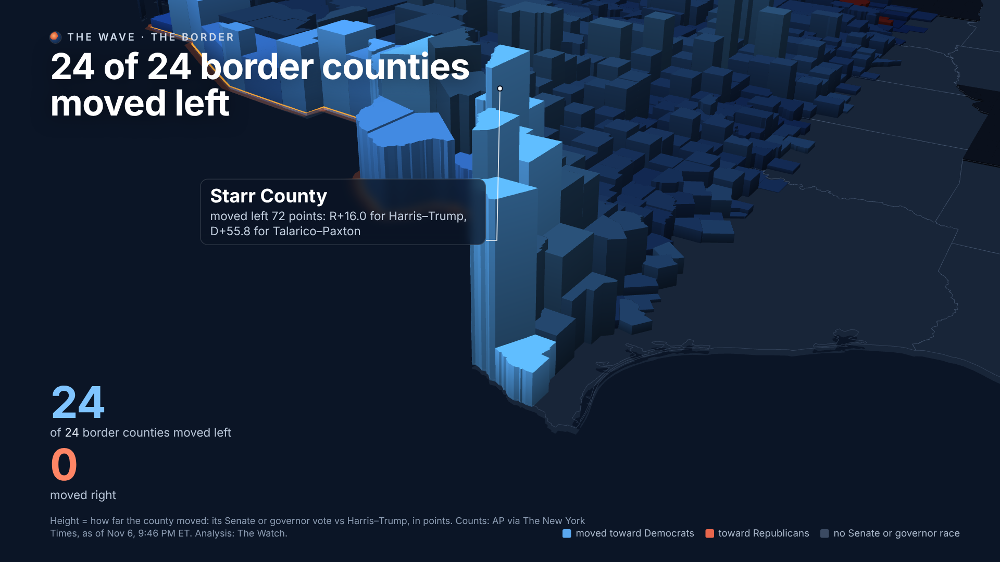
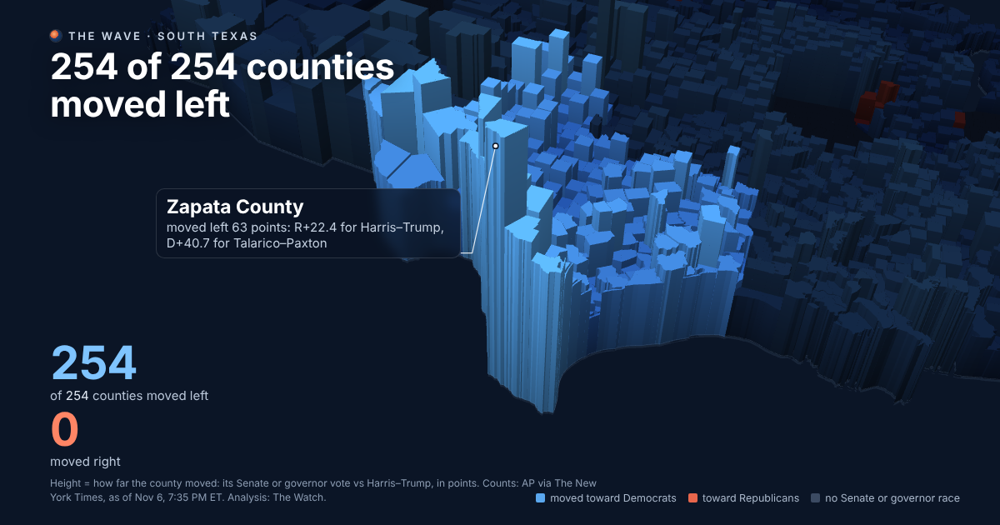
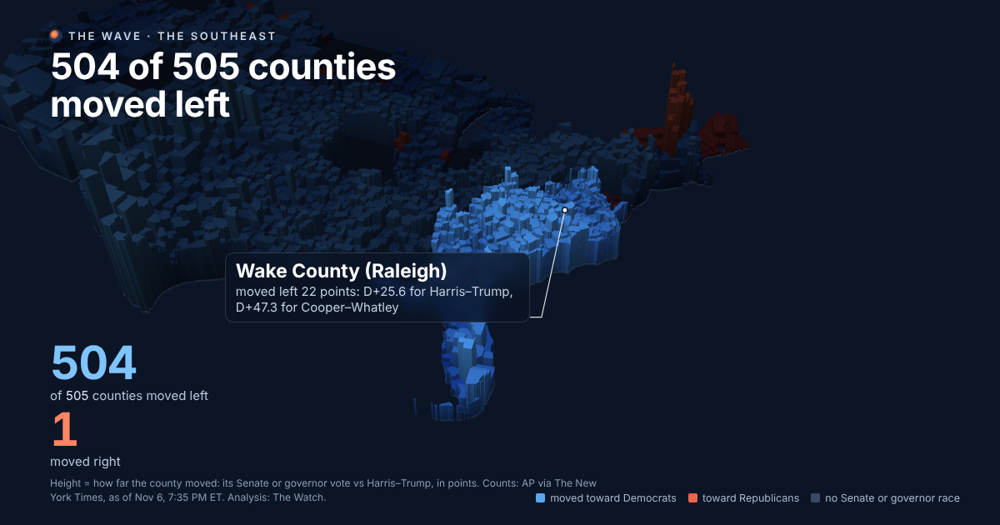
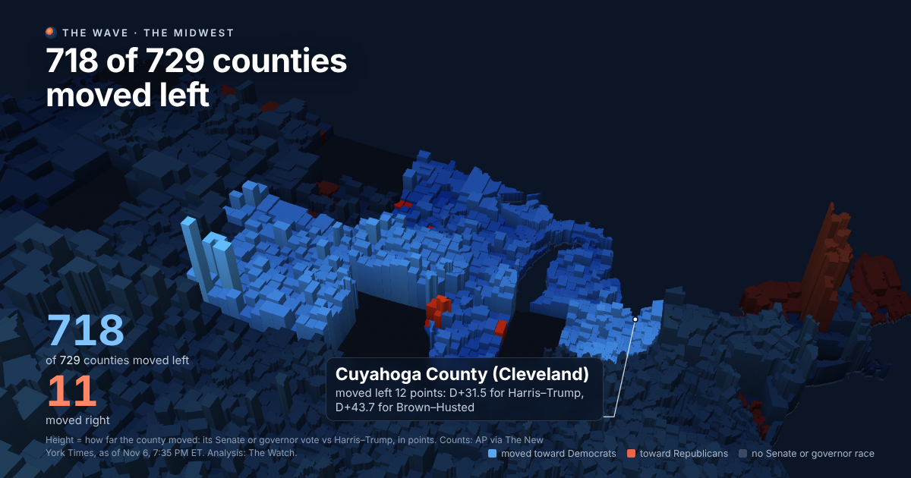
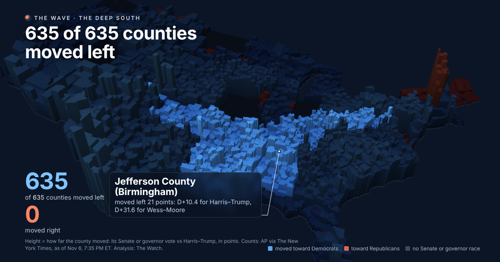
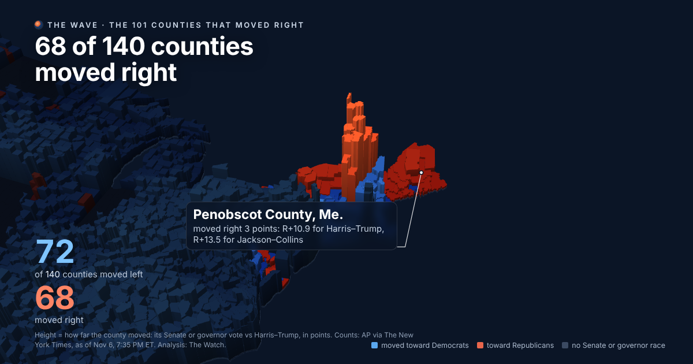

2,673 of 2,775 counties counted moved toward the Democrats
101 moved toward the Republicans
+14.1 the typical county’s move, in points of margin
237 counties went from a Trump win in 2024 to a Democratic win
The picture at the top of this page is a map of the United States with every county pulled up into a block. The height of the block is how far that county moved between the presidential vote two years ago and Tuesday’s vote for senator, or for governor where there was no Senate race. Blue means it moved toward the Democrats; red, toward the Republicans. Blank states had neither race on the ballot. Hover a county and it tells you its numbers.1 , 2
What it shows is a wave. Of the 2,775 counties with a count so far, 2,673 moved left and 101 moved right; the typical county moved 14.1 points, and weighting by votes cast the move is 14.1, so it is not a story of small places only.1 , 2
The result is the Congress and the governors’ mansions that go with it. Democrats took the Senate with seven seats flipped, Texas, North Carolina, South Carolina, Ohio, Kansas, Iowa and Maine, and stood at 54 seats with Alaska and Mississippi still counting; they took the House with at least 254 seats called, the largest majority since 2008, on a national House vote about 13 points in their favor, the widest margin for either party in a midterm since 1974.3 , 4 , 5 , 6 13 12 , 5
How big a wave
The last midterm in which either party won the House vote by as much as this was 1974, three months after Richard Nixon resigned, which is why this week’s coverage keeps reaching for Watergate.5 , 6 5 5 5
Midterm President House vote House seats won by the other party
1974 Ford (R) D+13.7 291 (D) 1994 Clinton (D) R+6.8 230 (R) 2006 Bush (R) D+8.0 233 (D) 2010 Obama (D) R+6.8 242 (R) 2018 Trump (R) D+8.6 235 (D) 2026 Trump (R) about D+13 254 called, 414 of 435 decided
Past years’ House votes and seats are the standard figures from the Clerk of the House’s election statistics; 1994 and 2010 margins and the 1974 comparison are as reported by Yahoo News and Strength In Numbers.5 , 6
How to read the wave
The map answers one question for each county: compared with the Harris–Trump vote, was Tuesday’s vote more Democratic or less, and by how much? The measure is the margin, Democratic share minus Republican share of all votes cast, in 2026 minus the same in 2024. A county that went from Trump +16 to Talarico +56, as Starr County, Texas, did, moved 72 points, and that is the tallest block on the map.1 , 2
A move is not a flip. West Virginia moved +21 points and still re-elected Shelley Moore Capito by 20; Wyoming moved +16 and elected Harriet Hageman by 30.1 1 , 2 16
The picture is The Watch’s own, drawn in your browser from the public county counts, but the idea is borrowed: a 3-D map by the Instagram account rendered.earth, posted this week under the same headline, which we wanted to check and could reproduce almost exactly from the data (their count was 2,665 of 2,767; ours, from a later and slightly different count, is 2,673 of 2,775).18 7 , 8 , 16
Where it moved most
Texas, by a distance. The state moved +25.8 points, from Trump +13.7 to Talarico +12.1; Gina Hinojosa beat Greg Abbott by 7.1 for governor.1 , 15 1 The border counties that swung hardest ›
The rest of the top of the list is southwest Kansas, Seward, Ford and Finney counties, meatpacking towns that moved 52, 39 and 37 points and carried Adam Hamilton past Roger Marshall.1 , 10
By state, the swings were largest in Texas (+25.8), Pennsylvania (+23.9, Josh Shapiro), Rhode Island (+23.6), Mississippi (+23.2) and North Carolina (+22.8); smallest in Maine (-0.6), Maryland and Connecticut, and negative only in Vermont (-38.4), where Phil Scott, a Republican governor in a state Harris won by 32, was re-elected.1
Region Counties Left Right Typical move Vote-weighted Trump → Dem South 1394 1393 1 +16.0 +18.0 135 Midwest 795 773 22 +10.8 +11.3 45 Northeast 236 168 68 +8.6 +12.0 26 West 350 339 10 +10.7 +11.5 31
Where the votes are
The tallest blocks are mostly small places. The big counties moved less in points and far more in votes: Los Angeles, CA +13.1 on 2,970,572 votes; Maricopa, AZ +19.7 on 1,528,828 votes; Cook, IL +18.1 on 1,455,663 votes; Harris, TX +27.4 on 1,382,875 votes; Orange, CA +5.3 on 940,690 votes; San Diego, CA +5.3 on 877,875 votes.1 1 , 10
The rural places moved as far as the cities or farther. The Washington Post found rural counties shifting more than 15 points; the exit polls had rural voters at 57–41 for Republicans, a 16-point margin against 32 two years ago.11 1 , 2
The 101 that moved right
They are in Vermont (14), Maine (14), New York (31), Maryland (9) and a scattering of small counties in California, Florida, Idaho, Illinois, Minnesota, Montana, Nevada, South Dakota, Wisconsin.1 1 , 3 , 14 Where the map moved right ›
The night as it happened
The second view, Election night, replays Tuesday from 6 p.m. to 3 a.m. Eastern. The half-circle is the House, 435 seats, with the 35 Senate seats on the ballot in the inner row; a seat lights up at the minute AP’s call was accepted, blue from the left and red from the right, and the counties in that district reach up to claim it. Below, each county’s block rises as its votes come in, blue or red by who led there.1 19
By 3 a.m. ET, 219 House seats had been called for Democrats and 135 for Republicans; the Senate stood at 20–12 of the 35 on the ballot, and AP’s count gave Democrats the Senate at 11:34 PM and the House at 2:13 AM.1 1
The border, and five places up close
Each of these takes a region of the map, turns the camera on it and walks through its counties.
The House
All 435 seats, seat by seat 252 Democrats, 161 Republicans, 22 not called. Tap a seat for its note; the seats that flipped, came closest or drew the most money have a reported piece (80 so far).
The money
The $67 million behind six Senate races, and what it bought A crypto super PAC was the biggest outside spender in The Watch's federal data, and most of its money went into an Alabama primary. The filings so far show only part of what the national players spent.

The border
The wall, and the counties around it A flight along the boundary from San Diego to Brownsville: all 24 counties on it moved left, and the Texas map drawn to flip five seats flipped one.

Part 1 · South Texas
The border counties that swung hardest Starr County moved 72 points. The Rio Grande Valley and the counties along the border, which went for Trump two years ago, came back to the Democrats harder than anywhere else in the country.

Part 2 · The Southeast
The Southeast: every county in four states, and most of Florida Georgia, North Carolina, South Carolina and Virginia moved left in every county. Florida moved too, even as it stayed red.

Part 3 · The Midwest
The Midwest: Ohio, Iowa and Kansas flip Three Senate seats Trump carried by double digits changed hands. The swing ran from the Great Lakes to the Kansas prairie, meatpacking towns included.

Part 4 · The Deep South
The Deep South and Appalachia: the reddest counties moved too Republicans held every seat here but Mississippi’s, and every county still moved toward the Democrats, most of them by 15 to 25 points.

Part 5 · The 101 counties that moved right
Where the map moved right Only 101 counties moved toward the Republicans. They are in Vermont, Maine, upstate New York and a few corners of Maryland, and most of them have a governor to thank.
Nearly every county moved left, South Texas most of all
Compared with the 2024 presidential vote, 2,673 of 2,775 counties with a count moved toward Democrats, most by about 14 points. The biggest moves came along the Texas border. The one broad exception was Vermont, where a longtime Republican governor won again.
By Claude (Claude Opus 5.5, with web search) for The Watch, Nov. 7, 2026, from the count as of Nov. 7, 2026; rewritten when the count moves. 16 sources, numbered in the text; the list .
On Nov. 3, voters in 45 states chose a senator or a governor. Of the 2,775 counties where those votes have been counted, 2,673 voted more Democratic than they did in the 2024 race between Kamala Harris and Donald Trump. Only 101 voted more Republican. The typical county moved 14.1 points toward the Democrats, and the move was the same 14.1 points when each county is weighted by its votes. Democrats won 237 counties that Trump carried two years ago. Ten counties went the other way.
This compares a midterm race with a presidential one, so each county's move mixes the national mood with its own candidates. The national mood was clear. 62% of voters in this election disapproved of his job as president, according to the voter poll commissioned by the broadcast networks and the Associated Press1 2
The border moved first and farthest Texas moved more toward the Democrats than any other state. Trump won it by 13.7 points in 2024. This year James Talarico won the Senate race by 12.1, a 25.8-point move. Talarico beat Ken Paxton, whose nomination bolstered Talarico's appeal to Republican and independent voters3 3
Thirteen of the 15 biggest moves toward Democrats on the map were in Texas. Starr County went from a 16-point Trump win to a 56-point Democratic win, a 72-point move, the largest anywhere. Zapata moved 63 points and Maverick 60. Hidalgo, which cast 202,520 votes, went from Trump by 3 to Democrats by 47. Cameron and Webb counties each moved more than 44 points. The Houston Chronicle traced the statewide result to drops in turnout in rural areas GOP nominee Ken Paxton needed to win, and by a shift among Latino voters, particularly in South Texas, where turnout spiked.4 5
The other two counties in that top 15 are in southwest Kansas. Adam Hamilton won the state's Senate race by 5.1 points; Trump had carried Kansas by 16.1. Seward County (Liberal) went from Trump by 39 to Hamilton by 13.5, and Ford County (Dodge City) went from Trump by 38 to a one-point Democratic edge. The Kansas Reflector reported that immigration raids in the region drew Democrats were quick to condemn the effects of the raids and paid visits to Dodge City, Garden City and Liberal.6 6
Florida showed how far the shift went and where it stopped. Miami-Dade went from Trump by 11.4 to Democrats by 7.1, but Republican Ashley Moody still won the state by 2.9. Axios Miami, citing the Miami Herald, reported that Moody beat Nixon by around 4 percentage points in majority-Hispanic neighborhoods7
Across the South and the battlegrounds In Pennsylvania, Josh Shapiro won a second term over state Treasurer Stacy Garrity by 22.1 points. The state had voted for Trump by 1.7, so that is a 23.8-point move. Roy Cooper won North Carolina's Senate race by 19.6 points and Jon Ossoff won Georgia by 18.0, after both states voted for Trump. In South Carolina, which Trump carried by 17.9, Annie Andrews won by 4.5.
Where the move came from Every county on the map: how it voted in 2024 against how far it moved; the area of a dot is its 2026 vote. The dashed lines are zero. -50 -40 -30 -20 -10 0 +10 +20 +30 +40 +50 +60 R+80 R+60 R+40 R+20 0 D+20 D+40 D+60 D+80 Harris–Trump margin, 2024 (R+ to the left, D+ to the right) move since 2024, points Los Angeles, CA: moved +13.1; 2024 D+32.9; 2,970,572 votes; turnout 80% of 2024 Maricopa, AZ: moved +19.7; 2024 R+3.5; 1,528,828 votes; turnout 74% of 2024 Cook, IL: moved +18.1; 2024 D+42.0; 1,455,663 votes; turnout 71% of 2024 Harris, TX: moved +27.4; 2024 D+5.5; 1,382,875 votes; turnout 89% of 2024 Orange, CA: moved +5.3; 2024 D+2.6; 940,690 votes; turnout 68% of 2024 San Diego, CA: moved +5.3; 2024 D+16.8; 877,875 votes; turnout 59% of 2024 Miami-Dade, FL: moved +18.6; 2024 R+11.4; 784,728 votes; turnout 72% of 2024 Dallas, TX: moved +23.4; 2024 D+22.2; 783,308 votes; turnout 92% of 2024 Clark, NV: moved +12.9; 2024 D+2.6; 741,428 votes; turnout 72% of 2024 Wayne, MI: moved +13.9; 2024 D+29.0; 738,765 votes; turnout 86% of 2024 Tarrant, TX: moved +24.4; 2024 R+5.1; 728,259 votes; turnout 89% of 2024 Oakland, MI: moved +3.7; 2024 D+10.6; 671,858 votes; turnout 87% of 2024 Hennepin, MN: moved +3.3; 2024 D+42.6; 664,237 votes; turnout 93% of 2024 Broward, FL: moved +15.3; 2024 D+17.0; 660,314 votes; turnout 76% of 2024 Bexar, TX: moved +25.7; 2024 D+9.8; 658,445 votes; turnout 87% of 2024 Kings, NY: moved +15.0; 2024 D+44.0; 622,033 votes; turnout 74% of 2024 Middlesex, MA: moved +4.7; 2024 D+39.5; 614,200 votes; turnout 76% of 2024 Palm Beach, FL: moved +9.5; 2024 D+0.8; 570,658 votes; turnout 77% of 2024 Travis, TX: moved +19.2; 2024 D+39.3; 548,521 votes; turnout 95% of 2024 Suffolk, NY: moved +10.7; 2024 R+10.0; 538,227 votes; turnout 71% of 2024 Nassau, NY: moved +4.4; 2024 R+4.2; 532,336 votes; turnout 75% of 2024 Wake, NC: moved +21.7; 2024 D+25.6; 523,237 votes; turnout 80% of 2024 Hillsborough, FL: moved +12.1; 2024 R+3.1; 517,016 votes; turnout 77% of 2024 Allegheny, PA: moved +23.4; 2024 D+20.3; 516,778 votes; turnout 72% of 2024 Franklin, OH: moved +13.8; 2024 D+28.4; 505,352 votes; turnout 85% of 2024 Queens, NY: moved +19.6; 2024 D+24.6; 494,464 votes; turnout 70% of 2024 Philadelphia, PA: moved +20.1; 2024 D+58.8; 490,540 votes; turnout 68% of 2024 New York, NY: moved -0.2; 2024 D+64.8; 484,204 votes; turnout 75% of 2024 San Bernardino, CA: moved +18.2; 2024 R+2.1; 476,060 votes; turnout 62% of 2024 Cuyahoga, OH: moved +12.2; 2024 D+31.5; 475,488 votes; turnout 83% of 2024 Riverside, CA: moved +16.8; 2024 R+1.3; 472,891 votes; turnout 50% of 2024 Orange, FL: moved +14.9; 2024 D+13.6; 471,829 votes; turnout 78% of 2024 Fairfax, VA: moved +17.1; 2024 D+35.0; 470,209 votes; turnout 80% of 2024 Collin, TX: moved +23.2; 2024 R+11.2; 457,413 votes; turnout 89% of 2024 Fulton, GA: moved +14.4; 2024 D+44.9; 457,118 votes; turnout 85% of 2024 Mecklenburg, NC: moved +20.7; 2024 D+32.9; 439,955 votes; turnout 77% of 2024 Alameda, CA: moved +7.8; 2024 D+53.6; 425,074 votes; turnout 63% of 2024 Macomb, MI: moved +11.9; 2024 R+13.7; 418,419 votes; turnout 82% of 2024 Pima, AZ: moved +15.9; 2024 D+15.2; 404,819 votes; turnout 79% of 2024 Pinellas, FL: moved +5.9; 2024 R+5.2; 403,626 votes; turnout 78% of 2024 Denton, TX: moved +21.6; 2024 R+13.2; 395,959 votes; turnout 88% of 2024 Santa Clara, CA: moved +1.1; 2024 D+40.0; 393,382 votes; turnout 52% of 2024 Montgomery, PA: moved +23.3; 2024 D+22.8; 390,151 votes; turnout 75% of 2024 Multnomah, OR: moved +4.6; 2024 D+62.1; 362,595 votes; turnout 89% of 2024 Contra Costa, CA: moved +4.6; 2024 D+38.0; 362,048 votes; turnout 68% of 2024 Milwaukee, WI: moved +13.5; 2024 D+38.5; 356,762 votes; turnout 77% of 2024 Duval, FL: moved +12.3; 2024 R+1.5; 356,347 votes; turnout 76% of 2024 Sacramento, CA: moved +9.8; 2024 D+19.7; 355,971 votes; turnout 54% of 2024 Erie, NY: moved +1.4; 2024 D+9.7; 349,232 votes; turnout 77% of 2024 Gwinnett, GA: moved +26.1; 2024 D+16.5; 343,835 votes; turnout 82% of 2024 Hamilton, OH: moved +10.4; 2024 D+14.9; 342,187 votes; turnout 84% of 2024 DuPage, IL: moved +15.6; 2024 D+13.3; 338,941 votes; turnout 75% of 2024 Cobb, GA: moved +19.3; 2024 D+14.9; 335,866 votes; turnout 84% of 2024 Westchester, NY: moved +5.5; 2024 D+26.3; 335,847 votes; turnout 74% of 2024 Fort Bend, TX: moved +27.0; 2024 D+1.6; 331,775 votes; turnout 92% of 2024 Montgomery, MD: moved +9.5; 2024 D+53.3; 328,738 votes; turnout 64% of 2024 Kent, MI: moved +8.3; 2024 D+5.4; 324,306 votes; turnout 87% of 2024 DeKalb, GA: moved +12.7; 2024 D+64.8; 321,686 votes; turnout 88% of 2024 San Francisco, CA: moved +4.4; 2024 D+64.8; 321,577 votes; turnout 80% of 2024 El Paso, CO: moved +13.6; 2024 R+9.8; 313,166 votes; turnout 82% of 2024 Bergen, NJ: moved +21.2; 2024 D+3.4; 312,990 votes; turnout 68% of 2024 Worcester, MA: moved +6.2; 2024 D+10.0; 312,766 votes; turnout 75% of 2024 Dane, WI: moved +9.2; 2024 D+51.7; 311,216 votes; turnout 85% of 2024 Jefferson, CO: moved +12.9; 2024 D+19.5; 308,515 votes; turnout 85% of 2024 Denver, CO: moved +14.2; 2024 D+56.1; 305,655 votes; turnout 84% of 2024 Lee, FL: moved +7.0; 2024 R+28.4; 304,021 votes; turnout 77% of 2024 Bucks, PA: moved +25.8; 2024 R+0.1; 303,780 votes; turnout 76% of 2024 Essex, MA: moved +8.7; 2024 D+20.3; 298,772 votes; turnout 75% of 2024 Johnson, KS: moved +19.5; 2024 D+8.5; 297,051 votes; turnout 86% of 2024 Norfolk, MA: moved +2.6; 2024 D+28.8; 295,500 votes; turnout 77% of 2024 Williamson, TX: moved +22.8; 2024 R+2.5; 278,482 votes; turnout 90% of 2024 Monroe, NY: moved +3.8; 2024 D+19.1; 272,802 votes; turnout 76% of 2024 Brevard, FL: moved +6.6; 2024 R+20.8; 270,072 votes; turnout 75% of 2024 Jefferson, KY: moved +15.4; 2024 D+16.6; 264,869 votes; turnout 75% of 2024 Arapahoe, CO: moved +16.2; 2024 D+20.1; 259,598 votes; turnout 80% of 2024 Baltimore, MD: moved -1.0; 2024 D+24.5; 258,935 votes; turnout 63% of 2024 Montgomery, TX: moved +23.2; 2024 R+45.5; 258,438 votes; turnout 84% of 2024 Polk, FL: moved +14.0; 2024 R+20.7; 257,911 votes; turnout 74% of 2024 Prince George's, MD: moved +7.1; 2024 D+75.2; 256,875 votes; turnout 64% of 2024 Ramsey, MN: moved +8.2; 2024 D+43.3; 249,770 votes; turnout 90% of 2024 Bernalillo, NM: moved +16.9; 2024 D+21.0; 249,767 votes; turnout 80% of 2024 Honolulu, HI: moved +22.2; 2024 D+21.6; 248,995 votes; turnout 73% of 2024 Shelby, TN: moved +11.8; 2024 D+25.4; 248,486 votes; turnout 76% of 2024 Jefferson, AL: moved +21.1; 2024 D+10.4; 246,288 votes; turnout 83% of 2024 Chester, PA: moved +22.2; 2024 D+14.5; 243,606 votes; turnout 75% of 2024 Bronx, NY: moved +21.1; 2024 D+45.4; 242,617 votes; turnout 67% of 2024 Middlesex, NJ: moved +27.7; 2024 D+8.0; 242,561 votes; turnout 66% of 2024 Washington, OR: moved +3.4; 2024 D+34.0; 240,561 votes; turnout 82% of 2024 Pasco, FL: moved +11.0; 2024 R+25.2; 240,319 votes; turnout 75% of 2024 Volusia, FL: moved +6.2; 2024 R+21.8; 236,704 votes; turnout 76% of 2024 Monmouth, NJ: moved +17.7; 2024 R+11.4; 235,208 votes; turnout 65% of 2024 Delaware, PA: moved +22.2; 2024 D+23.7; 234,015 votes; turnout 71% of 2024 Dakota, MN: moved +4.7; 2024 D+12.9; 231,084 votes; turnout 89% of 2024 Plymouth, MA: moved +4.1; 2024 D+8.8; 229,390 votes; turnout 77% of 2024 Will, IL: moved +17.7; 2024 D+1.6; 229,189 votes; turnout 71% of 2024 Oklahoma, OK: moved +15.2; 2024 R+1.7; 228,408 votes; turnout 79% of 2024 Ada, ID: moved +13.2; 2024 R+10.3; 226,077 votes; turnout 85% of 2024 Summit, OH: moved +15.6; 2024 D+7.0; 225,274 votes; turnout 82% of 2024 Lake, IL: moved +13.6; 2024 D+20.8; 223,587 votes; turnout 72% of 2024 Sarasota, FL: moved +1.7; 2024 R+18.2; 223,509 votes; turnout 80% of 2024 Ventura, CA: moved +6.4; 2024 D+15.1; 222,093 votes; turnout 57% of 2024 Essex, NJ: moved +17.7; 2024 D+44.9; 221,996 votes; turnout 71% of 2024 Davidson, TN: moved +17.3; 2024 D+27.4; 221,227 votes; turnout 76% of 2024 Polk, IA: moved +15.8; 2024 D+10.9; 220,412 votes; turnout 86% of 2024 El Paso, TX: moved +32.8; 2024 D+15.1; 219,956 votes; turnout 88% of 2024 Douglas, NE: moved +10.9; 2024 D+10.2; 219,335 votes; turnout 80% of 2024 Waukesha, WI: moved +4.6; 2024 R+19.8; 218,445 votes; turnout 79% of 2024 Anne Arundel, MD: moved +2.0; 2024 D+13.9; 218,100 votes; turnout 71% of 2024 Guilford, NC: moved +20.2; 2024 D+21.8; 217,239 votes; turnout 76% of 2024 Greenville, SC: moved +24.4; 2024 R+22.2; 215,533 votes; turnout 82% of 2024 Lancaster, PA: moved +20.4; 2024 R+15.9; 215,211 votes; turnout 74% of 2024 Ocean, NJ: moved +27.4; 2024 R+36.0; 214,124 votes; turnout 64% of 2024 Clackamas, OR: moved +3.1; 2024 D+9.7; 210,692 votes; turnout 89% of 2024 Hillsborough, NH: moved +13.2; 2024 D+2.9; 210,340 votes; turnout 90% of 2024 Suffolk, MA: moved +7.2; 2024 D+52.5; 207,295 votes; turnout 70% of 2024 Douglas, CO: moved +11.1; 2024 R+7.0; 206,030 votes; turnout 85% of 2024 Washoe, NV: moved +7.6; 2024 D+1.0; 205,200 votes; turnout 78% of 2024 Montgomery, OH: moved +14.5; 2024 D+0.5; 202,829 votes; turnout 80% of 2024 Hidalgo, TX: moved +49.3; 2024 R+2.9; 202,520 votes; turnout 93% of 2024 Bristol, MA: moved +11.3; 2024 D+1.3; 201,850 votes; turnout 73% of 2024 Washtenaw, MI: moved +5.3; 2024 D+44.4; 200,763 votes; turnout 91% of 2024 New Castle, DE: moved +12.4; 2024 D+32.6; 199,638 votes; turnout 72% of 2024 Adams, CO: moved +22.9; 2024 D+9.0; 195,886 votes; turnout 84% of 2024 Morris, NJ: moved +14.9; 2024 R+2.7; 195,609 votes; turnout 69% of 2024 Seminole, FL: moved +10.3; 2024 R+3.5; 195,588 votes; turnout 77% of 2024 Larimer, CO: moved +12.8; 2024 D+17.6; 193,582 votes; turnout 86% of 2024 Tulsa, OK: moved +13.9; 2024 R+15.2; 191,607 votes; turnout 75% of 2024 Providence, RI: moved +26.1; 2024 D+14.4; 184,130 votes; turnout 68% of 2024 Virginia Beach, VA: moved +15.3; 2024 D+2.6; 183,966 votes; turnout 81% of 2024 Lane, OR: moved +3.4; 2024 D+23.1; 183,811 votes; turnout 89% of 2024 Prince William, VA: moved +24.9; 2024 D+18.0; 183,232 votes; turnout 81% of 2024 Sedgwick, KS: moved +21.5; 2024 R+13.8; 182,715 votes; turnout 85% of 2024 Manatee, FL: moved +4.2; 2024 R+23.5; 182,260 votes; turnout 80% of 2024 Anoka, MN: moved +6.3; 2024 R+4.4; 181,952 votes; turnout 87% of 2024 Genesee, MI: moved +8.7; 2024 D+4.2; 181,472 votes; turnout 81% of 2024 Loudoun, VA: moved +21.5; 2024 D+16.3; 181,138 votes; turnout 79% of 2024 York, PA: moved +23.8; 2024 R+25.3; 179,352 votes; turnout 72% of 2024 Lake, FL: moved +6.3; 2024 R+24.7; 178,072 votes; turnout 79% of 2024 San Mateo, CA: moved -1.9; 2024 D+50.3; 176,984 votes; turnout 54% of 2024 Charleston, SC: moved +20.4; 2024 D+5.7; 175,121 votes; turnout 82% of 2024 Cumberland, ME: moved -1.5; 2024 D+36.3; 174,891 votes; turnout 88% of 2024 Union, NJ: moved +21.3; 2024 D+24.2; 174,651 votes; turnout 73% of 2024 Chesterfield, VA: moved +15.9; 2024 D+9.0; 174,515 votes; turnout 83% of 2024 Onondaga, NY: moved +2.3; 2024 D+17.3; 172,610 votes; turnout 76% of 2024 Collier, FL: moved +4.3; 2024 R+33.1; 171,729 votes; turnout 79% of 2024 Camden, NJ: moved +19.6; 2024 D+27.4; 169,969 votes; turnout 69% of 2024 Boulder, CO: moved +8.8; 2024 D+55.8; 168,613 votes; turnout 86% of 2024 Burlington, NJ: moved +16.6; 2024 D+16.6; 167,649 votes; turnout 73% of 2024 Kane, IL: moved +17.5; 2024 D+9.4; 166,523 votes; turnout 75% of 2024 San Joaquin, CA: moved +17.3; 2024 R+0.9; 165,420 votes; turnout 63% of 2024 Fresno, CA: moved +12.2; 2024 R+4.4; 165,252 votes; turnout 51% of 2024 Horry, SC: moved +17.1; 2024 R+38.5; 164,151 votes; turnout 80% of 2024 Marion, FL: moved +5.8; 2024 R+31.6; 163,936 votes; turnout 77% of 2024 Richland, SC: moved +18.6; 2024 D+34.6; 161,725 votes; turnout 89% of 2024 Ottawa, MI: moved +4.7; 2024 R+20.4; 160,391 votes; turnout 90% of 2024 Madison, AL: moved +18.9; 2024 R+9.0; 159,132 votes; turnout 81% of 2024 Pinal, AZ: moved +19.2; 2024 R+22.1; 158,896 votes; turnout 76% of 2024 Rockingham, NH: moved +9.5; 2024 R+2.4; 158,404 votes; turnout 78% of 2024 Knox, TN: moved +17.6; 2024 R+19.5; 156,270 votes; turnout 70% of 2024 St. Johns, FL: moved +5.1; 2024 R+31.4; 156,111 votes; turnout 79% of 2024 Hampden, MA: moved +9.3; 2024 D+8.9; 154,019 votes; turnout 74% of 2024 Henrico, VA: moved +15.5; 2024 D+28.9; 153,975 votes; turnout 85% of 2024 Lucas, OH: moved +13.2; 2024 D+12.6; 152,674 votes; turnout 80% of 2024 Forsyth, NC: moved +22.3; 2024 D+13.2; 152,572 votes; turnout 75% of 2024 East Baton Rouge, LA: moved +17.6; 2024 D+11.1; 152,163 votes; turnout 80% of 2024 Durham, NC: moved +13.7; 2024 D+61.9; 150,482 votes; turnout 84% of 2024 Washington, MN: moved +3.1; 2024 D+8.9; 149,501 votes; turnout 89% of 2024 Hudson, NJ: moved +31.6; 2024 D+28.1; 148,389 votes; turnout 64% of 2024 Weld, CO: moved +18.0; 2024 R+21.0; 148,041 votes; turnout 82% of 2024 Butler, OH: moved +15.9; 2024 R+26.3; 146,581 votes; turnout 80% of 2024 Stark, OH: moved +16.6; 2024 R+21.9; 144,622 votes; turnout 79% of 2024 Solano, CA: moved +7.3; 2024 D+23.0; 144,010 votes; turnout 76% of 2024 Baltimore, MD: moved +1.7; 2024 D+73.0; 143,747 votes; turnout 63% of 2024 Westmoreland, PA: moved +25.9; 2024 R+28.4; 143,540 votes; turnout 68% of 2024 Berks, PA: moved +24.6; 2024 R+12.2; 142,857 votes; turnout 68% of 2024 Kern, CA: moved +20.4; 2024 R+21.1; 142,475 votes; turnout 50% of 2024 Brazoria, TX: moved +25.1; 2024 R+19.7; 141,824 votes; turnout 88% of 2024 Placer, CA: moved +3.3; 2024 R+8.5; 141,056 votes; turnout 60% of 2024 St. Lucie, FL: moved +11.4; 2024 R+9.1; 139,080 votes; turnout 75% of 2024 Lehigh, PA: moved +26.5; 2024 D+2.7; 136,784 votes; turnout 72% of 2024 Richmond, NY: moved +12.7; 2024 R+29.8; 134,727 votes; turnout 68% of 2024 Galveston, TX: moved +21.5; 2024 R+27.4; 134,555 votes; turnout 85% of 2024 Howard, MD: moved +4.6; 2024 D+41.7; 133,827 votes; turnout 74% of 2024 Orleans, LA: moved +10.2; 2024 D+67.0; 131,987 votes; turnout 83% of 2024 Osceola, FL: moved +19.9; 2024 R+1.4; 131,845 votes; turnout 76% of 2024 Ingham, MI: moved +9.1; 2024 D+29.7; 131,602 votes; turnout 89% of 2024 Passaic, NJ: moved +30.8; 2024 R+2.9; 131,402 votes; turnout 65% of 2024 Buncombe, NC: moved +21.4; 2024 D+24.8; 131,206 votes; turnout 82% of 2024 Jefferson, LA: moved +20.4; 2024 R+12.9; 130,861 votes; turnout 73% of 2024 Pulaski, AR: moved +13.1; 2024 D+22.1; 130,223 votes; turnout 85% of 2024 Lorain, OH: moved +16.9; 2024 R+5.7; 129,806 votes; turnout 82% of 2024 Somerset, NJ: moved +16.8; 2024 D+13.9; 128,339 votes; turnout 72% of 2024 Lancaster, NE: moved +15.7; 2024 D+4.3; 127,622 votes; turnout 81% of 2024 Northampton, PA: moved +26.1; 2024 R+1.8; 127,348 votes; turnout 71% of 2024 Mobile, AL: moved +20.5; 2024 R+16.4; 126,804 votes; turnout 73% of 2024 Cherokee, GA: moved +18.4; 2024 R+39.0; 126,548 votes; turnout 78% of 2024 Kalamazoo, MI: moved +7.1; 2024 D+17.7; 125,847 votes; turnout 86% of 2024 Leon, FL: moved +9.6; 2024 D+21.8; 125,659 votes; turnout 80% of 2024 Hamilton, TN: moved +15.6; 2024 R+13.1; 124,252 votes; turnout 71% of 2024 Orange, NY: moved +17.8; 2024 R+8.4; 123,999 votes; turnout 71% of 2024 Yavapai, AZ: moved +12.1; 2024 R+33.9; 120,215 votes; turnout 80% of 2024 Rockland, NY: moved +18.7; 2024 R+11.8; 119,849 votes; turnout 80% of 2024 Barnstable, MA: moved +1.4; 2024 D+20.8; 119,785 votes; turnout 81% of 2024 Hays, TX: moved +26.4; 2024 D+5.6; 119,693 votes; turnout 95% of 2024 Spartanburg, SC: moved +28.9; 2024 R+33.6; 119,644 votes; turnout 77% of 2024 Delaware, OH: moved +11.1; 2024 R+6.6; 117,285 votes; turnout 88% of 2024 Escambia, FL: moved +9.9; 2024 R+19.5; 116,440 votes; turnout 72% of 2024 York, SC: moved +22.6; 2024 R+19.1; 116,035 votes; turnout 77% of 2024 Albany, NY: moved +5.9; 2024 D+25.8; 115,951 votes; turnout 79% of 2024 Lexington, SC: moved +25.7; 2024 R+33.5; 115,893 votes; turnout 79% of 2024 Sussex, DE: moved +13.9; 2024 R+11.0; 115,063 votes; turnout 78% of 2024 McHenry, IL: moved +16.3; 2024 R+5.3; 114,667 votes; turnout 71% of 2024 Gloucester, NJ: moved +21.3; 2024 R+2.8; 114,603 votes; turnout 70% of 2024 Dauphin, PA: moved +22.2; 2024 D+5.9; 114,579 votes; turnout 77% of 2024 Cumberland, PA: moved +24.0; 2024 R+9.4; 114,527 votes; turnout 77% of 2024 Brown, WI: moved +9.7; 2024 R+7.5; 114,357 votes; turnout 77% of 2024 Livingston, MI: moved +3.5; 2024 R+23.9; 113,573 votes; turnout 86% of 2024 Fayette, KY: moved +13.5; 2024 D+18.1; 113,267 votes; turnout 79% of 2024 Dutchess, NY: moved +7.0; 2024 D+5.4; 113,108 votes; turnout 75% of 2024 Warren, OH: moved +13.6; 2024 R+31.5; 113,087 votes; turnout 81% of 2024 York, ME: moved +0.5; 2024 D+10.5; 112,472 votes; turnout 85% of 2024 Chatham, GA: moved +16.5; 2024 D+18.0; 111,830 votes; turnout 79% of 2024 Mercer, NJ: moved +17.7; 2024 D+33.9; 111,669 votes; turnout 68% of 2024 Luzerne, PA: moved +28.2; 2024 R+19.2; 111,652 votes; turnout 72% of 2024 Bell, TX: moved +21.4; 2024 R+16.2; 110,495 votes; turnout 85% of 2024 Frederick, MD: moved +8.3; 2024 D+8.8; 110,230 votes; turnout 71% of 2024 Henry, GA: moved +22.7; 2024 D+29.7; 109,578 votes; turnout 85% of 2024 Deschutes, OR: moved +5.4; 2024 D+10.1; 107,459 votes; turnout 88% of 2024 Forsyth, GA: moved +21.8; 2024 R+33.1; 107,037 votes; turnout 77% of 2024 Sonoma, CA: moved +5.7; 2024 D+46.2; 106,915 votes; turnout 43% of 2024 Linn, IA: moved +14.0; 2024 D+9.9; 106,737 votes; turnout 87% of 2024 Harford, MD: moved +0.9; 2024 R+13.8; 106,265 votes; turnout 71% of 2024 Lake, OH: moved +16.0; 2024 R+14.3; 105,841 votes; turnout 82% of 2024 Alachua, FL: moved +12.1; 2024 D+21.0; 105,606 votes; turnout 77% of 2024 Lubbock, TX: moved +23.0; 2024 R+39.5; 104,328 votes; turnout 83% of 2024 Williamson, TN: moved +8.7; 2024 R+32.4; 103,659 votes; turnout 72% of 2024 Arlington, VA: moved +11.3; 2024 D+58.6; 102,818 votes; turnout 80% of 2024 New Hanover, NC: moved +21.8; 2024 D+0.6; 102,740 votes; turnout 74% of 2024 Cameron, TX: moved +44.3; 2024 R+5.8; 102,017 votes; turnout 88% of 2024 St. Tammany, LA: moved +17.9; 2024 R+43.8; 101,613 votes; turnout 73% of 2024 Jackson, OR: moved +6.2; 2024 R+6.4; 101,226 votes; turnout 85% of 2024 Chesapeake, VA: moved +15.1; 2024 D+3.8; 100,593 votes; turnout 79% of 2024 Union, NC: moved +22.4; 2024 R+25.3; 100,583 votes; turnout 72% of 2024 Charlotte, FL: moved +0.6; 2024 R+34.0; 100,544 votes; turnout 81% of 2024 Saratoga, NY: moved +2.9; 2024 D+1.8; 100,543 votes; turnout 77% of 2024 Rutherford, TN: moved +22.0; 2024 R+21.8; 100,344 votes; turnout 68% of 2024 St. Louis, MN: moved +8.6; 2024 D+13.7; 100,101 votes; turnout 84% of 2024 Nueces, TX: moved +22.7; 2024 R+11.5; 99,851 votes; turnout 82% of 2024 Santa Barbara, CA: moved +5.2; 2024 D+26.7; 99,602 votes; turnout 54% of 2024 Monterey, CA: moved +10.4; 2024 D+29.9; 99,494 votes; turnout 68% of 2024 Stanislaus, CA: moved +16.8; 2024 R+11.0; 99,420 votes; turnout 50% of 2024 Benton, AR: moved +20.9; 2024 R+27.0; 99,022 votes; turnout 77% of 2024 Madison, IL: moved +12.6; 2024 R+13.3; 98,609 votes; turnout 74% of 2024 Santa Cruz, CA: moved +3.7; 2024 D+54.4; 97,885 votes; turnout 73% of 2024 Clayton, GA: moved +13.8; 2024 D+69.2; 95,819 votes; turnout 86% of 2024 Cumberland, NC: moved +21.7; 2024 D+13.4; 95,138 votes; turnout 68% of 2024 Marion, OR: moved +7.4; 2024 R+2.0; 95,126 votes; turnout 61% of 2024 Sumter, FL: moved -5.6; 2024 R+37.6; 95,037 votes; turnout 90% of 2024 Erie, PA: moved +24.9; 2024 R+1.0; 94,544 votes; turnout 69% of 2024 Clay, FL: moved +9.1; 2024 R+39.3; 93,314 votes; turnout 74% of 2024 Atlantic, NJ: moved +17.0; 2024 R+3.0; 92,005 votes; turnout 71% of 2024 Richmond, VA: moved +10.8; 2024 D+66.3; 91,496 votes; turnout 85% of 2024 Berkeley, SC: moved +25.7; 2024 R+16.3; 90,990 votes; turnout 81% of 2024 St. Clair, IL: moved +9.5; 2024 D+7.9; 90,234 votes; turnout 75% of 2024 Cleveland, OK: moved +16.0; 2024 R+14.9; 89,797 votes; turnout 75% of 2024 Clermont, OH: moved +16.0; 2024 R+35.8; 89,383 votes; turnout 78% of 2024 Winnebago, IL: moved +12.2; 2024 D+0.6; 89,375 votes; turnout 74% of 2024 Comal, TX: moved +16.2; 2024 R+45.5; 89,221 votes; turnout 86% of 2024 Mahoning, OH: moved +16.6; 2024 R+9.4; 89,146 votes; turnout 79% of 2024 Smith, TX: moved +20.5; 2024 R+45.1; 88,960 votes; turnout 86% of 2024 Johnston, NC: moved +27.6; 2024 R+21.5; 88,773 votes; turnout 71% of 2024 Ellis, TX: moved +26.6; 2024 R+31.1; 88,524 votes; turnout 89% of 2024 Cabarrus, NC: moved +25.1; 2024 R+7.7; 86,912 votes; turnout 73% of 2024 Brunswick, NC: moved +18.9; 2024 R+24.9; 86,688 votes; turnout 79% of 2024 Beaufort, SC: moved +11.8; 2024 R+14.5; 86,168 votes; turnout 83% of 2024 Shelby, AL: moved +21.3; 2024 R+40.8; 86,091 votes; turnout 75% of 2024 Lackawanna, PA: moved +30.0; 2024 D+2.8; 85,972 votes; turnout 74% of 2024 Saginaw, MI: moved +5.2; 2024 R+3.3; 85,909 votes; turnout 83% of 2024 Baldwin, AL: moved +13.8; 2024 R+58.2; 85,491 votes; turnout 70% of 2024 Butler, PA: moved +24.9; 2024 R+32.2; 85,450 votes; turnout 70% of 2024 Strafford, NH: moved +15.2; 2024 D+12.1; 85,442 votes; turnout 112% of 2024 Medina, OH: moved +15.4; 2024 R+24.8; 85,424 votes; turnout 80% of 2024 Outagamie, WI: moved +9.5; 2024 R+10.2; 85,412 votes; turnout 76% of 2024 Chittenden, VT: moved -47.0; 2024 D+53.6; 84,113 votes; turnout 87% of 2024 McLennan, TX: moved +22.4; 2024 R+30.9; 83,056 votes; turnout 83% of 2024 Gaston, NC: moved +25.0; 2024 R+25.0; 82,821 votes; turnout 70% of 2024 Racine, WI: moved +8.4; 2024 R+6.2; 82,578 votes; turnout 77% of 2024 Washington, PA: moved +27.9; 2024 R+25.5; 81,888 votes; turnout 67% of 2024 Hernando, FL: moved +7.8; 2024 R+37.0; 80,228 votes; turnout 72% of 2024 Scott, MN: moved +3.1; 2024 R+8.5; 79,874 votes; turnout 89% of 2024 Brazos, TX: moved +30.8; 2024 R+24.9; 79,867 votes; turnout 87% of 2024 El Dorado, CA: moved -0.3; 2024 R+12.0; 79,759 votes; turnout 71% of 2024 Sarpy, NE: moved +16.0; 2024 R+11.7; 79,640 votes; turnout 79% of 2024 Montgomery, AL: moved +15.7; 2024 D+30.7; 79,582 votes; turnout 89% of 2024 St. Clair, MI: moved +5.8; 2024 R+34.6; 79,580 votes; turnout 82% of 2024 Lafayette, LA: moved +21.0; 2024 R+31.4; 79,454 votes; turnout 72% of 2024 San Luis Obispo, CA: moved +3.5; 2024 D+10.9; 79,412 votes; turnout 53% of 2024 Muskegon, MI: moved +7.1; 2024 R+1.8; 79,256 votes; turnout 83% of 2024 Olmsted, MN: moved +8.2; 2024 D+10.7; 78,925 votes; turnout 87% of 2024 Sangamon, IL: moved +6.0; 2024 R+5.0; 78,835 votes; turnout 80% of 2024 Hall, GA: moved +22.6; 2024 R+43.8; 78,562 votes; turnout 77% of 2024 Mohave, AZ: moved +11.9; 2024 R+55.8; 78,104 votes; turnout 71% of 2024 Niagara, NY: moved -0.2; 2024 R+14.9; 77,888 votes; turnout 76% of 2024 Tulare, CA: moved +17.3; 2024 R+20.7; 77,706 votes; turnout 56% of 2024 Okaloosa, FL: moved +7.4; 2024 R+42.5; 77,573 votes; turnout 68% of 2024 Indian River, FL: moved +4.4; 2024 R+27.4; 77,502 votes; turnout 78% of 2024 Oneida, NY: moved -3.2; 2024 R+21.2; 77,481 votes; turnout 77% of 2024 Hinds, MS: moved +14.7; 2024 D+46.1; 77,465 votes; turnout 89% of 2024 Canyon, ID: moved +14.8; 2024 R+46.6; 77,045 votes; turnout 76% of 2024 Martin, FL: moved +4.5; 2024 R+31.1; 76,295 votes; turnout 78% of 2024 Parker, TX: moved +15.5; 2024 R+66.4; 76,140 votes; turnout 84% of 2024 Ulster, NY: moved +5.9; 2024 D+18.7; 76,088 votes; turnout 78% of 2024 Washington, AR: moved +24.2; 2024 R+6.7; 76,041 votes; turnout 78% of 2024 Mesa, CO: moved +13.1; 2024 R+24.3; 75,999 votes; turnout 83% of 2024 Iredell, NC: moved +22.0; 2024 R+32.6; 75,789 votes; turnout 69% of 2024 Wright, MN: moved +3.5; 2024 R+29.4; 75,758 votes; turnout 84% of 2024 Citrus, FL: moved +2.4; 2024 R+45.9; 75,121 votes; turnout 76% of 2024 Johnson, IA: moved +14.5; 2024 D+38.1; 74,923 votes; turnout 87% of 2024 Stearns, MN: moved +7.0; 2024 R+26.8; 74,676 votes; turnout 86% of 2024 Santa Rosa, FL: moved +7.9; 2024 R+51.0; 74,557 votes; turnout 66% of 2024 Paulding, GA: moved +23.8; 2024 R+24.1; 74,446 votes; turnout 78% of 2024 Trumbull, OH: moved +19.4; 2024 R+16.8; 74,350 votes; turnout 77% of 2024 Greene, OH: moved +12.3; 2024 R+19.8; 74,259 votes; turnout 82% of 2024 Licking, OH: moved +17.9; 2024 R+30.0; 74,189 votes; turnout 78% of 2024 Kootenai, ID: moved +5.8; 2024 R+51.8; 74,167 votes; turnout 77% of 2024 Monroe, MI: moved +6.4; 2024 R+27.1; 74,023 votes; turnout 81% of 2024 Anderson, SC: moved +24.0; 2024 R+47.4; 73,906 votes; turnout 75% of 2024 Scott, IA: moved +16.1; 2024 R+3.9; 73,579 votes; turnout 82% of 2024 Jefferson, TX: moved +22.1; 2024 R+8.9; 72,750 votes; turnout 84% of 2024 Winnebago, WI: moved +9.8; 2024 R+4.8; 72,424 votes; turnout 76% of 2024 Merrimack, NH: moved +12.5; 2024 D+5.2; 72,395 votes; turnout 78% of 2024 Orange, NC: moved +16.9; 2024 D+51.1; 72,153 votes; turnout 83% of 2024 Caddo, LA: moved +13.3; 2024 D+4.6; 71,509 votes; turnout 76% of 2024 Penobscot, ME: moved -2.6; 2024 R+10.9; 71,245 votes; turnout 82% of 2024 Guadalupe, TX: moved +23.7; 2024 R+29.5; 70,924 votes; turnout 83% of 2024 Washington, WI: moved +2.9; 2024 R+36.3; 70,724 votes; turnout 78% of 2024 Carroll, MD: moved -2.1; 2024 R+25.0; 70,642 votes; turnout 69% of 2024 Santa Fe, NM: moved +15.1; 2024 D+48.9; 70,494 votes; turnout 84% of 2024 Bay, FL: moved +7.5; 2024 R+47.4; 70,329 votes; turnout 72% of 2024 Shawnee, KS: moved +18.5; 2024 D+0.5; 69,959 votes; turnout 86% of 2024 Johnson, TX: moved +24.3; 2024 R+51.4; 69,924 votes; turnout 87% of 2024 Champaign, IL: moved +8.3; 2024 D+24.1; 69,274 votes; turnout 78% of 2024 Hampshire, MA: moved +3.3; 2024 D+41.9; 68,777 votes; turnout 82% of 2024 Berrien, MI: moved +6.2; 2024 R+7.9; 68,675 votes; turnout 81% of 2024 Marin, CA: moved -4.8; 2024 D+63.9; 68,640 votes; turnout 48% of 2024 Fairfield, OH: moved +17.4; 2024 R+24.1; 68,207 votes; turnout 81% of 2024 Jackson, MI: moved +7.0; 2024 R+21.3; 68,165 votes; turnout 81% of 2024 Pueblo, CO: moved +16.0; 2024 R+5.1; 68,092 votes; turnout 80% of 2024 Alamance, NC: moved +22.9; 2024 R+8.2; 67,849 votes; turnout 76% of 2024 Aiken, SC: moved +21.4; 2024 R+25.9; 67,826 votes; turnout 79% of 2024 Broome, NY: moved -0.1; 2024 D+0.4; 67,691 votes; turnout 75% of 2024 Charles, MD: moved +7.7; 2024 D+40.7; 66,735 votes; turnout 73% of 2024 Norfolk, VA: moved +15.4; 2024 D+41.5; 66,293 votes; turnout 77% of 2024 Sumner, TN: moved +17.0; 2024 R+41.8; 64,555 votes; turnout 66% of 2024 Pitt, NC: moved +18.5; 2024 D+6.0; 62,410 votes; turnout 72% of 2024 Kennebec, ME: moved -3.7; 2024 R+2.8; 61,977 votes; turnout 85% of 2024 Monroe, PA: moved +24.3; 2024 R+0.8; 61,089 votes; turnout 71% of 2024 Douglas, GA: moved +21.6; 2024 D+31.4; 59,350 votes; turnout 84% of 2024 Albemarle, VA: moved +11.3; 2024 D+34.1; 58,283 votes; turnout 87% of 2024 Washington, RI: moved +18.7; 2024 D+15.0; 56,578 votes; turnout 75% of 2024 Dallas, IA: moved +15.4; 2024 R+4.8; 55,817 votes; turnout 89% of 2024 Wood, OH: moved +14.7; 2024 R+10.2; 54,472 votes; turnout 81% of 2024 Grayson, TX: moved +16.8; 2024 R+54.3; 53,782 votes; turnout 82% of 2024 Flathead, MT: moved +5.8; 2024 R+33.8; 51,794 votes; turnout 82% of 2024 Ozaukee, WI: moved +5.4; 2024 R+10.5; 50,827 votes; turnout 80% of 2024 Yamhill, OR: moved +4.9; 2024 R+6.1; 49,822 votes; turnout 87% of 2024 Clark, OH: moved +16.3; 2024 R+29.5; 48,806 votes; turnout 78% of 2024 Kanawha, WV: moved +18.1; 2024 R+17.4; 47,778 votes; turnout 64% of 2024 Walworth, WI: moved +8.1; 2024 R+22.2; 46,261 votes; turnout 77% of 2024 Miami, OH: moved +14.2; 2024 R+45.1; 45,636 votes; turnout 77% of 2024 Pickens, SC: moved +23.4; 2024 R+52.7; 44,795 votes; turnout 74% of 2024 Richland, OH: moved +16.1; 2024 R+42.3; 44,064 votes; turnout 76% of 2024 Dubuque, IA: moved +13.9; 2024 R+8.6; 43,676 votes; turnout 83% of 2024 Benton, OR: moved +1.1; 2024 D+39.6; 43,038 votes; turnout 87% of 2024 Taylor, TX: moved +18.7; 2024 R+49.8; 42,673 votes; turnout 77% of 2024 Craven, NC: moved +16.8; 2024 R+20.5; 41,878 votes; turnout 75% of 2024 Nash, NC: moved +17.6; 2024 R+1.8; 40,831 votes; turnout 78% of 2024 Highlands, FL: moved +5.2; 2024 R+40.8; 39,742 votes; turnout 77% of 2024 Rockdale, GA: moved +17.5; 2024 D+47.5; 38,765 votes; turnout 86% of 2024 Pennington, SD: moved +12.1; 2024 R+26.4; 38,216 votes; turnout 68% of 2024 Calvert, MD: moved +1.0; 2024 R+11.0; 37,775 votes; turnout 70% of 2024 Rockingham, VA: moved +10.0; 2024 R+37.0; 37,254 votes; turnout 77% of 2024 Tom Green, TX: moved +21.1; 2024 R+48.0; 36,169 votes; turnout 80% of 2024 Crow Wing, MN: moved +2.2; 2024 R+31.4; 35,569 votes; turnout 84% of 2024 Franklin, MA: moved +5.1; 2024 D+37.8; 35,063 votes; turnout 83% of 2024 Cleveland, NC: moved +21.6; 2024 R+35.0; 34,539 votes; turnout 67% of 2024 Manitowoc, WI: moved +5.4; 2024 R+23.4; 34,310 votes; turnout 74% of 2024 Woodbury, IA: moved +20.9; 2024 R+23.0; 33,609 votes; turnout 79% of 2024 Franklin, NC: moved +20.5; 2024 R+13.6; 33,160 votes; turnout 78% of 2024 Barrow, GA: moved +26.8; 2024 R+40.5; 32,825 votes; turnout 75% of 2024 Calhoun, AL: moved +21.8; 2024 R+44.8; 32,374 votes; turnout 67% of 2024 Houston, AL: moved +16.6; 2024 R+47.8; 32,006 votes; turnout 72% of 2024 Hancock, ME: moved -2.2; 2024 D+11.8; 31,503 votes; turnout 87% of 2024 Union, OH: moved +15.9; 2024 R+29.6; 31,167 votes; turnout 84% of 2024 Wise, TX: moved +17.8; 2024 R+70.0; 30,972 votes; turnout 81% of 2024 Hood, TX: moved +13.6; 2024 R+66.0; 30,225 votes; turnout 83% of 2024 Blue Earth, MN: moved +8.2; 2024 R+1.2; 29,773 votes; turnout 82% of 2024 Madera, CA: moved +17.4; 2024 R+20.8; 29,394 votes; turnout 54% of 2024 Douglas, NV: moved -2.6; 2024 R+32.9; 28,945 votes; turnout 81% of 2024 Bradley, TN: moved +16.3; 2024 R+58.9; 28,676 votes; turnout 58% of 2024 Monongalia, WV: moved +21.8; 2024 R+4.4; 28,365 votes; turnout 68% of 2024 Victoria, TX: moved +19.5; 2024 R+42.6; 28,167 votes; turnout 80% of 2024 Montcalm, MI: moved +7.2; 2024 R+39.0; 27,686 votes; turnout 79% of 2024 Dougherty, GA: moved +11.8; 2024 D+41.1; 27,196 votes; turnout 80% of 2024 Rutland, VT: moved -36.4; 2024 D+5.3; 26,827 votes; turnout 79% of 2024 Madison, NY: moved -3.0; 2024 R+13.1; 26,526 votes; turnout 79% of 2024 Lincoln, SD: moved +9.3; 2024 R+26.5; 26,253 votes; turnout 72% of 2024 Butler, KS: moved +17.7; 2024 R+41.2; 26,053 votes; turnout 81% of 2024 Pender, NC: moved +22.7; 2024 R+35.0; 25,632 votes; turnout 66% of 2024 Calumet, WI: moved +6.1; 2024 R+20.0; 25,348 votes; turnout 77% of 2024 Greenwood, SC: moved +23.8; 2024 R+29.0; 24,618 votes; turnout 80% of 2024 Tuscola, MI: moved +6.3; 2024 R+43.0; 24,416 votes; turnout 79% of 2024 Pike, PA: moved +21.9; 2024 R+24.1; 24,236 votes; turnout 69% of 2024 Harrison, TX: moved +15.9; 2024 R+50.6; 24,043 votes; turnout 80% of 2024 Loudon, TN: moved +8.7; 2024 R+53.0; 23,843 votes; turnout 72% of 2024 Cumberland, TN: moved +5.6; 2024 R+58.9; 23,639 votes; turnout 68% of 2024 Kerr, TX: moved +17.1; 2024 R+54.3; 23,426 votes; turnout 83% of 2024 Worcester, MD: moved -2.0; 2024 R+22.0; 23,076 votes; turnout 71% of 2024 Wood, WV: moved +18.0; 2024 R+43.0; 22,662 votes; turnout 61% of 2024 Sandusky, OH: moved +17.8; 2024 R+30.9; 22,577 votes; turnout 76% of 2024 Van Zandt, TX: moved +13.9; 2024 R+74.8; 22,153 votes; turnout 79% of 2024 Natrona, WY: moved +18.7; 2024 R+48.6; 21,936 votes; turnout 65% of 2024 Reno, KS: moved +18.7; 2024 R+34.5; 21,725 votes; turnout 81% of 2024 Scioto, OH: moved +22.5; 2024 R+48.0; 21,498 votes; turnout 69% of 2024 Waldo, ME: moved +0.6; 2024 D+3.4; 21,341 votes; turnout 85% of 2024 Calaveras, CA: moved +0.6; 2024 R+28.1; 21,063 votes; turnout 80% of 2024 Lincoln, ME: moved -2.5; 2024 D+11.2; 20,966 votes; turnout 87% of 2024 Isanti, MN: moved +5.6; 2024 R+41.2; 20,826 votes; turnout 81% of 2024 Jones, MS: moved +23.2; 2024 R+46.8; 20,308 votes; turnout 73% of 2024 San Patricio, TX: moved +23.7; 2024 R+36.4; 20,107 votes; turnout 79% of 2024 Franklin, KY: moved +16.5; 2024 R+4.8; 19,935 votes; turnout 77% of 2024 Dunn, WI: moved +8.9; 2024 R+15.9; 19,749 votes; turnout 77% of 2024 Charlottesville, VA: moved +10.5; 2024 D+68.7; 19,630 votes; turnout 84% of 2024 Greene, TN: moved +12.4; 2024 R+65.7; 19,366 votes; turnout 62% of 2024 Buffalo, NE: moved +16.1; 2024 R+44.9; 19,252 votes; turnout 81% of 2024 Greene, NY: moved +5.2; 2024 R+17.0; 19,035 votes; turnout 76% of 2024 Gordon, GA: moved +22.6; 2024 R+63.4; 18,867 votes; turnout 68% of 2024 St. Charles, LA: moved +22.1; 2024 R+32.3; 18,661 votes; turnout 70% of 2024 Shenandoah, VA: moved +14.7; 2024 R+42.2; 18,463 votes; turnout 76% of 2024 Fulton, NY: moved +3.2; 2024 R+35.9; 18,379 votes; turnout 77% of 2024 Shelby, KY: moved +12.9; 2024 R+34.7; 18,055 votes; turnout 73% of 2024 Otero, NM: moved +18.9; 2024 R+27.0; 17,999 votes; turnout 74% of 2024 Jackson, IL: moved +10.2; 2024 D+3.5; 17,834 votes; turnout 80% of 2024 Halifax, NC: moved +14.9; 2024 D+17.7; 17,683 votes; turnout 74% of 2024 Goochland, VA: moved +11.8; 2024 R+18.6; 17,515 votes; turnout 89% of 2024 Jasper, SC: moved +11.7; 2024 R+9.6; 17,426 votes; turnout 96% of 2024 Macoupin, IL: moved +7.8; 2024 R+39.2; 17,333 votes; turnout 74% of 2024 Chenango, NY: moved -4.3; 2024 R+27.2; 17,159 votes; turnout 76% of 2024 Tehama, CA: moved +8.2; 2024 R+41.8; 17,027 votes; turnout 64% of 2024 Grady, OK: moved +15.2; 2024 R+62.7; 16,847 votes; turnout 67% of 2024 Coles, IL: moved +6.1; 2024 R+28.5; 16,685 votes; turnout 78% of 2024 Pearl River, MS: moved +19.2; 2024 R+66.7; 16,526 votes; turnout 67% of 2024 Siskiyou, CA: moved +2.0; 2024 R+19.2; 16,339 votes; turnout 76% of 2024 Transylvania, NC: moved +22.2; 2024 R+12.2; 16,215 votes; turnout 78% of 2024 Woodford, IL: moved +2.0; 2024 R+42.0; 16,176 votes; turnout 77% of 2024 Jackson, NC: moved +26.8; 2024 R+9.4; 16,066 votes; turnout 73% of 2024 Leelanau, MI: moved +2.8; 2024 D+7.8; 15,921 votes; turnout 90% of 2024 Gratiot, MI: moved +7.2; 2024 R+31.3; 15,792 votes; turnout 80% of 2024 Wexford, MI: moved +8.0; 2024 R+34.6; 15,666 votes; turnout 80% of 2024 Washington, TX: moved +13.3; 2024 R+54.7; 15,480 votes; turnout 85% of 2024 Clinton, OH: moved +16.9; 2024 R+54.6; 15,403 votes; turnout 74% of 2024 Marion, WV: moved +23.1; 2024 R+31.2; 15,288 votes; turnout 62% of 2024 Latah, ID: moved -1.6; 2024 R+8.0; 15,230 votes; turnout 75% of 2024 Elko, NV: moved +10.5; 2024 R+56.6; 15,022 votes; turnout 67% of 2024 St. Mary, LA: moved +18.6; 2024 R+31.9; 14,875 votes; turnout 71% of 2024 Garfield, OK: moved +12.0; 2024 R+53.8; 14,791 votes; turnout 68% of 2024 Vance, NC: moved +16.9; 2024 D+13.3; 14,675 votes; turnout 73% of 2024 Marshall, IA: moved +19.7; 2024 R+15.6; 14,545 votes; turnout 84% of 2024 Antrim, MI: moved +4.5; 2024 R+23.8; 14,369 votes; turnout 85% of 2024 Mifflin, PA: moved +23.1; 2024 R+56.4; 14,275 votes; turnout 65% of 2024 St. John the Baptist, LA: moved +17.8; 2024 D+29.1; 14,206 votes; turnout 75% of 2024 New Kent, VA: moved +12.9; 2024 R+31.9; 14,045 votes; turnout 84% of 2024 Cheatham, TN: moved +18.7; 2024 R+45.9; 13,949 votes; turnout 67% of 2024 Chesterfield, SC: moved +22.6; 2024 R+28.1; 13,822 votes; turnout 75% of 2024 Santa Cruz, AZ: moved +26.6; 2024 D+18.6; 13,695 votes; turnout 72% of 2024 Orleans, NY: moved -2.3; 2024 R+40.5; 13,582 votes; turnout 75% of 2024 Williams, OH: moved +13.9; 2024 R+48.2; 13,527 votes; turnout 74% of 2024 Hopkins, KY: moved +18.1; 2024 R+50.9; 13,431 votes; turnout 65% of 2024 Hopkins, TX: moved +19.1; 2024 R+64.6; 13,282 votes; turnout 79% of 2024 Prince George, VA: moved +13.9; 2024 R+21.3; 13,109 votes; turnout 74% of 2024 Marion, IL: moved +1.9; 2024 R+49.5; 13,001 votes; turnout 78% of 2024 Dodge, NE: moved +17.1; 2024 R+32.6; 12,936 votes; turnout 79% of 2024 Pike, MS: moved +21.2; 2024 R+3.5; 12,900 votes; turnout 83% of 2024 Manassas, VA: moved +26.2; 2024 D+14.8; 12,815 votes; turnout 80% of 2024 Currituck, NC: moved +15.3; 2024 R+47.9; 12,697 votes; turnout 70% of 2024 Rio Arriba, NM: moved +27.2; 2024 D+19.4; 12,643 votes; turnout 79% of 2024 Schoharie, NY: moved +2.7; 2024 R+30.5; 12,556 votes; turnout 79% of 2024 Boyd, KY: moved +22.6; 2024 R+38.5; 12,460 votes; turnout 59% of 2024 Lincoln, MS: moved +15.3; 2024 R+45.4; 12,391 votes; turnout 78% of 2024 Mercer, WV: moved +17.4; 2024 R+57.3; 12,300 votes; turnout 52% of 2024 Iberville, LA: moved +18.7; 2024 R+0.7; 12,140 votes; turnout 79% of 2024 Sheridan, WY: moved +16.0; 2024 R+50.1; 12,039 votes; turnout 74% of 2024 Jasper, TX: moved +15.1; 2024 R+66.6; 11,981 votes; turnout 76% of 2024 Benton, IA: moved +15.3; 2024 R+33.2; 11,898 votes; turnout 82% of 2024 Coffee, GA: moved +21.0; 2024 R+45.1; 11,825 votes; turnout 75% of 2024 Kay, OK: moved +11.6; 2024 R+49.4; 11,769 votes; turnout 70% of 2024 Williamsburg, SC: moved +17.1; 2024 D+21.7; 11,700 votes; turnout 82% of 2024 Llano, TX: moved +11.0; 2024 R+60.9; 11,665 votes; turnout 86% of 2024 Grant, NM: moved +20.3; 2024 D+5.1; 11,546 votes; turnout 81% of 2024 Bryan, OK: moved +17.3; 2024 R+58.6; 11,505 votes; turnout 65% of 2024 Brookings, SD: moved +5.4; 2024 R+17.4; 11,441 votes; turnout 77% of 2024 Murray, GA: moved +21.7; 2024 R+71.6; 11,322 votes; turnout 65% of 2024 Natchitoches, LA: moved +19.2; 2024 R+22.3; 11,234 votes; turnout 75% of 2024 Fayette, TX: moved +16.3; 2024 R+61.4; 11,183 votes; turnout 84% of 2024 Campbell, WY: moved +13.2; 2024 R+76.8; 11,116 votes; turnout 61% of 2024 Morgan, IL: moved +1.1; 2024 R+32.5; 11,027 votes; turnout 75% of 2024 Matagorda, TX: moved +21.2; 2024 R+50.5; 10,928 votes; turnout 82% of 2024 Edgefield, SC: moved +19.1; 2024 R+31.9; 10,821 votes; turnout 78% of 2024 Miller, AR: moved +12.4; 2024 R+51.1; 10,710 votes; turnout 68% of 2024 Peach, GA: moved +18.5; 2024 R+6.0; 10,636 votes; turnout 79% of 2024 Van Wert, OH: moved +14.1; 2024 R+58.5; 10,511 votes; turnout 71% of 2024 Lyon, MN: moved +5.2; 2024 R+31.8; 10,427 votes; turnout 81% of 2024 Jefferson Davis, LA: moved +21.2; 2024 R+61.1; 10,362 votes; turnout 72% of 2024 Teton, WY: moved +11.4; 2024 D+35.3; 10,301 votes; turnout 79% of 2024 Ware, GA: moved +12.5; 2024 R+43.2; 10,238 votes; turnout 71% of 2024 Fillmore, MN: moved +5.5; 2024 R+25.5; 10,183 votes; turnout 83% of 2024 Petersburg, VA: moved +10.0; 2024 D+72.8; 10,107 votes; turnout 77% of 2024 West Baton Rouge, LA: moved +22.2; 2024 R+11.7; 10,030 votes; turnout 72% of 2024 Greene, VA: moved +15.9; 2024 R+24.7; 9,923 votes; turnout 82% of 2024 Lincoln, MT: moved +0.7; 2024 R+53.4; 9,864 votes; turnout 84% of 2024 Upson, GA: moved +14.4; 2024 R+39.8; 9,742 votes; turnout 71% of 2024 Fairfield, SC: moved +14.8; 2024 D+13.2; 9,678 votes; turnout 86% of 2024 Cleburne, AR: moved +10.0; 2024 R+67.9; 9,584 votes; turnout 75% of 2024 Clarke, AL: moved +19.3; 2024 R+17.1; 9,476 votes; turnout 79% of 2024 Anderson, KY: moved +14.4; 2024 R+49.1; 9,343 votes; turnout 71% of 2024 St. James, LA: moved +15.0; 2024 R+0.9; 9,286 votes; turnout 79% of 2024 Tate, MS: moved +24.4; 2024 R+43.8; 9,215 votes; turnout 72% of 2024 Shelby, IL: moved +3.4; 2024 R+60.2; 9,093 votes; turnout 78% of 2024 Washington, FL: moved +5.6; 2024 R+65.4; 9,040 votes; turnout 72% of 2024 Meade, KY: moved +16.4; 2024 R+52.1; 8,999 votes; turnout 64% of 2024 Aitkin, MN: moved +0.4; 2024 R+30.9; 8,954 votes; turnout 86% of 2024 Langlade, WI: moved +3.3; 2024 R+34.6; 8,831 votes; turnout 76% of 2024 Weakley, TN: moved +9.3; 2024 R+58.4; 8,743 votes; turnout 65% of 2024 Cedar, IA: moved +16.2; 2024 R+21.8; 8,685 votes; turnout 82% of 2024 Jones, IA: moved +14.1; 2024 R+26.3; 8,639 votes; turnout 79% of 2024 Milam, TX: moved +17.4; 2024 R+57.3; 8,608 votes; turnout 78% of 2024 Marion, MS: moved +20.7; 2024 R+41.6; 8,542 votes; turnout 76% of 2024 Franklin, GA: moved +11.5; 2024 R+72.6; 8,480 votes; turnout 70% of 2024 Giles, TN: moved +10.2; 2024 R+55.0; 8,401 votes; turnout 62% of 2024 Uvalde, TX: moved +31.0; 2024 R+33.4; 8,348 votes; turnout 85% of 2024 Taylor, WI: moved +3.0; 2024 R+48.2; 8,273 votes; turnout 74% of 2024 Gem, ID: moved +9.4; 2024 R+66.0; 8,196 votes; turnout 77% of 2024 Plumas, CA: moved +2.8; 2024 R+16.9; 8,149 votes; turnout 81% of 2024 Obion, TN: moved +11.3; 2024 R+64.9; 8,015 votes; turnout 62% of 2024 Franklin, AL: moved +23.5; 2024 R+73.3; 7,969 votes; turnout 66% of 2024 Washington, GA: moved +9.9; 2024 R+1.9; 7,883 votes; turnout 83% of 2024 Gilchrist, FL: moved +4.0; 2024 R+68.0; 7,804 votes; turnout 73% of 2024 Toombs, GA: moved +17.7; 2024 R+50.7; 7,745 votes; turnout 71% of 2024 Prince Edward, VA: moved +14.5; 2024 R+2.6; 7,698 votes; turnout 82% of 2024 Lincoln, NM: moved +12.8; 2024 R+38.5; 7,648 votes; turnout 75% of 2024 Hancock, WV: moved +15.2; 2024 R+46.8; 7,554 votes; turnout 58% of 2024 Seward, NE: moved +13.7; 2024 R+46.6; 7,529 votes; turnout 82% of 2024 Houston, TX: moved +9.6; 2024 R+55.4; 7,447 votes; turnout 80% of 2024 Hardin, TN: moved +8.1; 2024 R+71.0; 7,426 votes; turnout 61% of 2024 Lincoln, WY: moved +9.8; 2024 R+68.3; 7,361 votes; turnout 69% of 2024 Emanuel, GA: moved +13.3; 2024 R+44.1; 7,299 votes; turnout 76% of 2024 Sibley, MN: moved +1.2; 2024 R+43.0; 7,228 votes; turnout 85% of 2024 Ford, KS: moved +39.4; 2024 R+38.4; 7,198 votes; turnout 88% of 2024 Towns, GA: moved +11.3; 2024 R+62.3; 7,107 votes; turnout 80% of 2024 Wayne, MS: moved +23.4; 2024 R+32.7; 7,067 votes; turnout 77% of 2024 Carroll, TN: moved +10.8; 2024 R+61.6; 7,049 votes; turnout 59% of 2024 Henderson, TN: moved +10.2; 2024 R+67.9; 7,003 votes; turnout 58% of 2024 Morehouse, LA: moved +17.9; 2024 R+19.3; 6,982 votes; turnout 69% of 2024 Patrick, VA: moved +13.2; 2024 R+60.4; 6,941 votes; turnout 72% of 2024 Dawson, NE: moved +21.8; 2024 R+49.6; 6,904 votes; turnout 81% of 2024 Newton, MS: moved +18.9; 2024 R+43.3; 6,860 votes; turnout 74% of 2024 Ashland, WI: moved +9.7; 2024 D+4.7; 6,776 votes; turnout 76% of 2024 Butler, AL: moved +15.2; 2024 R+22.7; 6,719 votes; turnout 79% of 2024 Avery, NC: moved +18.7; 2024 R+52.4; 6,685 votes; turnout 71% of 2024 Rowan, KY: moved +26.2; 2024 R+27.8; 6,632 votes; turnout 67% of 2024 Giles, VA: moved +20.0; 2024 R+54.5; 6,588 votes; turnout 71% of 2024 Grant, KY: moved +17.5; 2024 R+64.8; 6,558 votes; turnout 57% of 2024 Breckinridge, KY: moved +13.9; 2024 R+58.2; 6,532 votes; turnout 65% of 2024 Wayne, IL: moved +3.1; 2024 R+70.9; 6,488 votes; turnout 78% of 2024 Hughes, SD: moved -2.1; 2024 R+30.1; 6,454 votes; turnout 77% of 2024 Grant, LA: moved +15.6; 2024 R+76.8; 6,418 votes; turnout 71% of 2024 Harrison, KY: moved +14.1; 2024 R+48.5; 6,372 votes; turnout 71% of 2024 Douglas, IL: moved +5.6; 2024 R+46.1; 6,309 votes; turnout 75% of 2024 Buckingham, VA: moved +15.0; 2024 R+23.5; 6,264 votes; turnout 79% of 2024 Mercer, IL: moved +5.8; 2024 R+27.1; 6,236 votes; turnout 75% of 2024 Appling, GA: moved +12.5; 2024 R+62.4; 6,176 votes; turnout 74% of 2024 Mills, IA: moved +17.2; 2024 R+39.1; 6,135 votes; turnout 75% of 2024 Jerome, ID: moved +16.4; 2024 R+53.7; 6,086 votes; turnout 77% of 2024 Hutchinson, TX: moved +17.0; 2024 R+77.2; 6,061 votes; turnout 74% of 2024 Teton, ID: moved +7.2; 2024 D+6.8; 6,012 votes; turnout 90% of 2024 Luna, NM: moved +32.8; 2024 R+18.9; 5,943 votes; turnout 74% of 2024 Clark, AR: moved +14.7; 2024 R+20.5; 5,881 votes; turnout 77% of 2024 Alleghany, VA: moved +19.9; 2024 R+48.1; 5,839 votes; turnout 71% of 2024 Grundy, IA: moved +12.6; 2024 R+41.8; 5,775 votes; turnout 81% of 2024 Edgar, IL: moved +5.7; 2024 R+52.4; 5,758 votes; turnout 73% of 2024 Morgan, WV: moved +20.7; 2024 R+55.6; 5,740 votes; turnout 63% of 2024 Richland, IL: moved +6.0; 2024 R+53.5; 5,685 votes; turnout 73% of 2024 Logan, AR: moved +18.0; 2024 R+62.2; 5,665 votes; turnout 69% of 2024 Letcher, KY: moved +25.7; 2024 R+64.0; 5,599 votes; turnout 66% of 2024 Glenn, CA: moved +4.0; 2024 R+34.9; 5,571 votes; turnout 53% of 2024 Brantley, GA: moved +10.5; 2024 R+82.5; 5,488 votes; turnout 65% of 2024 Pennington, MN: moved +6.5; 2024 R+31.5; 5,461 votes; turnout 74% of 2024 Clay, IL: moved +1.9; 2024 R+67.3; 5,421 votes; turnout 80% of 2024 Dade, GA: moved +18.0; 2024 R+66.6; 5,389 votes; turnout 66% of 2024 Allen, KY: moved +14.8; 2024 R+67.1; 5,320 votes; turnout 56% of 2024 La Paz, AZ: moved +13.2; 2024 R+44.2; 5,272 votes; turnout 69% of 2024 Grant, AR: moved +17.6; 2024 R+68.9; 5,229 votes; turnout 65% of 2024 Henry, KY: moved +16.7; 2024 R+52.5; 5,204 votes; turnout 64% of 2024 Franklin, AR: moved +23.3; 2024 R+62.4; 5,165 votes; turnout 74% of 2024 Rains, TX: moved +11.4; 2024 R+72.9; 5,080 votes; turnout 78% of 2024 Harrison, OH: moved +21.0; 2024 R+55.2; 5,027 votes; turnout 71% of 2024 Jackson, TX: moved +16.5; 2024 R+70.8; 4,996 votes; turnout 79% of 2024 Dickenson, VA: moved +30.9; 2024 R+62.2; 4,972 votes; turnout 71% of 2024 Falls, TX: moved +16.2; 2024 R+44.7; 4,925 votes; turnout 78% of 2024 Jackson, MN: moved +1.5; 2024 R+42.1; 4,864 votes; turnout 86% of 2024 Morgan, OH: moved +17.7; 2024 R+53.2; 4,831 votes; turnout 71% of 2024 Sequatchie, TN: moved +10.7; 2024 R+66.3; 4,809 votes; turnout 61% of 2024 Roosevelt, NM: moved +15.6; 2024 R+43.2; 4,787 votes; turnout 72% of 2024 Colfax, NM: moved +21.6; 2024 R+14.0; 4,761 votes; turnout 82% of 2024 Woodward, OK: moved +12.0; 2024 R+72.0; 4,740 votes; turnout 65% of 2024 West Feliciana, LA: moved +11.7; 2024 R+31.9; 4,709 votes; turnout 78% of 2024 Crawford, GA: moved +13.9; 2024 R+49.8; 4,656 votes; turnout 73% of 2024 Bamberg, SC: moved +17.0; 2024 D+15.3; 4,633 votes; turnout 81% of 2024 Yell, AR: moved +20.8; 2024 R+60.7; 4,580 votes; turnout 71% of 2024 Hancock, IA: moved +14.2; 2024 R+47.4; 4,558 votes; turnout 77% of 2024 Manassas Park, VA: moved +31.6; 2024 D+20.0; 4,539 votes; turnout 76% of 2024 Clay, AL: moved +10.9; 2024 R+70.2; 4,515 votes; turnout 67% of 2024 Marshall, OK: moved +14.2; 2024 R+63.4; 4,501 votes; turnout 68% of 2024 Taylor, WV: moved +21.8; 2024 R+51.3; 4,452 votes; turnout 61% of 2024 Lake, SD: moved +3.2; 2024 R+31.2; 4,426 votes; turnout 75% of 2024 Jasper, IL: moved +1.6; 2024 R+65.2; 4,404 votes; turnout 81% of 2024 Pendleton, KY: moved +15.3; 2024 R+63.5; 4,367 votes; turnout 63% of 2024 Washington, ID: moved +7.2; 2024 R+61.6; 4,335 votes; turnout 78% of 2024 Calhoun, FL: moved +6.4; 2024 R+67.6; 4,299 votes; turnout 67% of 2024 Union, FL: moved +5.9; 2024 R+68.3; 4,286 votes; turnout 69% of 2024 Red Willow, NE: moved +14.5; 2024 R+68.4; 4,257 votes; turnout 80% of 2024 Martinsville, VA: moved +13.5; 2024 D+22.6; 4,213 votes; turnout 74% of 2024 Gates, NC: moved +17.6; 2024 R+21.7; 4,177 votes; turnout 71% of 2024 Andrews, TX: moved +29.0; 2024 R+72.6; 4,145 votes; turnout 68% of 2024 Rappahannock, VA: moved +14.5; 2024 R+17.9; 4,094 votes; turnout 81% of 2024 Arkansas, AR: moved +16.7; 2024 R+44.1; 4,066 votes; turnout 73% of 2024 Butler, KY: moved +10.7; 2024 R+66.3; 4,035 votes; turnout 68% of 2024 Archer, TX: moved +10.2; 2024 R+79.3; 3,996 votes; turnout 78% of 2024 Deer Lodge, MT: moved +8.1; 2024 D+1.0; 3,953 votes; turnout 81% of 2024 Union, KY: moved +16.1; 2024 R+58.3; 3,923 votes; turnout 65% of 2024 Marshall, KS: moved +18.0; 2024 R+49.1; 3,892 votes; turnout 78% of 2024 Wayne, TN: moved +8.6; 2024 R+76.9; 3,857 votes; turnout 56% of 2024 Perry, MS: moved +22.7; 2024 R+60.4; 3,818 votes; turnout 69% of 2024 Humboldt, IA: moved +14.5; 2024 R+50.0; 3,803 votes; turnout 75% of 2024 Sussex, VA: moved +9.9; 2024 D+4.4; 3,739 votes; turnout 76% of 2024 Greene, IA: moved +18.8; 2024 R+33.0; 3,713 votes; turnout 76% of 2024 Montgomery, IA: moved +15.9; 2024 R+39.1; 3,698 votes; turnout 73% of 2024 Sublette, WY: moved +15.4; 2024 R+61.1; 3,646 votes; turnout 75% of 2024 Richland, MT: moved +10.7; 2024 R+68.0; 3,611 votes; turnout 68% of 2024 Noble, OK: moved +10.5; 2024 R+57.4; 3,580 votes; turnout 72% of 2024 Greene, AL: moved +11.4; 2024 D+55.7; 3,541 votes; turnout 88% of 2024 Merrick, NE: moved +15.6; 2024 R+65.0; 3,521 votes; turnout 81% of 2024 Clarke, IA: moved +20.4; 2024 R+42.0; 3,499 votes; turnout 78% of 2024 Webster, KY: moved +13.8; 2024 R+57.3; 3,485 votes; turnout 63% of 2024 Butte, SD: moved +13.6; 2024 R+60.6; 3,432 votes; turnout 68% of 2024 Cheyenne, NE: moved +15.3; 2024 R+64.1; 3,392 votes; turnout 75% of 2024 Monona, IA: moved +18.4; 2024 R+45.4; 3,384 votes; turnout 73% of 2024 Keith, NE: moved +13.1; 2024 R+63.9; 3,371 votes; turnout 80% of 2024 Pecos, TX: moved +35.7; 2024 R+44.8; 3,339 votes; turnout 79% of 2024 Wyoming, WV: moved +20.7; 2024 R+73.0; 3,319 votes; turnout 44% of 2024 Franklin, VA: moved +13.7; 2024 D+22.8; 3,305 votes; turnout 85% of 2024 Duval, TX: moved +46.5; 2024 R+9.8; 3,280 votes; turnout 74% of 2024 Zapata, TX: moved +63.2; 2024 R+22.4; 3,253 votes; turnout 67% of 2024 Coleman, TX: moved +9.9; 2024 R+79.0; 3,232 votes; turnout 78% of 2024 Summers, WV: moved +13.9; 2024 R+51.4; 3,176 votes; turnout 60% of 2024 Telfair, GA: moved +12.0; 2024 R+39.3; 3,152 votes; turnout 75% of 2024 Evans, GA: moved +13.7; 2024 R+42.3; 3,109 votes; turnout 73% of 2024 Dawes, NE: moved +17.3; 2024 R+47.0; 3,098 votes; turnout 80% of 2024 San Augustine, TX: moved +16.0; 2024 R+56.3; 3,077 votes; turnout 82% of 2024 Choctaw, MS: moved +18.8; 2024 R+49.2; 3,052 votes; turnout 78% of 2024 Carroll, KY: moved +19.6; 2024 R+51.0; 2,990 votes; turnout 74% of 2024 Montgomery, GA: moved +15.3; 2024 R+53.0; 2,949 votes; turnout 74% of 2024 Grant, SD: moved +4.5; 2024 R+45.4; 2,901 votes; turnout 80% of 2024 Grant, WV: moved +13.9; 2024 R+79.0; 2,887 votes; turnout 52% of 2024 Hamilton, NY: moved -3.9; 2024 R+29.5; 2,853 votes; turnout 83% of 2024 Van Buren, IA: moved +15.2; 2024 R+55.4; 2,787 votes; turnout 77% of 2024 Washakie, WY: moved +7.9; 2024 R+64.3; 2,763 votes; turnout 72% of 2024 Saguache, CO: moved +18.3; 2024 D+3.7; 2,743 votes; turnout 81% of 2024 Ballard, KY: moved +11.8; 2024 R+64.4; 2,686 votes; turnout 66% of 2024 Liberty, FL: moved +6.2; 2024 R+66.8; 2,657 votes; turnout 76% of 2024 Lafayette, FL: moved +3.5; 2024 R+76.0; 2,619 votes; turnout 70% of 2024 Essex, VT: moved -28.2; 2024 R+16.0; 2,580 votes; turnout 76% of 2024 Wilkin, MN: moved +3.1; 2024 R+39.0; 2,560 votes; turnout 77% of 2024 Searcy, AR: moved +19.4; 2024 R+72.2; 2,538 votes; turnout 66% of 2024 Jenkins, GA: moved +15.1; 2024 R+30.4; 2,499 votes; turnout 73% of 2024 Mitchell, KS: moved +12.2; 2024 R+65.6; 2,469 votes; turnout 78% of 2024 Florence, WI: moved +4.6; 2024 R+49.8; 2,450 votes; turnout 78% of 2024 Musselshell, MT: moved +12.7; 2024 R+71.5; 2,415 votes; turnout 80% of 2024 Bear Lake, ID: moved +6.3; 2024 R+77.0; 2,390 votes; turnout 72% of 2024 Major, OK: moved +6.9; 2024 R+79.4; 2,360 votes; turnout 68% of 2024 Ochiltree, TX: moved +28.0; 2024 R+81.6; 2,328 votes; turnout 77% of 2024 Chouteau, MT: moved +7.1; 2024 R+32.2; 2,277 votes; turnout 78% of 2024 Ellsworth, KS: moved +18.6; 2024 R+52.3; 2,244 votes; turnout 81% of 2024 Storey, NV: moved +2.6; 2024 R+38.9; 2,224 votes; turnout 72% of 2024 Mora, NM: moved +28.2; 2024 D+17.2; 2,195 votes; turnout 88% of 2024 Mason, TX: moved +12.8; 2024 R+65.0; 2,158 votes; turnout 85% of 2024 Bon Homme, SD: moved +7.8; 2024 R+51.4; 2,145 votes; turnout 72% of 2024 Van Buren, TN: moved +14.9; 2024 R+67.2; 2,105 votes; turnout 64% of 2024 Monroe, AR: moved +13.7; 2024 R+15.7; 2,067 votes; turnout 85% of 2024 Lee, AR: moved +15.1; 2024 D+3.5; 2,040 votes; turnout 81% of 2024 Los Angeles Maricopa Cook Harris Orange San Diego By county size The weighted move of counties by votes cast in 2026. under 10,000 1420 counties, 6% of the vote +13.8 10,000 to 50,000 915 counties, 18% of the vote +13.6 50,000 to 250,000 361 counties, 38% of the vote +14.4 over 250,000 79 counties, 38% of the vote +14.2 By the 2024 result The weighted move of counties by how they voted two years ago. Trump by 30 or more 1718 counties, 19% of the vote +15.2 Trump by 10 to 30 477 counties, 18% of the vote +14.5 Trump by under 10 161 counties, 13% of the vote +15.5 Harris by under 10 120 counties, 12% of the vote +15.3 Harris by 10 to 30 177 counties, 20% of the vote +14.2 Harris by 30 or more 122 counties, 18% of the vote +10.8 Turnout or persuasion A county's turnout change against its move (r = -0.14). Where turnout fell and the move was large, the count cannot tell who stayed home from who changed sides. -50 -40 -30 -20 -10 0 +10 +20 +30 +40 +50 +60 40% 50% 60% 70% 80% 90% 100% 110% 120% 130% votes cast in 2026 as a share of 2024 move since 2024, points Los Angeles, CA: moved +13.1; 2024 D+32.9; 2,970,572 votes; turnout 80% of 2024 Maricopa, AZ: moved +19.7; 2024 R+3.5; 1,528,828 votes; turnout 74% of 2024 Cook, IL: moved +18.1; 2024 D+42.0; 1,455,663 votes; turnout 71% of 2024 Harris, TX: moved +27.4; 2024 D+5.5; 1,382,875 votes; turnout 89% of 2024 Orange, CA: moved +5.3; 2024 D+2.6; 940,690 votes; turnout 68% of 2024 San Diego, CA: moved +5.3; 2024 D+16.8; 877,875 votes; turnout 59% of 2024 Miami-Dade, FL: moved +18.6; 2024 R+11.4; 784,728 votes; turnout 72% of 2024 Dallas, TX: moved +23.4; 2024 D+22.2; 783,308 votes; turnout 92% of 2024 Clark, NV: moved +12.9; 2024 D+2.6; 741,428 votes; turnout 72% of 2024 Wayne, MI: moved +13.9; 2024 D+29.0; 738,765 votes; turnout 86% of 2024 Tarrant, TX: moved +24.4; 2024 R+5.1; 728,259 votes; turnout 89% of 2024 Oakland, MI: moved +3.7; 2024 D+10.6; 671,858 votes; turnout 87% of 2024 Hennepin, MN: moved +3.3; 2024 D+42.6; 664,237 votes; turnout 93% of 2024 Broward, FL: moved +15.3; 2024 D+17.0; 660,314 votes; turnout 76% of 2024 Bexar, TX: moved +25.7; 2024 D+9.8; 658,445 votes; turnout 87% of 2024 Kings, NY: moved +15.0; 2024 D+44.0; 622,033 votes; turnout 74% of 2024 Middlesex, MA: moved +4.7; 2024 D+39.5; 614,200 votes; turnout 76% of 2024 Palm Beach, FL: moved +9.5; 2024 D+0.8; 570,658 votes; turnout 77% of 2024 Travis, TX: moved +19.2; 2024 D+39.3; 548,521 votes; turnout 95% of 2024 Suffolk, NY: moved +10.7; 2024 R+10.0; 538,227 votes; turnout 71% of 2024 Nassau, NY: moved +4.4; 2024 R+4.2; 532,336 votes; turnout 75% of 2024 Wake, NC: moved +21.7; 2024 D+25.6; 523,237 votes; turnout 80% of 2024 Hillsborough, FL: moved +12.1; 2024 R+3.1; 517,016 votes; turnout 77% of 2024 Allegheny, PA: moved +23.4; 2024 D+20.3; 516,778 votes; turnout 72% of 2024 Franklin, OH: moved +13.8; 2024 D+28.4; 505,352 votes; turnout 85% of 2024 Queens, NY: moved +19.6; 2024 D+24.6; 494,464 votes; turnout 70% of 2024 Philadelphia, PA: moved +20.1; 2024 D+58.8; 490,540 votes; turnout 68% of 2024 New York, NY: moved -0.2; 2024 D+64.8; 484,204 votes; turnout 75% of 2024 San Bernardino, CA: moved +18.2; 2024 R+2.1; 476,060 votes; turnout 62% of 2024 Cuyahoga, OH: moved +12.2; 2024 D+31.5; 475,488 votes; turnout 83% of 2024 Riverside, CA: moved +16.8; 2024 R+1.3; 472,891 votes; turnout 50% of 2024 Orange, FL: moved +14.9; 2024 D+13.6; 471,829 votes; turnout 78% of 2024 Fairfax, VA: moved +17.1; 2024 D+35.0; 470,209 votes; turnout 80% of 2024 Collin, TX: moved +23.2; 2024 R+11.2; 457,413 votes; turnout 89% of 2024 Fulton, GA: moved +14.4; 2024 D+44.9; 457,118 votes; turnout 85% of 2024 Mecklenburg, NC: moved +20.7; 2024 D+32.9; 439,955 votes; turnout 77% of 2024 Alameda, CA: moved +7.8; 2024 D+53.6; 425,074 votes; turnout 63% of 2024 Macomb, MI: moved +11.9; 2024 R+13.7; 418,419 votes; turnout 82% of 2024 Pima, AZ: moved +15.9; 2024 D+15.2; 404,819 votes; turnout 79% of 2024 Pinellas, FL: moved +5.9; 2024 R+5.2; 403,626 votes; turnout 78% of 2024 Denton, TX: moved +21.6; 2024 R+13.2; 395,959 votes; turnout 88% of 2024 Santa Clara, CA: moved +1.1; 2024 D+40.0; 393,382 votes; turnout 52% of 2024 Montgomery, PA: moved +23.3; 2024 D+22.8; 390,151 votes; turnout 75% of 2024 Multnomah, OR: moved +4.6; 2024 D+62.1; 362,595 votes; turnout 89% of 2024 Contra Costa, CA: moved +4.6; 2024 D+38.0; 362,048 votes; turnout 68% of 2024 Milwaukee, WI: moved +13.5; 2024 D+38.5; 356,762 votes; turnout 77% of 2024 Duval, FL: moved +12.3; 2024 R+1.5; 356,347 votes; turnout 76% of 2024 Sacramento, CA: moved +9.8; 2024 D+19.7; 355,971 votes; turnout 54% of 2024 Erie, NY: moved +1.4; 2024 D+9.7; 349,232 votes; turnout 77% of 2024 Gwinnett, GA: moved +26.1; 2024 D+16.5; 343,835 votes; turnout 82% of 2024 Hamilton, OH: moved +10.4; 2024 D+14.9; 342,187 votes; turnout 84% of 2024 DuPage, IL: moved +15.6; 2024 D+13.3; 338,941 votes; turnout 75% of 2024 Cobb, GA: moved +19.3; 2024 D+14.9; 335,866 votes; turnout 84% of 2024 Westchester, NY: moved +5.5; 2024 D+26.3; 335,847 votes; turnout 74% of 2024 Fort Bend, TX: moved +27.0; 2024 D+1.6; 331,775 votes; turnout 92% of 2024 Montgomery, MD: moved +9.5; 2024 D+53.3; 328,738 votes; turnout 64% of 2024 Kent, MI: moved +8.3; 2024 D+5.4; 324,306 votes; turnout 87% of 2024 DeKalb, GA: moved +12.7; 2024 D+64.8; 321,686 votes; turnout 88% of 2024 San Francisco, CA: moved +4.4; 2024 D+64.8; 321,577 votes; turnout 80% of 2024 El Paso, CO: moved +13.6; 2024 R+9.8; 313,166 votes; turnout 82% of 2024 Bergen, NJ: moved +21.2; 2024 D+3.4; 312,990 votes; turnout 68% of 2024 Worcester, MA: moved +6.2; 2024 D+10.0; 312,766 votes; turnout 75% of 2024 Dane, WI: moved +9.2; 2024 D+51.7; 311,216 votes; turnout 85% of 2024 Jefferson, CO: moved +12.9; 2024 D+19.5; 308,515 votes; turnout 85% of 2024 Denver, CO: moved +14.2; 2024 D+56.1; 305,655 votes; turnout 84% of 2024 Lee, FL: moved +7.0; 2024 R+28.4; 304,021 votes; turnout 77% of 2024 Bucks, PA: moved +25.8; 2024 R+0.1; 303,780 votes; turnout 76% of 2024 Essex, MA: moved +8.7; 2024 D+20.3; 298,772 votes; turnout 75% of 2024 Johnson, KS: moved +19.5; 2024 D+8.5; 297,051 votes; turnout 86% of 2024 Norfolk, MA: moved +2.6; 2024 D+28.8; 295,500 votes; turnout 77% of 2024 Williamson, TX: moved +22.8; 2024 R+2.5; 278,482 votes; turnout 90% of 2024 Monroe, NY: moved +3.8; 2024 D+19.1; 272,802 votes; turnout 76% of 2024 Brevard, FL: moved +6.6; 2024 R+20.8; 270,072 votes; turnout 75% of 2024 Jefferson, KY: moved +15.4; 2024 D+16.6; 264,869 votes; turnout 75% of 2024 Arapahoe, CO: moved +16.2; 2024 D+20.1; 259,598 votes; turnout 80% of 2024 Baltimore, MD: moved -1.0; 2024 D+24.5; 258,935 votes; turnout 63% of 2024 Montgomery, TX: moved +23.2; 2024 R+45.5; 258,438 votes; turnout 84% of 2024 Polk, FL: moved +14.0; 2024 R+20.7; 257,911 votes; turnout 74% of 2024 Prince George's, MD: moved +7.1; 2024 D+75.2; 256,875 votes; turnout 64% of 2024 Ramsey, MN: moved +8.2; 2024 D+43.3; 249,770 votes; turnout 90% of 2024 Bernalillo, NM: moved +16.9; 2024 D+21.0; 249,767 votes; turnout 80% of 2024 Honolulu, HI: moved +22.2; 2024 D+21.6; 248,995 votes; turnout 73% of 2024 Shelby, TN: moved +11.8; 2024 D+25.4; 248,486 votes; turnout 76% of 2024 Jefferson, AL: moved +21.1; 2024 D+10.4; 246,288 votes; turnout 83% of 2024 Chester, PA: moved +22.2; 2024 D+14.5; 243,606 votes; turnout 75% of 2024 Bronx, NY: moved +21.1; 2024 D+45.4; 242,617 votes; turnout 67% of 2024 Middlesex, NJ: moved +27.7; 2024 D+8.0; 242,561 votes; turnout 66% of 2024 Washington, OR: moved +3.4; 2024 D+34.0; 240,561 votes; turnout 82% of 2024 Pasco, FL: moved +11.0; 2024 R+25.2; 240,319 votes; turnout 75% of 2024 Volusia, FL: moved +6.2; 2024 R+21.8; 236,704 votes; turnout 76% of 2024 Monmouth, NJ: moved +17.7; 2024 R+11.4; 235,208 votes; turnout 65% of 2024 Delaware, PA: moved +22.2; 2024 D+23.7; 234,015 votes; turnout 71% of 2024 Dakota, MN: moved +4.7; 2024 D+12.9; 231,084 votes; turnout 89% of 2024 Plymouth, MA: moved +4.1; 2024 D+8.8; 229,390 votes; turnout 77% of 2024 Will, IL: moved +17.7; 2024 D+1.6; 229,189 votes; turnout 71% of 2024 Oklahoma, OK: moved +15.2; 2024 R+1.7; 228,408 votes; turnout 79% of 2024 Ada, ID: moved +13.2; 2024 R+10.3; 226,077 votes; turnout 85% of 2024 Summit, OH: moved +15.6; 2024 D+7.0; 225,274 votes; turnout 82% of 2024 Lake, IL: moved +13.6; 2024 D+20.8; 223,587 votes; turnout 72% of 2024 Sarasota, FL: moved +1.7; 2024 R+18.2; 223,509 votes; turnout 80% of 2024 Ventura, CA: moved +6.4; 2024 D+15.1; 222,093 votes; turnout 57% of 2024 Essex, NJ: moved +17.7; 2024 D+44.9; 221,996 votes; turnout 71% of 2024 Davidson, TN: moved +17.3; 2024 D+27.4; 221,227 votes; turnout 76% of 2024 Polk, IA: moved +15.8; 2024 D+10.9; 220,412 votes; turnout 86% of 2024 El Paso, TX: moved +32.8; 2024 D+15.1; 219,956 votes; turnout 88% of 2024 Douglas, NE: moved +10.9; 2024 D+10.2; 219,335 votes; turnout 80% of 2024 Waukesha, WI: moved +4.6; 2024 R+19.8; 218,445 votes; turnout 79% of 2024 Anne Arundel, MD: moved +2.0; 2024 D+13.9; 218,100 votes; turnout 71% of 2024 Guilford, NC: moved +20.2; 2024 D+21.8; 217,239 votes; turnout 76% of 2024 Greenville, SC: moved +24.4; 2024 R+22.2; 215,533 votes; turnout 82% of 2024 Lancaster, PA: moved +20.4; 2024 R+15.9; 215,211 votes; turnout 74% of 2024 Ocean, NJ: moved +27.4; 2024 R+36.0; 214,124 votes; turnout 64% of 2024 Clackamas, OR: moved +3.1; 2024 D+9.7; 210,692 votes; turnout 89% of 2024 Hillsborough, NH: moved +13.2; 2024 D+2.9; 210,340 votes; turnout 90% of 2024 Suffolk, MA: moved +7.2; 2024 D+52.5; 207,295 votes; turnout 70% of 2024 Douglas, CO: moved +11.1; 2024 R+7.0; 206,030 votes; turnout 85% of 2024 Washoe, NV: moved +7.6; 2024 D+1.0; 205,200 votes; turnout 78% of 2024 Montgomery, OH: moved +14.5; 2024 D+0.5; 202,829 votes; turnout 80% of 2024 Hidalgo, TX: moved +49.3; 2024 R+2.9; 202,520 votes; turnout 93% of 2024 Bristol, MA: moved +11.3; 2024 D+1.3; 201,850 votes; turnout 73% of 2024 Washtenaw, MI: moved +5.3; 2024 D+44.4; 200,763 votes; turnout 91% of 2024 New Castle, DE: moved +12.4; 2024 D+32.6; 199,638 votes; turnout 72% of 2024 Adams, CO: moved +22.9; 2024 D+9.0; 195,886 votes; turnout 84% of 2024 Morris, NJ: moved +14.9; 2024 R+2.7; 195,609 votes; turnout 69% of 2024 Seminole, FL: moved +10.3; 2024 R+3.5; 195,588 votes; turnout 77% of 2024 Larimer, CO: moved +12.8; 2024 D+17.6; 193,582 votes; turnout 86% of 2024 Tulsa, OK: moved +13.9; 2024 R+15.2; 191,607 votes; turnout 75% of 2024 Providence, RI: moved +26.1; 2024 D+14.4; 184,130 votes; turnout 68% of 2024 Virginia Beach, VA: moved +15.3; 2024 D+2.6; 183,966 votes; turnout 81% of 2024 Lane, OR: moved +3.4; 2024 D+23.1; 183,811 votes; turnout 89% of 2024 Prince William, VA: moved +24.9; 2024 D+18.0; 183,232 votes; turnout 81% of 2024 Sedgwick, KS: moved +21.5; 2024 R+13.8; 182,715 votes; turnout 85% of 2024 Manatee, FL: moved +4.2; 2024 R+23.5; 182,260 votes; turnout 80% of 2024 Anoka, MN: moved +6.3; 2024 R+4.4; 181,952 votes; turnout 87% of 2024 Genesee, MI: moved +8.7; 2024 D+4.2; 181,472 votes; turnout 81% of 2024 Loudoun, VA: moved +21.5; 2024 D+16.3; 181,138 votes; turnout 79% of 2024 York, PA: moved +23.8; 2024 R+25.3; 179,352 votes; turnout 72% of 2024 Lake, FL: moved +6.3; 2024 R+24.7; 178,072 votes; turnout 79% of 2024 San Mateo, CA: moved -1.9; 2024 D+50.3; 176,984 votes; turnout 54% of 2024 Charleston, SC: moved +20.4; 2024 D+5.7; 175,121 votes; turnout 82% of 2024 Cumberland, ME: moved -1.5; 2024 D+36.3; 174,891 votes; turnout 88% of 2024 Union, NJ: moved +21.3; 2024 D+24.2; 174,651 votes; turnout 73% of 2024 Chesterfield, VA: moved +15.9; 2024 D+9.0; 174,515 votes; turnout 83% of 2024 Onondaga, NY: moved +2.3; 2024 D+17.3; 172,610 votes; turnout 76% of 2024 Collier, FL: moved +4.3; 2024 R+33.1; 171,729 votes; turnout 79% of 2024 Camden, NJ: moved +19.6; 2024 D+27.4; 169,969 votes; turnout 69% of 2024 Boulder, CO: moved +8.8; 2024 D+55.8; 168,613 votes; turnout 86% of 2024 Burlington, NJ: moved +16.6; 2024 D+16.6; 167,649 votes; turnout 73% of 2024 Kane, IL: moved +17.5; 2024 D+9.4; 166,523 votes; turnout 75% of 2024 San Joaquin, CA: moved +17.3; 2024 R+0.9; 165,420 votes; turnout 63% of 2024 Fresno, CA: moved +12.2; 2024 R+4.4; 165,252 votes; turnout 51% of 2024 Horry, SC: moved +17.1; 2024 R+38.5; 164,151 votes; turnout 80% of 2024 Marion, FL: moved +5.8; 2024 R+31.6; 163,936 votes; turnout 77% of 2024 Richland, SC: moved +18.6; 2024 D+34.6; 161,725 votes; turnout 89% of 2024 Ottawa, MI: moved +4.7; 2024 R+20.4; 160,391 votes; turnout 90% of 2024 Madison, AL: moved +18.9; 2024 R+9.0; 159,132 votes; turnout 81% of 2024 Pinal, AZ: moved +19.2; 2024 R+22.1; 158,896 votes; turnout 76% of 2024 Rockingham, NH: moved +9.5; 2024 R+2.4; 158,404 votes; turnout 78% of 2024 Knox, TN: moved +17.6; 2024 R+19.5; 156,270 votes; turnout 70% of 2024 St. Johns, FL: moved +5.1; 2024 R+31.4; 156,111 votes; turnout 79% of 2024 Hampden, MA: moved +9.3; 2024 D+8.9; 154,019 votes; turnout 74% of 2024 Henrico, VA: moved +15.5; 2024 D+28.9; 153,975 votes; turnout 85% of 2024 Lucas, OH: moved +13.2; 2024 D+12.6; 152,674 votes; turnout 80% of 2024 Forsyth, NC: moved +22.3; 2024 D+13.2; 152,572 votes; turnout 75% of 2024 East Baton Rouge, LA: moved +17.6; 2024 D+11.1; 152,163 votes; turnout 80% of 2024 Durham, NC: moved +13.7; 2024 D+61.9; 150,482 votes; turnout 84% of 2024 Washington, MN: moved +3.1; 2024 D+8.9; 149,501 votes; turnout 89% of 2024 Hudson, NJ: moved +31.6; 2024 D+28.1; 148,389 votes; turnout 64% of 2024 Weld, CO: moved +18.0; 2024 R+21.0; 148,041 votes; turnout 82% of 2024 Butler, OH: moved +15.9; 2024 R+26.3; 146,581 votes; turnout 80% of 2024 Stark, OH: moved +16.6; 2024 R+21.9; 144,622 votes; turnout 79% of 2024 Solano, CA: moved +7.3; 2024 D+23.0; 144,010 votes; turnout 76% of 2024 Baltimore, MD: moved +1.7; 2024 D+73.0; 143,747 votes; turnout 63% of 2024 Westmoreland, PA: moved +25.9; 2024 R+28.4; 143,540 votes; turnout 68% of 2024 Berks, PA: moved +24.6; 2024 R+12.2; 142,857 votes; turnout 68% of 2024 Kern, CA: moved +20.4; 2024 R+21.1; 142,475 votes; turnout 50% of 2024 Brazoria, TX: moved +25.1; 2024 R+19.7; 141,824 votes; turnout 88% of 2024 Placer, CA: moved +3.3; 2024 R+8.5; 141,056 votes; turnout 60% of 2024 St. Lucie, FL: moved +11.4; 2024 R+9.1; 139,080 votes; turnout 75% of 2024 Lehigh, PA: moved +26.5; 2024 D+2.7; 136,784 votes; turnout 72% of 2024 Richmond, NY: moved +12.7; 2024 R+29.8; 134,727 votes; turnout 68% of 2024 Galveston, TX: moved +21.5; 2024 R+27.4; 134,555 votes; turnout 85% of 2024 Howard, MD: moved +4.6; 2024 D+41.7; 133,827 votes; turnout 74% of 2024 Orleans, LA: moved +10.2; 2024 D+67.0; 131,987 votes; turnout 83% of 2024 Osceola, FL: moved +19.9; 2024 R+1.4; 131,845 votes; turnout 76% of 2024 Ingham, MI: moved +9.1; 2024 D+29.7; 131,602 votes; turnout 89% of 2024 Passaic, NJ: moved +30.8; 2024 R+2.9; 131,402 votes; turnout 65% of 2024 Buncombe, NC: moved +21.4; 2024 D+24.8; 131,206 votes; turnout 82% of 2024 Jefferson, LA: moved +20.4; 2024 R+12.9; 130,861 votes; turnout 73% of 2024 Pulaski, AR: moved +13.1; 2024 D+22.1; 130,223 votes; turnout 85% of 2024 Lorain, OH: moved +16.9; 2024 R+5.7; 129,806 votes; turnout 82% of 2024 Somerset, NJ: moved +16.8; 2024 D+13.9; 128,339 votes; turnout 72% of 2024 Lancaster, NE: moved +15.7; 2024 D+4.3; 127,622 votes; turnout 81% of 2024 Northampton, PA: moved +26.1; 2024 R+1.8; 127,348 votes; turnout 71% of 2024 Mobile, AL: moved +20.5; 2024 R+16.4; 126,804 votes; turnout 73% of 2024 Cherokee, GA: moved +18.4; 2024 R+39.0; 126,548 votes; turnout 78% of 2024 Kalamazoo, MI: moved +7.1; 2024 D+17.7; 125,847 votes; turnout 86% of 2024 Leon, FL: moved +9.6; 2024 D+21.8; 125,659 votes; turnout 80% of 2024 Hamilton, TN: moved +15.6; 2024 R+13.1; 124,252 votes; turnout 71% of 2024 Orange, NY: moved +17.8; 2024 R+8.4; 123,999 votes; turnout 71% of 2024 Yavapai, AZ: moved +12.1; 2024 R+33.9; 120,215 votes; turnout 80% of 2024 Rockland, NY: moved +18.7; 2024 R+11.8; 119,849 votes; turnout 80% of 2024 Barnstable, MA: moved +1.4; 2024 D+20.8; 119,785 votes; turnout 81% of 2024 Hays, TX: moved +26.4; 2024 D+5.6; 119,693 votes; turnout 95% of 2024 Spartanburg, SC: moved +28.9; 2024 R+33.6; 119,644 votes; turnout 77% of 2024 Delaware, OH: moved +11.1; 2024 R+6.6; 117,285 votes; turnout 88% of 2024 Escambia, FL: moved +9.9; 2024 R+19.5; 116,440 votes; turnout 72% of 2024 York, SC: moved +22.6; 2024 R+19.1; 116,035 votes; turnout 77% of 2024 Albany, NY: moved +5.9; 2024 D+25.8; 115,951 votes; turnout 79% of 2024 Lexington, SC: moved +25.7; 2024 R+33.5; 115,893 votes; turnout 79% of 2024 Sussex, DE: moved +13.9; 2024 R+11.0; 115,063 votes; turnout 78% of 2024 McHenry, IL: moved +16.3; 2024 R+5.3; 114,667 votes; turnout 71% of 2024 Gloucester, NJ: moved +21.3; 2024 R+2.8; 114,603 votes; turnout 70% of 2024 Dauphin, PA: moved +22.2; 2024 D+5.9; 114,579 votes; turnout 77% of 2024 Cumberland, PA: moved +24.0; 2024 R+9.4; 114,527 votes; turnout 77% of 2024 Brown, WI: moved +9.7; 2024 R+7.5; 114,357 votes; turnout 77% of 2024 Livingston, MI: moved +3.5; 2024 R+23.9; 113,573 votes; turnout 86% of 2024 Fayette, KY: moved +13.5; 2024 D+18.1; 113,267 votes; turnout 79% of 2024 Dutchess, NY: moved +7.0; 2024 D+5.4; 113,108 votes; turnout 75% of 2024 Warren, OH: moved +13.6; 2024 R+31.5; 113,087 votes; turnout 81% of 2024 York, ME: moved +0.5; 2024 D+10.5; 112,472 votes; turnout 85% of 2024 Chatham, GA: moved +16.5; 2024 D+18.0; 111,830 votes; turnout 79% of 2024 Mercer, NJ: moved +17.7; 2024 D+33.9; 111,669 votes; turnout 68% of 2024 Luzerne, PA: moved +28.2; 2024 R+19.2; 111,652 votes; turnout 72% of 2024 Bell, TX: moved +21.4; 2024 R+16.2; 110,495 votes; turnout 85% of 2024 Frederick, MD: moved +8.3; 2024 D+8.8; 110,230 votes; turnout 71% of 2024 Henry, GA: moved +22.7; 2024 D+29.7; 109,578 votes; turnout 85% of 2024 Deschutes, OR: moved +5.4; 2024 D+10.1; 107,459 votes; turnout 88% of 2024 Forsyth, GA: moved +21.8; 2024 R+33.1; 107,037 votes; turnout 77% of 2024 Sonoma, CA: moved +5.7; 2024 D+46.2; 106,915 votes; turnout 43% of 2024 Linn, IA: moved +14.0; 2024 D+9.9; 106,737 votes; turnout 87% of 2024 Harford, MD: moved +0.9; 2024 R+13.8; 106,265 votes; turnout 71% of 2024 Lake, OH: moved +16.0; 2024 R+14.3; 105,841 votes; turnout 82% of 2024 Alachua, FL: moved +12.1; 2024 D+21.0; 105,606 votes; turnout 77% of 2024 Lubbock, TX: moved +23.0; 2024 R+39.5; 104,328 votes; turnout 83% of 2024 Williamson, TN: moved +8.7; 2024 R+32.4; 103,659 votes; turnout 72% of 2024 Arlington, VA: moved +11.3; 2024 D+58.6; 102,818 votes; turnout 80% of 2024 New Hanover, NC: moved +21.8; 2024 D+0.6; 102,740 votes; turnout 74% of 2024 Cameron, TX: moved +44.3; 2024 R+5.8; 102,017 votes; turnout 88% of 2024 St. Tammany, LA: moved +17.9; 2024 R+43.8; 101,613 votes; turnout 73% of 2024 Jackson, OR: moved +6.2; 2024 R+6.4; 101,226 votes; turnout 85% of 2024 Chesapeake, VA: moved +15.1; 2024 D+3.8; 100,593 votes; turnout 79% of 2024 Union, NC: moved +22.4; 2024 R+25.3; 100,583 votes; turnout 72% of 2024 Charlotte, FL: moved +0.6; 2024 R+34.0; 100,544 votes; turnout 81% of 2024 Saratoga, NY: moved +2.9; 2024 D+1.8; 100,543 votes; turnout 77% of 2024 Rutherford, TN: moved +22.0; 2024 R+21.8; 100,344 votes; turnout 68% of 2024 St. Louis, MN: moved +8.6; 2024 D+13.7; 100,101 votes; turnout 84% of 2024 Nueces, TX: moved +22.7; 2024 R+11.5; 99,851 votes; turnout 82% of 2024 Santa Barbara, CA: moved +5.2; 2024 D+26.7; 99,602 votes; turnout 54% of 2024 Monterey, CA: moved +10.4; 2024 D+29.9; 99,494 votes; turnout 68% of 2024 Stanislaus, CA: moved +16.8; 2024 R+11.0; 99,420 votes; turnout 50% of 2024 Benton, AR: moved +20.9; 2024 R+27.0; 99,022 votes; turnout 77% of 2024 Madison, IL: moved +12.6; 2024 R+13.3; 98,609 votes; turnout 74% of 2024 Santa Cruz, CA: moved +3.7; 2024 D+54.4; 97,885 votes; turnout 73% of 2024 Clayton, GA: moved +13.8; 2024 D+69.2; 95,819 votes; turnout 86% of 2024 Cumberland, NC: moved +21.7; 2024 D+13.4; 95,138 votes; turnout 68% of 2024 Marion, OR: moved +7.4; 2024 R+2.0; 95,126 votes; turnout 61% of 2024 Sumter, FL: moved -5.6; 2024 R+37.6; 95,037 votes; turnout 90% of 2024 Erie, PA: moved +24.9; 2024 R+1.0; 94,544 votes; turnout 69% of 2024 Clay, FL: moved +9.1; 2024 R+39.3; 93,314 votes; turnout 74% of 2024 Atlantic, NJ: moved +17.0; 2024 R+3.0; 92,005 votes; turnout 71% of 2024 Richmond, VA: moved +10.8; 2024 D+66.3; 91,496 votes; turnout 85% of 2024 Berkeley, SC: moved +25.7; 2024 R+16.3; 90,990 votes; turnout 81% of 2024 St. Clair, IL: moved +9.5; 2024 D+7.9; 90,234 votes; turnout 75% of 2024 Cleveland, OK: moved +16.0; 2024 R+14.9; 89,797 votes; turnout 75% of 2024 Clermont, OH: moved +16.0; 2024 R+35.8; 89,383 votes; turnout 78% of 2024 Winnebago, IL: moved +12.2; 2024 D+0.6; 89,375 votes; turnout 74% of 2024 Comal, TX: moved +16.2; 2024 R+45.5; 89,221 votes; turnout 86% of 2024 Mahoning, OH: moved +16.6; 2024 R+9.4; 89,146 votes; turnout 79% of 2024 Smith, TX: moved +20.5; 2024 R+45.1; 88,960 votes; turnout 86% of 2024 Johnston, NC: moved +27.6; 2024 R+21.5; 88,773 votes; turnout 71% of 2024 Ellis, TX: moved +26.6; 2024 R+31.1; 88,524 votes; turnout 89% of 2024 Cabarrus, NC: moved +25.1; 2024 R+7.7; 86,912 votes; turnout 73% of 2024 Brunswick, NC: moved +18.9; 2024 R+24.9; 86,688 votes; turnout 79% of 2024 Beaufort, SC: moved +11.8; 2024 R+14.5; 86,168 votes; turnout 83% of 2024 Shelby, AL: moved +21.3; 2024 R+40.8; 86,091 votes; turnout 75% of 2024 Lackawanna, PA: moved +30.0; 2024 D+2.8; 85,972 votes; turnout 74% of 2024 Saginaw, MI: moved +5.2; 2024 R+3.3; 85,909 votes; turnout 83% of 2024 Baldwin, AL: moved +13.8; 2024 R+58.2; 85,491 votes; turnout 70% of 2024 Butler, PA: moved +24.9; 2024 R+32.2; 85,450 votes; turnout 70% of 2024 Strafford, NH: moved +15.2; 2024 D+12.1; 85,442 votes; turnout 112% of 2024 Medina, OH: moved +15.4; 2024 R+24.8; 85,424 votes; turnout 80% of 2024 Outagamie, WI: moved +9.5; 2024 R+10.2; 85,412 votes; turnout 76% of 2024 Chittenden, VT: moved -47.0; 2024 D+53.6; 84,113 votes; turnout 87% of 2024 McLennan, TX: moved +22.4; 2024 R+30.9; 83,056 votes; turnout 83% of 2024 Gaston, NC: moved +25.0; 2024 R+25.0; 82,821 votes; turnout 70% of 2024 Racine, WI: moved +8.4; 2024 R+6.2; 82,578 votes; turnout 77% of 2024 Washington, PA: moved +27.9; 2024 R+25.5; 81,888 votes; turnout 67% of 2024 Hernando, FL: moved +7.8; 2024 R+37.0; 80,228 votes; turnout 72% of 2024 Scott, MN: moved +3.1; 2024 R+8.5; 79,874 votes; turnout 89% of 2024 Brazos, TX: moved +30.8; 2024 R+24.9; 79,867 votes; turnout 87% of 2024 El Dorado, CA: moved -0.3; 2024 R+12.0; 79,759 votes; turnout 71% of 2024 Sarpy, NE: moved +16.0; 2024 R+11.7; 79,640 votes; turnout 79% of 2024 Montgomery, AL: moved +15.7; 2024 D+30.7; 79,582 votes; turnout 89% of 2024 St. Clair, MI: moved +5.8; 2024 R+34.6; 79,580 votes; turnout 82% of 2024 Lafayette, LA: moved +21.0; 2024 R+31.4; 79,454 votes; turnout 72% of 2024 San Luis Obispo, CA: moved +3.5; 2024 D+10.9; 79,412 votes; turnout 53% of 2024 Muskegon, MI: moved +7.1; 2024 R+1.8; 79,256 votes; turnout 83% of 2024 Olmsted, MN: moved +8.2; 2024 D+10.7; 78,925 votes; turnout 87% of 2024 Sangamon, IL: moved +6.0; 2024 R+5.0; 78,835 votes; turnout 80% of 2024 Hall, GA: moved +22.6; 2024 R+43.8; 78,562 votes; turnout 77% of 2024 Mohave, AZ: moved +11.9; 2024 R+55.8; 78,104 votes; turnout 71% of 2024 Niagara, NY: moved -0.2; 2024 R+14.9; 77,888 votes; turnout 76% of 2024 Tulare, CA: moved +17.3; 2024 R+20.7; 77,706 votes; turnout 56% of 2024 Okaloosa, FL: moved +7.4; 2024 R+42.5; 77,573 votes; turnout 68% of 2024 Indian River, FL: moved +4.4; 2024 R+27.4; 77,502 votes; turnout 78% of 2024 Oneida, NY: moved -3.2; 2024 R+21.2; 77,481 votes; turnout 77% of 2024 Hinds, MS: moved +14.7; 2024 D+46.1; 77,465 votes; turnout 89% of 2024 Canyon, ID: moved +14.8; 2024 R+46.6; 77,045 votes; turnout 76% of 2024 Martin, FL: moved +4.5; 2024 R+31.1; 76,295 votes; turnout 78% of 2024 Parker, TX: moved +15.5; 2024 R+66.4; 76,140 votes; turnout 84% of 2024 Ulster, NY: moved +5.9; 2024 D+18.7; 76,088 votes; turnout 78% of 2024 Washington, AR: moved +24.2; 2024 R+6.7; 76,041 votes; turnout 78% of 2024 Mesa, CO: moved +13.1; 2024 R+24.3; 75,999 votes; turnout 83% of 2024 Iredell, NC: moved +22.0; 2024 R+32.6; 75,789 votes; turnout 69% of 2024 Wright, MN: moved +3.5; 2024 R+29.4; 75,758 votes; turnout 84% of 2024 Citrus, FL: moved +2.4; 2024 R+45.9; 75,121 votes; turnout 76% of 2024 Johnson, IA: moved +14.5; 2024 D+38.1; 74,923 votes; turnout 87% of 2024 Stearns, MN: moved +7.0; 2024 R+26.8; 74,676 votes; turnout 86% of 2024 Santa Rosa, FL: moved +7.9; 2024 R+51.0; 74,557 votes; turnout 66% of 2024 Paulding, GA: moved +23.8; 2024 R+24.1; 74,446 votes; turnout 78% of 2024 Trumbull, OH: moved +19.4; 2024 R+16.8; 74,350 votes; turnout 77% of 2024 Greene, OH: moved +12.3; 2024 R+19.8; 74,259 votes; turnout 82% of 2024 Licking, OH: moved +17.9; 2024 R+30.0; 74,189 votes; turnout 78% of 2024 Kootenai, ID: moved +5.8; 2024 R+51.8; 74,167 votes; turnout 77% of 2024 Monroe, MI: moved +6.4; 2024 R+27.1; 74,023 votes; turnout 81% of 2024 Anderson, SC: moved +24.0; 2024 R+47.4; 73,906 votes; turnout 75% of 2024 Scott, IA: moved +16.1; 2024 R+3.9; 73,579 votes; turnout 82% of 2024 Jefferson, TX: moved +22.1; 2024 R+8.9; 72,750 votes; turnout 84% of 2024 Winnebago, WI: moved +9.8; 2024 R+4.8; 72,424 votes; turnout 76% of 2024 Merrimack, NH: moved +12.5; 2024 D+5.2; 72,395 votes; turnout 78% of 2024 Orange, NC: moved +16.9; 2024 D+51.1; 72,153 votes; turnout 83% of 2024 Caddo, LA: moved +13.3; 2024 D+4.6; 71,509 votes; turnout 76% of 2024 Penobscot, ME: moved -2.6; 2024 R+10.9; 71,245 votes; turnout 82% of 2024 Guadalupe, TX: moved +23.7; 2024 R+29.5; 70,924 votes; turnout 83% of 2024 Washington, WI: moved +2.9; 2024 R+36.3; 70,724 votes; turnout 78% of 2024 Carroll, MD: moved -2.1; 2024 R+25.0; 70,642 votes; turnout 69% of 2024 Santa Fe, NM: moved +15.1; 2024 D+48.9; 70,494 votes; turnout 84% of 2024 Bay, FL: moved +7.5; 2024 R+47.4; 70,329 votes; turnout 72% of 2024 Shawnee, KS: moved +18.5; 2024 D+0.5; 69,959 votes; turnout 86% of 2024 Johnson, TX: moved +24.3; 2024 R+51.4; 69,924 votes; turnout 87% of 2024 Champaign, IL: moved +8.3; 2024 D+24.1; 69,274 votes; turnout 78% of 2024 Hampshire, MA: moved +3.3; 2024 D+41.9; 68,777 votes; turnout 82% of 2024 Berrien, MI: moved +6.2; 2024 R+7.9; 68,675 votes; turnout 81% of 2024 Marin, CA: moved -4.8; 2024 D+63.9; 68,640 votes; turnout 48% of 2024 Fairfield, OH: moved +17.4; 2024 R+24.1; 68,207 votes; turnout 81% of 2024 Jackson, MI: moved +7.0; 2024 R+21.3; 68,165 votes; turnout 81% of 2024 Pueblo, CO: moved +16.0; 2024 R+5.1; 68,092 votes; turnout 80% of 2024 Alamance, NC: moved +22.9; 2024 R+8.2; 67,849 votes; turnout 76% of 2024 Aiken, SC: moved +21.4; 2024 R+25.9; 67,826 votes; turnout 79% of 2024 Broome, NY: moved -0.1; 2024 D+0.4; 67,691 votes; turnout 75% of 2024 Charles, MD: moved +7.7; 2024 D+40.7; 66,735 votes; turnout 73% of 2024 Norfolk, VA: moved +15.4; 2024 D+41.5; 66,293 votes; turnout 77% of 2024 Sumner, TN: moved +17.0; 2024 R+41.8; 64,555 votes; turnout 66% of 2024 Pitt, NC: moved +18.5; 2024 D+6.0; 62,410 votes; turnout 72% of 2024 Kennebec, ME: moved -3.7; 2024 R+2.8; 61,977 votes; turnout 85% of 2024 Monroe, PA: moved +24.3; 2024 R+0.8; 61,089 votes; turnout 71% of 2024 Douglas, GA: moved +21.6; 2024 D+31.4; 59,350 votes; turnout 84% of 2024 Albemarle, VA: moved +11.3; 2024 D+34.1; 58,283 votes; turnout 87% of 2024 Washington, RI: moved +18.7; 2024 D+15.0; 56,578 votes; turnout 75% of 2024 Dallas, IA: moved +15.4; 2024 R+4.8; 55,817 votes; turnout 89% of 2024 Wood, OH: moved +14.7; 2024 R+10.2; 54,472 votes; turnout 81% of 2024 Grayson, TX: moved +16.8; 2024 R+54.3; 53,782 votes; turnout 82% of 2024 Flathead, MT: moved +5.8; 2024 R+33.8; 51,794 votes; turnout 82% of 2024 Ozaukee, WI: moved +5.4; 2024 R+10.5; 50,827 votes; turnout 80% of 2024 Yamhill, OR: moved +4.9; 2024 R+6.1; 49,822 votes; turnout 87% of 2024 Clark, OH: moved +16.3; 2024 R+29.5; 48,806 votes; turnout 78% of 2024 Kanawha, WV: moved +18.1; 2024 R+17.4; 47,778 votes; turnout 64% of 2024 Walworth, WI: moved +8.1; 2024 R+22.2; 46,261 votes; turnout 77% of 2024 Miami, OH: moved +14.2; 2024 R+45.1; 45,636 votes; turnout 77% of 2024 Pickens, SC: moved +23.4; 2024 R+52.7; 44,795 votes; turnout 74% of 2024 Richland, OH: moved +16.1; 2024 R+42.3; 44,064 votes; turnout 76% of 2024 Dubuque, IA: moved +13.9; 2024 R+8.6; 43,676 votes; turnout 83% of 2024 Benton, OR: moved +1.1; 2024 D+39.6; 43,038 votes; turnout 87% of 2024 Taylor, TX: moved +18.7; 2024 R+49.8; 42,673 votes; turnout 77% of 2024 Craven, NC: moved +16.8; 2024 R+20.5; 41,878 votes; turnout 75% of 2024 Nash, NC: moved +17.6; 2024 R+1.8; 40,831 votes; turnout 78% of 2024 Highlands, FL: moved +5.2; 2024 R+40.8; 39,742 votes; turnout 77% of 2024 Rockdale, GA: moved +17.5; 2024 D+47.5; 38,765 votes; turnout 86% of 2024 Pennington, SD: moved +12.1; 2024 R+26.4; 38,216 votes; turnout 68% of 2024 Calvert, MD: moved +1.0; 2024 R+11.0; 37,775 votes; turnout 70% of 2024 Rockingham, VA: moved +10.0; 2024 R+37.0; 37,254 votes; turnout 77% of 2024 Tom Green, TX: moved +21.1; 2024 R+48.0; 36,169 votes; turnout 80% of 2024 Crow Wing, MN: moved +2.2; 2024 R+31.4; 35,569 votes; turnout 84% of 2024 Franklin, MA: moved +5.1; 2024 D+37.8; 35,063 votes; turnout 83% of 2024 Cleveland, NC: moved +21.6; 2024 R+35.0; 34,539 votes; turnout 67% of 2024 Manitowoc, WI: moved +5.4; 2024 R+23.4; 34,310 votes; turnout 74% of 2024 Woodbury, IA: moved +20.9; 2024 R+23.0; 33,609 votes; turnout 79% of 2024 Franklin, NC: moved +20.5; 2024 R+13.6; 33,160 votes; turnout 78% of 2024 Barrow, GA: moved +26.8; 2024 R+40.5; 32,825 votes; turnout 75% of 2024 Calhoun, AL: moved +21.8; 2024 R+44.8; 32,374 votes; turnout 67% of 2024 Houston, AL: moved +16.6; 2024 R+47.8; 32,006 votes; turnout 72% of 2024 Hancock, ME: moved -2.2; 2024 D+11.8; 31,503 votes; turnout 87% of 2024 Union, OH: moved +15.9; 2024 R+29.6; 31,167 votes; turnout 84% of 2024 Wise, TX: moved +17.8; 2024 R+70.0; 30,972 votes; turnout 81% of 2024 Hood, TX: moved +13.6; 2024 R+66.0; 30,225 votes; turnout 83% of 2024 Blue Earth, MN: moved +8.2; 2024 R+1.2; 29,773 votes; turnout 82% of 2024 Madera, CA: moved +17.4; 2024 R+20.8; 29,394 votes; turnout 54% of 2024 Douglas, NV: moved -2.6; 2024 R+32.9; 28,945 votes; turnout 81% of 2024 Bradley, TN: moved +16.3; 2024 R+58.9; 28,676 votes; turnout 58% of 2024 Monongalia, WV: moved +21.8; 2024 R+4.4; 28,365 votes; turnout 68% of 2024 Victoria, TX: moved +19.5; 2024 R+42.6; 28,167 votes; turnout 80% of 2024 Montcalm, MI: moved +7.2; 2024 R+39.0; 27,686 votes; turnout 79% of 2024 Dougherty, GA: moved +11.8; 2024 D+41.1; 27,196 votes; turnout 80% of 2024 Rutland, VT: moved -36.4; 2024 D+5.3; 26,827 votes; turnout 79% of 2024 Madison, NY: moved -3.0; 2024 R+13.1; 26,526 votes; turnout 79% of 2024 Lincoln, SD: moved +9.3; 2024 R+26.5; 26,253 votes; turnout 72% of 2024 Butler, KS: moved +17.7; 2024 R+41.2; 26,053 votes; turnout 81% of 2024 Pender, NC: moved +22.7; 2024 R+35.0; 25,632 votes; turnout 66% of 2024 Calumet, WI: moved +6.1; 2024 R+20.0; 25,348 votes; turnout 77% of 2024 Greenwood, SC: moved +23.8; 2024 R+29.0; 24,618 votes; turnout 80% of 2024 Tuscola, MI: moved +6.3; 2024 R+43.0; 24,416 votes; turnout 79% of 2024 Pike, PA: moved +21.9; 2024 R+24.1; 24,236 votes; turnout 69% of 2024 Harrison, TX: moved +15.9; 2024 R+50.6; 24,043 votes; turnout 80% of 2024 Loudon, TN: moved +8.7; 2024 R+53.0; 23,843 votes; turnout 72% of 2024 Cumberland, TN: moved +5.6; 2024 R+58.9; 23,639 votes; turnout 68% of 2024 Kerr, TX: moved +17.1; 2024 R+54.3; 23,426 votes; turnout 83% of 2024 Worcester, MD: moved -2.0; 2024 R+22.0; 23,076 votes; turnout 71% of 2024 Wood, WV: moved +18.0; 2024 R+43.0; 22,662 votes; turnout 61% of 2024 Sandusky, OH: moved +17.8; 2024 R+30.9; 22,577 votes; turnout 76% of 2024 Van Zandt, TX: moved +13.9; 2024 R+74.8; 22,153 votes; turnout 79% of 2024 Natrona, WY: moved +18.7; 2024 R+48.6; 21,936 votes; turnout 65% of 2024 Reno, KS: moved +18.7; 2024 R+34.5; 21,725 votes; turnout 81% of 2024 Scioto, OH: moved +22.5; 2024 R+48.0; 21,498 votes; turnout 69% of 2024 Waldo, ME: moved +0.6; 2024 D+3.4; 21,341 votes; turnout 85% of 2024 Calaveras, CA: moved +0.6; 2024 R+28.1; 21,063 votes; turnout 80% of 2024 Lincoln, ME: moved -2.5; 2024 D+11.2; 20,966 votes; turnout 87% of 2024 Isanti, MN: moved +5.6; 2024 R+41.2; 20,826 votes; turnout 81% of 2024 Jones, MS: moved +23.2; 2024 R+46.8; 20,308 votes; turnout 73% of 2024 San Patricio, TX: moved +23.7; 2024 R+36.4; 20,107 votes; turnout 79% of 2024 Franklin, KY: moved +16.5; 2024 R+4.8; 19,935 votes; turnout 77% of 2024 Dunn, WI: moved +8.9; 2024 R+15.9; 19,749 votes; turnout 77% of 2024 Charlottesville, VA: moved +10.5; 2024 D+68.7; 19,630 votes; turnout 84% of 2024 Greene, TN: moved +12.4; 2024 R+65.7; 19,366 votes; turnout 62% of 2024 Buffalo, NE: moved +16.1; 2024 R+44.9; 19,252 votes; turnout 81% of 2024 Greene, NY: moved +5.2; 2024 R+17.0; 19,035 votes; turnout 76% of 2024 Gordon, GA: moved +22.6; 2024 R+63.4; 18,867 votes; turnout 68% of 2024 St. Charles, LA: moved +22.1; 2024 R+32.3; 18,661 votes; turnout 70% of 2024 Shenandoah, VA: moved +14.7; 2024 R+42.2; 18,463 votes; turnout 76% of 2024 Fulton, NY: moved +3.2; 2024 R+35.9; 18,379 votes; turnout 77% of 2024 Shelby, KY: moved +12.9; 2024 R+34.7; 18,055 votes; turnout 73% of 2024 Otero, NM: moved +18.9; 2024 R+27.0; 17,999 votes; turnout 74% of 2024 Jackson, IL: moved +10.2; 2024 D+3.5; 17,834 votes; turnout 80% of 2024 Halifax, NC: moved +14.9; 2024 D+17.7; 17,683 votes; turnout 74% of 2024 Goochland, VA: moved +11.8; 2024 R+18.6; 17,515 votes; turnout 89% of 2024 Jasper, SC: moved +11.7; 2024 R+9.6; 17,426 votes; turnout 96% of 2024 Macoupin, IL: moved +7.8; 2024 R+39.2; 17,333 votes; turnout 74% of 2024 Chenango, NY: moved -4.3; 2024 R+27.2; 17,159 votes; turnout 76% of 2024 Tehama, CA: moved +8.2; 2024 R+41.8; 17,027 votes; turnout 64% of 2024 Grady, OK: moved +15.2; 2024 R+62.7; 16,847 votes; turnout 67% of 2024 Coles, IL: moved +6.1; 2024 R+28.5; 16,685 votes; turnout 78% of 2024 Pearl River, MS: moved +19.2; 2024 R+66.7; 16,526 votes; turnout 67% of 2024 Siskiyou, CA: moved +2.0; 2024 R+19.2; 16,339 votes; turnout 76% of 2024 Transylvania, NC: moved +22.2; 2024 R+12.2; 16,215 votes; turnout 78% of 2024 Woodford, IL: moved +2.0; 2024 R+42.0; 16,176 votes; turnout 77% of 2024 Jackson, NC: moved +26.8; 2024 R+9.4; 16,066 votes; turnout 73% of 2024 Leelanau, MI: moved +2.8; 2024 D+7.8; 15,921 votes; turnout 90% of 2024 Gratiot, MI: moved +7.2; 2024 R+31.3; 15,792 votes; turnout 80% of 2024 Wexford, MI: moved +8.0; 2024 R+34.6; 15,666 votes; turnout 80% of 2024 Washington, TX: moved +13.3; 2024 R+54.7; 15,480 votes; turnout 85% of 2024 Clinton, OH: moved +16.9; 2024 R+54.6; 15,403 votes; turnout 74% of 2024 Marion, WV: moved +23.1; 2024 R+31.2; 15,288 votes; turnout 62% of 2024 Latah, ID: moved -1.6; 2024 R+8.0; 15,230 votes; turnout 75% of 2024 Elko, NV: moved +10.5; 2024 R+56.6; 15,022 votes; turnout 67% of 2024 St. Mary, LA: moved +18.6; 2024 R+31.9; 14,875 votes; turnout 71% of 2024 Garfield, OK: moved +12.0; 2024 R+53.8; 14,791 votes; turnout 68% of 2024 Vance, NC: moved +16.9; 2024 D+13.3; 14,675 votes; turnout 73% of 2024 Marshall, IA: moved +19.7; 2024 R+15.6; 14,545 votes; turnout 84% of 2024 Antrim, MI: moved +4.5; 2024 R+23.8; 14,369 votes; turnout 85% of 2024 Mifflin, PA: moved +23.1; 2024 R+56.4; 14,275 votes; turnout 65% of 2024 St. John the Baptist, LA: moved +17.8; 2024 D+29.1; 14,206 votes; turnout 75% of 2024 New Kent, VA: moved +12.9; 2024 R+31.9; 14,045 votes; turnout 84% of 2024 Cheatham, TN: moved +18.7; 2024 R+45.9; 13,949 votes; turnout 67% of 2024 Chesterfield, SC: moved +22.6; 2024 R+28.1; 13,822 votes; turnout 75% of 2024 Santa Cruz, AZ: moved +26.6; 2024 D+18.6; 13,695 votes; turnout 72% of 2024 Orleans, NY: moved -2.3; 2024 R+40.5; 13,582 votes; turnout 75% of 2024 Williams, OH: moved +13.9; 2024 R+48.2; 13,527 votes; turnout 74% of 2024 Hopkins, KY: moved +18.1; 2024 R+50.9; 13,431 votes; turnout 65% of 2024 Hopkins, TX: moved +19.1; 2024 R+64.6; 13,282 votes; turnout 79% of 2024 Prince George, VA: moved +13.9; 2024 R+21.3; 13,109 votes; turnout 74% of 2024 Marion, IL: moved +1.9; 2024 R+49.5; 13,001 votes; turnout 78% of 2024 Dodge, NE: moved +17.1; 2024 R+32.6; 12,936 votes; turnout 79% of 2024 Pike, MS: moved +21.2; 2024 R+3.5; 12,900 votes; turnout 83% of 2024 Manassas, VA: moved +26.2; 2024 D+14.8; 12,815 votes; turnout 80% of 2024 Currituck, NC: moved +15.3; 2024 R+47.9; 12,697 votes; turnout 70% of 2024 Rio Arriba, NM: moved +27.2; 2024 D+19.4; 12,643 votes; turnout 79% of 2024 Schoharie, NY: moved +2.7; 2024 R+30.5; 12,556 votes; turnout 79% of 2024 Boyd, KY: moved +22.6; 2024 R+38.5; 12,460 votes; turnout 59% of 2024 Lincoln, MS: moved +15.3; 2024 R+45.4; 12,391 votes; turnout 78% of 2024 Mercer, WV: moved +17.4; 2024 R+57.3; 12,300 votes; turnout 52% of 2024 Iberville, LA: moved +18.7; 2024 R+0.7; 12,140 votes; turnout 79% of 2024 Sheridan, WY: moved +16.0; 2024 R+50.1; 12,039 votes; turnout 74% of 2024 Jasper, TX: moved +15.1; 2024 R+66.6; 11,981 votes; turnout 76% of 2024 Benton, IA: moved +15.3; 2024 R+33.2; 11,898 votes; turnout 82% of 2024 Coffee, GA: moved +21.0; 2024 R+45.1; 11,825 votes; turnout 75% of 2024 Kay, OK: moved +11.6; 2024 R+49.4; 11,769 votes; turnout 70% of 2024 Williamsburg, SC: moved +17.1; 2024 D+21.7; 11,700 votes; turnout 82% of 2024 Llano, TX: moved +11.0; 2024 R+60.9; 11,665 votes; turnout 86% of 2024 Grant, NM: moved +20.3; 2024 D+5.1; 11,546 votes; turnout 81% of 2024 Bryan, OK: moved +17.3; 2024 R+58.6; 11,505 votes; turnout 65% of 2024 Brookings, SD: moved +5.4; 2024 R+17.4; 11,441 votes; turnout 77% of 2024 Murray, GA: moved +21.7; 2024 R+71.6; 11,322 votes; turnout 65% of 2024 Natchitoches, LA: moved +19.2; 2024 R+22.3; 11,234 votes; turnout 75% of 2024 Fayette, TX: moved +16.3; 2024 R+61.4; 11,183 votes; turnout 84% of 2024 Campbell, WY: moved +13.2; 2024 R+76.8; 11,116 votes; turnout 61% of 2024 Morgan, IL: moved +1.1; 2024 R+32.5; 11,027 votes; turnout 75% of 2024 Matagorda, TX: moved +21.2; 2024 R+50.5; 10,928 votes; turnout 82% of 2024 Edgefield, SC: moved +19.1; 2024 R+31.9; 10,821 votes; turnout 78% of 2024 Miller, AR: moved +12.4; 2024 R+51.1; 10,710 votes; turnout 68% of 2024 Peach, GA: moved +18.5; 2024 R+6.0; 10,636 votes; turnout 79% of 2024 Van Wert, OH: moved +14.1; 2024 R+58.5; 10,511 votes; turnout 71% of 2024 Lyon, MN: moved +5.2; 2024 R+31.8; 10,427 votes; turnout 81% of 2024 Jefferson Davis, LA: moved +21.2; 2024 R+61.1; 10,362 votes; turnout 72% of 2024 Teton, WY: moved +11.4; 2024 D+35.3; 10,301 votes; turnout 79% of 2024 Ware, GA: moved +12.5; 2024 R+43.2; 10,238 votes; turnout 71% of 2024 Fillmore, MN: moved +5.5; 2024 R+25.5; 10,183 votes; turnout 83% of 2024 Petersburg, VA: moved +10.0; 2024 D+72.8; 10,107 votes; turnout 77% of 2024 West Baton Rouge, LA: moved +22.2; 2024 R+11.7; 10,030 votes; turnout 72% of 2024 Greene, VA: moved +15.9; 2024 R+24.7; 9,923 votes; turnout 82% of 2024 Lincoln, MT: moved +0.7; 2024 R+53.4; 9,864 votes; turnout 84% of 2024 Upson, GA: moved +14.4; 2024 R+39.8; 9,742 votes; turnout 71% of 2024 Fairfield, SC: moved +14.8; 2024 D+13.2; 9,678 votes; turnout 86% of 2024 Cleburne, AR: moved +10.0; 2024 R+67.9; 9,584 votes; turnout 75% of 2024 Clarke, AL: moved +19.3; 2024 R+17.1; 9,476 votes; turnout 79% of 2024 Anderson, KY: moved +14.4; 2024 R+49.1; 9,343 votes; turnout 71% of 2024 St. James, LA: moved +15.0; 2024 R+0.9; 9,286 votes; turnout 79% of 2024 Tate, MS: moved +24.4; 2024 R+43.8; 9,215 votes; turnout 72% of 2024 Shelby, IL: moved +3.4; 2024 R+60.2; 9,093 votes; turnout 78% of 2024 Washington, FL: moved +5.6; 2024 R+65.4; 9,040 votes; turnout 72% of 2024 Meade, KY: moved +16.4; 2024 R+52.1; 8,999 votes; turnout 64% of 2024 Aitkin, MN: moved +0.4; 2024 R+30.9; 8,954 votes; turnout 86% of 2024 Langlade, WI: moved +3.3; 2024 R+34.6; 8,831 votes; turnout 76% of 2024 Weakley, TN: moved +9.3; 2024 R+58.4; 8,743 votes; turnout 65% of 2024 Cedar, IA: moved +16.2; 2024 R+21.8; 8,685 votes; turnout 82% of 2024 Jones, IA: moved +14.1; 2024 R+26.3; 8,639 votes; turnout 79% of 2024 Milam, TX: moved +17.4; 2024 R+57.3; 8,608 votes; turnout 78% of 2024 Marion, MS: moved +20.7; 2024 R+41.6; 8,542 votes; turnout 76% of 2024 Franklin, GA: moved +11.5; 2024 R+72.6; 8,480 votes; turnout 70% of 2024 Giles, TN: moved +10.2; 2024 R+55.0; 8,401 votes; turnout 62% of 2024 Uvalde, TX: moved +31.0; 2024 R+33.4; 8,348 votes; turnout 85% of 2024 Taylor, WI: moved +3.0; 2024 R+48.2; 8,273 votes; turnout 74% of 2024 Gem, ID: moved +9.4; 2024 R+66.0; 8,196 votes; turnout 77% of 2024 Plumas, CA: moved +2.8; 2024 R+16.9; 8,149 votes; turnout 81% of 2024 Obion, TN: moved +11.3; 2024 R+64.9; 8,015 votes; turnout 62% of 2024 Franklin, AL: moved +23.5; 2024 R+73.3; 7,969 votes; turnout 66% of 2024 Washington, GA: moved +9.9; 2024 R+1.9; 7,883 votes; turnout 83% of 2024 Gilchrist, FL: moved +4.0; 2024 R+68.0; 7,804 votes; turnout 73% of 2024 Toombs, GA: moved +17.7; 2024 R+50.7; 7,745 votes; turnout 71% of 2024 Prince Edward, VA: moved +14.5; 2024 R+2.6; 7,698 votes; turnout 82% of 2024 Lincoln, NM: moved +12.8; 2024 R+38.5; 7,648 votes; turnout 75% of 2024 Hancock, WV: moved +15.2; 2024 R+46.8; 7,554 votes; turnout 58% of 2024 Seward, NE: moved +13.7; 2024 R+46.6; 7,529 votes; turnout 82% of 2024 Houston, TX: moved +9.6; 2024 R+55.4; 7,447 votes; turnout 80% of 2024 Hardin, TN: moved +8.1; 2024 R+71.0; 7,426 votes; turnout 61% of 2024 Lincoln, WY: moved +9.8; 2024 R+68.3; 7,361 votes; turnout 69% of 2024 Emanuel, GA: moved +13.3; 2024 R+44.1; 7,299 votes; turnout 76% of 2024 Sibley, MN: moved +1.2; 2024 R+43.0; 7,228 votes; turnout 85% of 2024 Ford, KS: moved +39.4; 2024 R+38.4; 7,198 votes; turnout 88% of 2024 Towns, GA: moved +11.3; 2024 R+62.3; 7,107 votes; turnout 80% of 2024 Wayne, MS: moved +23.4; 2024 R+32.7; 7,067 votes; turnout 77% of 2024 Carroll, TN: moved +10.8; 2024 R+61.6; 7,049 votes; turnout 59% of 2024 Henderson, TN: moved +10.2; 2024 R+67.9; 7,003 votes; turnout 58% of 2024 Morehouse, LA: moved +17.9; 2024 R+19.3; 6,982 votes; turnout 69% of 2024 Patrick, VA: moved +13.2; 2024 R+60.4; 6,941 votes; turnout 72% of 2024 Dawson, NE: moved +21.8; 2024 R+49.6; 6,904 votes; turnout 81% of 2024 Newton, MS: moved +18.9; 2024 R+43.3; 6,860 votes; turnout 74% of 2024 Ashland, WI: moved +9.7; 2024 D+4.7; 6,776 votes; turnout 76% of 2024 Butler, AL: moved +15.2; 2024 R+22.7; 6,719 votes; turnout 79% of 2024 Avery, NC: moved +18.7; 2024 R+52.4; 6,685 votes; turnout 71% of 2024 Rowan, KY: moved +26.2; 2024 R+27.8; 6,632 votes; turnout 67% of 2024 Giles, VA: moved +20.0; 2024 R+54.5; 6,588 votes; turnout 71% of 2024 Grant, KY: moved +17.5; 2024 R+64.8; 6,558 votes; turnout 57% of 2024 Breckinridge, KY: moved +13.9; 2024 R+58.2; 6,532 votes; turnout 65% of 2024 Wayne, IL: moved +3.1; 2024 R+70.9; 6,488 votes; turnout 78% of 2024 Hughes, SD: moved -2.1; 2024 R+30.1; 6,454 votes; turnout 77% of 2024 Grant, LA: moved +15.6; 2024 R+76.8; 6,418 votes; turnout 71% of 2024 Harrison, KY: moved +14.1; 2024 R+48.5; 6,372 votes; turnout 71% of 2024 Douglas, IL: moved +5.6; 2024 R+46.1; 6,309 votes; turnout 75% of 2024 Buckingham, VA: moved +15.0; 2024 R+23.5; 6,264 votes; turnout 79% of 2024 Mercer, IL: moved +5.8; 2024 R+27.1; 6,236 votes; turnout 75% of 2024 Appling, GA: moved +12.5; 2024 R+62.4; 6,176 votes; turnout 74% of 2024 Mills, IA: moved +17.2; 2024 R+39.1; 6,135 votes; turnout 75% of 2024 Jerome, ID: moved +16.4; 2024 R+53.7; 6,086 votes; turnout 77% of 2024 Hutchinson, TX: moved +17.0; 2024 R+77.2; 6,061 votes; turnout 74% of 2024 Teton, ID: moved +7.2; 2024 D+6.8; 6,012 votes; turnout 90% of 2024 Luna, NM: moved +32.8; 2024 R+18.9; 5,943 votes; turnout 74% of 2024 Clark, AR: moved +14.7; 2024 R+20.5; 5,881 votes; turnout 77% of 2024 Alleghany, VA: moved +19.9; 2024 R+48.1; 5,839 votes; turnout 71% of 2024 Grundy, IA: moved +12.6; 2024 R+41.8; 5,775 votes; turnout 81% of 2024 Edgar, IL: moved +5.7; 2024 R+52.4; 5,758 votes; turnout 73% of 2024 Morgan, WV: moved +20.7; 2024 R+55.6; 5,740 votes; turnout 63% of 2024 Richland, IL: moved +6.0; 2024 R+53.5; 5,685 votes; turnout 73% of 2024 Logan, AR: moved +18.0; 2024 R+62.2; 5,665 votes; turnout 69% of 2024 Letcher, KY: moved +25.7; 2024 R+64.0; 5,599 votes; turnout 66% of 2024 Glenn, CA: moved +4.0; 2024 R+34.9; 5,571 votes; turnout 53% of 2024 Brantley, GA: moved +10.5; 2024 R+82.5; 5,488 votes; turnout 65% of 2024 Pennington, MN: moved +6.5; 2024 R+31.5; 5,461 votes; turnout 74% of 2024 Clay, IL: moved +1.9; 2024 R+67.3; 5,421 votes; turnout 80% of 2024 Dade, GA: moved +18.0; 2024 R+66.6; 5,389 votes; turnout 66% of 2024 Allen, KY: moved +14.8; 2024 R+67.1; 5,320 votes; turnout 56% of 2024 La Paz, AZ: moved +13.2; 2024 R+44.2; 5,272 votes; turnout 69% of 2024 Grant, AR: moved +17.6; 2024 R+68.9; 5,229 votes; turnout 65% of 2024 Henry, KY: moved +16.7; 2024 R+52.5; 5,204 votes; turnout 64% of 2024 Franklin, AR: moved +23.3; 2024 R+62.4; 5,165 votes; turnout 74% of 2024 Rains, TX: moved +11.4; 2024 R+72.9; 5,080 votes; turnout 78% of 2024 Harrison, OH: moved +21.0; 2024 R+55.2; 5,027 votes; turnout 71% of 2024 Jackson, TX: moved +16.5; 2024 R+70.8; 4,996 votes; turnout 79% of 2024 Dickenson, VA: moved +30.9; 2024 R+62.2; 4,972 votes; turnout 71% of 2024 Falls, TX: moved +16.2; 2024 R+44.7; 4,925 votes; turnout 78% of 2024 Jackson, MN: moved +1.5; 2024 R+42.1; 4,864 votes; turnout 86% of 2024 Morgan, OH: moved +17.7; 2024 R+53.2; 4,831 votes; turnout 71% of 2024 Sequatchie, TN: moved +10.7; 2024 R+66.3; 4,809 votes; turnout 61% of 2024 Roosevelt, NM: moved +15.6; 2024 R+43.2; 4,787 votes; turnout 72% of 2024 Colfax, NM: moved +21.6; 2024 R+14.0; 4,761 votes; turnout 82% of 2024 Woodward, OK: moved +12.0; 2024 R+72.0; 4,740 votes; turnout 65% of 2024 West Feliciana, LA: moved +11.7; 2024 R+31.9; 4,709 votes; turnout 78% of 2024 Crawford, GA: moved +13.9; 2024 R+49.8; 4,656 votes; turnout 73% of 2024 Bamberg, SC: moved +17.0; 2024 D+15.3; 4,633 votes; turnout 81% of 2024 Yell, AR: moved +20.8; 2024 R+60.7; 4,580 votes; turnout 71% of 2024 Hancock, IA: moved +14.2; 2024 R+47.4; 4,558 votes; turnout 77% of 2024 Manassas Park, VA: moved +31.6; 2024 D+20.0; 4,539 votes; turnout 76% of 2024 Clay, AL: moved +10.9; 2024 R+70.2; 4,515 votes; turnout 67% of 2024 Marshall, OK: moved +14.2; 2024 R+63.4; 4,501 votes; turnout 68% of 2024 Taylor, WV: moved +21.8; 2024 R+51.3; 4,452 votes; turnout 61% of 2024 Lake, SD: moved +3.2; 2024 R+31.2; 4,426 votes; turnout 75% of 2024 Jasper, IL: moved +1.6; 2024 R+65.2; 4,404 votes; turnout 81% of 2024 Pendleton, KY: moved +15.3; 2024 R+63.5; 4,367 votes; turnout 63% of 2024 Washington, ID: moved +7.2; 2024 R+61.6; 4,335 votes; turnout 78% of 2024 Calhoun, FL: moved +6.4; 2024 R+67.6; 4,299 votes; turnout 67% of 2024 Union, FL: moved +5.9; 2024 R+68.3; 4,286 votes; turnout 69% of 2024 Red Willow, NE: moved +14.5; 2024 R+68.4; 4,257 votes; turnout 80% of 2024 Martinsville, VA: moved +13.5; 2024 D+22.6; 4,213 votes; turnout 74% of 2024 Gates, NC: moved +17.6; 2024 R+21.7; 4,177 votes; turnout 71% of 2024 Andrews, TX: moved +29.0; 2024 R+72.6; 4,145 votes; turnout 68% of 2024 Rappahannock, VA: moved +14.5; 2024 R+17.9; 4,094 votes; turnout 81% of 2024 Arkansas, AR: moved +16.7; 2024 R+44.1; 4,066 votes; turnout 73% of 2024 Butler, KY: moved +10.7; 2024 R+66.3; 4,035 votes; turnout 68% of 2024 Archer, TX: moved +10.2; 2024 R+79.3; 3,996 votes; turnout 78% of 2024 Deer Lodge, MT: moved +8.1; 2024 D+1.0; 3,953 votes; turnout 81% of 2024 Union, KY: moved +16.1; 2024 R+58.3; 3,923 votes; turnout 65% of 2024 Marshall, KS: moved +18.0; 2024 R+49.1; 3,892 votes; turnout 78% of 2024 Wayne, TN: moved +8.6; 2024 R+76.9; 3,857 votes; turnout 56% of 2024 Perry, MS: moved +22.7; 2024 R+60.4; 3,818 votes; turnout 69% of 2024 Humboldt, IA: moved +14.5; 2024 R+50.0; 3,803 votes; turnout 75% of 2024 Sussex, VA: moved +9.9; 2024 D+4.4; 3,739 votes; turnout 76% of 2024 Greene, IA: moved +18.8; 2024 R+33.0; 3,713 votes; turnout 76% of 2024 Montgomery, IA: moved +15.9; 2024 R+39.1; 3,698 votes; turnout 73% of 2024 Sublette, WY: moved +15.4; 2024 R+61.1; 3,646 votes; turnout 75% of 2024 Richland, MT: moved +10.7; 2024 R+68.0; 3,611 votes; turnout 68% of 2024 Noble, OK: moved +10.5; 2024 R+57.4; 3,580 votes; turnout 72% of 2024 Greene, AL: moved +11.4; 2024 D+55.7; 3,541 votes; turnout 88% of 2024 Merrick, NE: moved +15.6; 2024 R+65.0; 3,521 votes; turnout 81% of 2024 Clarke, IA: moved +20.4; 2024 R+42.0; 3,499 votes; turnout 78% of 2024 Webster, KY: moved +13.8; 2024 R+57.3; 3,485 votes; turnout 63% of 2024 Butte, SD: moved +13.6; 2024 R+60.6; 3,432 votes; turnout 68% of 2024 Cheyenne, NE: moved +15.3; 2024 R+64.1; 3,392 votes; turnout 75% of 2024 Monona, IA: moved +18.4; 2024 R+45.4; 3,384 votes; turnout 73% of 2024 Keith, NE: moved +13.1; 2024 R+63.9; 3,371 votes; turnout 80% of 2024 Pecos, TX: moved +35.7; 2024 R+44.8; 3,339 votes; turnout 79% of 2024 Wyoming, WV: moved +20.7; 2024 R+73.0; 3,319 votes; turnout 44% of 2024 Franklin, VA: moved +13.7; 2024 D+22.8; 3,305 votes; turnout 85% of 2024 Duval, TX: moved +46.5; 2024 R+9.8; 3,280 votes; turnout 74% of 2024 Zapata, TX: moved +63.2; 2024 R+22.4; 3,253 votes; turnout 67% of 2024 Coleman, TX: moved +9.9; 2024 R+79.0; 3,232 votes; turnout 78% of 2024 Summers, WV: moved +13.9; 2024 R+51.4; 3,176 votes; turnout 60% of 2024 Telfair, GA: moved +12.0; 2024 R+39.3; 3,152 votes; turnout 75% of 2024 Evans, GA: moved +13.7; 2024 R+42.3; 3,109 votes; turnout 73% of 2024 Dawes, NE: moved +17.3; 2024 R+47.0; 3,098 votes; turnout 80% of 2024 San Augustine, TX: moved +16.0; 2024 R+56.3; 3,077 votes; turnout 82% of 2024 Choctaw, MS: moved +18.8; 2024 R+49.2; 3,052 votes; turnout 78% of 2024 Carroll, KY: moved +19.6; 2024 R+51.0; 2,990 votes; turnout 74% of 2024 Montgomery, GA: moved +15.3; 2024 R+53.0; 2,949 votes; turnout 74% of 2024 Grant, SD: moved +4.5; 2024 R+45.4; 2,901 votes; turnout 80% of 2024 Grant, WV: moved +13.9; 2024 R+79.0; 2,887 votes; turnout 52% of 2024 Hamilton, NY: moved -3.9; 2024 R+29.5; 2,853 votes; turnout 83% of 2024 Van Buren, IA: moved +15.2; 2024 R+55.4; 2,787 votes; turnout 77% of 2024 Washakie, WY: moved +7.9; 2024 R+64.3; 2,763 votes; turnout 72% of 2024 Saguache, CO: moved +18.3; 2024 D+3.7; 2,743 votes; turnout 81% of 2024 Ballard, KY: moved +11.8; 2024 R+64.4; 2,686 votes; turnout 66% of 2024 Liberty, FL: moved +6.2; 2024 R+66.8; 2,657 votes; turnout 76% of 2024 Lafayette, FL: moved +3.5; 2024 R+76.0; 2,619 votes; turnout 70% of 2024 Essex, VT: moved -28.2; 2024 R+16.0; 2,580 votes; turnout 76% of 2024 Wilkin, MN: moved +3.1; 2024 R+39.0; 2,560 votes; turnout 77% of 2024 Searcy, AR: moved +19.4; 2024 R+72.2; 2,538 votes; turnout 66% of 2024 Jenkins, GA: moved +15.1; 2024 R+30.4; 2,499 votes; turnout 73% of 2024 Mitchell, KS: moved +12.2; 2024 R+65.6; 2,469 votes; turnout 78% of 2024 Florence, WI: moved +4.6; 2024 R+49.8; 2,450 votes; turnout 78% of 2024 Musselshell, MT: moved +12.7; 2024 R+71.5; 2,415 votes; turnout 80% of 2024 Bear Lake, ID: moved +6.3; 2024 R+77.0; 2,390 votes; turnout 72% of 2024 Major, OK: moved +6.9; 2024 R+79.4; 2,360 votes; turnout 68% of 2024 Ochiltree, TX: moved +28.0; 2024 R+81.6; 2,328 votes; turnout 77% of 2024 Chouteau, MT: moved +7.1; 2024 R+32.2; 2,277 votes; turnout 78% of 2024 Ellsworth, KS: moved +18.6; 2024 R+52.3; 2,244 votes; turnout 81% of 2024 Storey, NV: moved +2.6; 2024 R+38.9; 2,224 votes; turnout 72% of 2024 Mora, NM: moved +28.2; 2024 D+17.2; 2,195 votes; turnout 88% of 2024 Mason, TX: moved +12.8; 2024 R+65.0; 2,158 votes; turnout 85% of 2024 Bon Homme, SD: moved +7.8; 2024 R+51.4; 2,145 votes; turnout 72% of 2024 Van Buren, TN: moved +14.9; 2024 R+67.2; 2,105 votes; turnout 64% of 2024 Monroe, AR: moved +13.7; 2024 R+15.7; 2,067 votes; turnout 85% of 2024 Lee, AR: moved +15.1; 2024 D+3.5; 2,040 votes; turnout 81% of 2024 Los Angeles Maricopa Cook Harris Orange San Diego By turnout Votes in 2026 as a share of the 2024 vote. under 65% 290 counties, 8% of the vote +11.9 65% to 80% 1752 counties, 58% of the vote +14.3 80% to 95% 721 counties, 34% of the vote +14.4 95% and over 12 counties, 0% of the vote +20.4
Mississippi voted for Trump by 22.9 points. It now shows Democrat Scott Colom ahead of Sen. Cindy Hyde-Smith by 0.3 points with about 97% counted, and the race has not been called. There is no mechanism for an election to undergo a recount under Mississippi state law.8 9
Republicans held the deep-red states, by much less than before. Shelley Moore Capito won West Virginia by 20.4 points, half of Trump's 41.9. In Louisiana, which counts its vote by parish, Julia Letlow won by 1.8 in a state Trump carried by 22. In Arizona, Katie Hobbs won by 13.1. Maricopa County, with more than 1.5 million votes, went from Trump by 3.5 to Hobbs by 16.2. The upper Midwest moved less: Wisconsin 8.9 points, Michigan 8.5, Minnesota 5.9.
Where the map went the other way Vermont was the exception. Harris won it by 31.8 points. Gov. Phil Scott, a Republican, won by 6.6, a 38.4-point move toward Republicans. All 14 of Vermont's counties are on the list of the biggest moves to the right. Grand Isle went from Harris by 21 to Scott by 29. Chittenden County (Burlington) stayed Democratic, but its margin fell from 54 points to 7. Nine of the 10 counties that flipped toward Republicans are in Vermont.
This is not a turn toward Trump. It compares Harris with a first-time Democratic candidate running against a governor seeking his sixth term. VTDigger reported that Scott defeated Amanda Janoo in a race that proved more competitive than most voters would have imagined when Scott announced he would run again.10 11
Maine moved slightly right, by 0.6 points, even though Democrat Troy Jackson unseated Sen. Susan Collins. Maine Public noted that in the past, Collins has been competitive in Democratic-leaning areas, drawing split-ticket and independent voters.12
Who moved: big places and small, red and blue The charts beside this section show how even the move was. Counties are not voters, and these numbers describe places, not people. Counties under 10,000 votes moved 13.8 points, weighted by votes. Counties of 10,000 to 50,000 moved 13.6. Counties of 50,000 to 250,000 moved 14.4. The 79 counties with more than 250,000 votes moved 14.1. Small towns and big cities moved about the same amount.
The 2024 result made a little more difference. The 1,718 counties Trump won by 30 points or more moved 15.2 points. Counties decided by under 10 points in 2024, on either side, moved about 15.5. The 122 counties Harris won by 30 or more moved 10.6, so places that were already very Democratic moved least. Hennepin County (Minneapolis) moved 3.3 points and Oakland County, Michigan, 3.7.
The county count cannot tell voters who changed their minds apart from voters who stayed home. Overall, 106.2 million votes have been counted, 75% of the 2024 total. Counties where turnout fell below 65% of 2024 moved 11.9 points, weighted by votes. Counties at 65% to 80% moved 14.3, and counties at 80% to 95% moved 14.4. That lowest group includes big California counties that are still counting, such as San Diego, where 68% of the expected vote is in. The typical county moved about 15 points whether its turnout fell a lot or a little. Across all counties, the link between a county's turnout change and its move is weak (r = −0.14). Turnout alone does not explain the map.
The data block has no Census figures, so it cannot say on its own which kinds of people moved. Surveys give some clues. The AP Voter Poll found only about one-third of Hispanic voters say they backed the Republican in their local U.S. House race, while roughly 4 in 10 voted for Trump two years ago.13 3 14
Still being counted Some of these numbers will change. California has counted 71% of its expected vote, Los Angeles County 83% and San Diego 68%. It takes up to 30 days for county elections officials to verify voter records15 16
Sources for this piece 6 takeaways from Democrats' big wave on election night. https://www.npr.org/2026/11/04/nx-s1-6022216/midterms-democrats-trump-republicans-analysis AP Voter Poll: The economy and the state of democracy are voters' top issues. https://www.pbs.org/newshour/politics/ap-voter-poll-the-economy-and-the-state-of-democracy-are-voters-top-issues Talarico defeats Paxton to win U.S. Senate race. https://spectrumlocalnews.com/tx/south-texas-el-paso/news/2026/10/12/u-s--senate-race-in-texas-results Texas Election: Democrats win all 4 state Supreme Court seats. https://www.houstonchronicle.com/politics/election/2026/article/texas-election-updates-22511224.php How Democrats won big, and why 2028 remains an open question. https://www.brookings.edu/articles/how-democrats-won-big-and-why-2028-remains-an-open-question/ 3 Kansas counties that helped Hamilton win US Senate seat have majority Latino populations • Kansas Reflector. https://kansasreflector.com/2026/11/05/3-kansas-counties-that-helped-hamilton-win-us-senate-seat-have-majority-latino-populations/ Miami-Dade swings blue, voters back Jolly, Nixon - Axios Miami. https://www.axios.com/local/miami/2026/11/04/miami-dade-midterm-elections-jolly-nixon-democrats Mississippi Senate race heads to an extended vote count and possible ballot battle. https://www.nbcnews.com/politics/2026-election/mississippi-senate-race-heads-extended-vote-count-possible-ballot-batt-rcna607463 Surprising Turnout Rates in 2026 Midterms. https://www.brennancenter.org/our-work/analysis-opinion/surprising-turnout-rates-2026-midterms Republican Phil Scott wins record sixth term as Vermont’s governor - VTDigger. https://vtdigger.org/2026/11/03/republican-phil-scott-wins-record-6th-term-as-vermonts-governor/ Live updates: Scott wins reelection, Gray unseats Rodgers. https://www.vermontpublic.org/live-updates/live-updates-vermont-general-election-2026 Troy Jackson unseats Susan Collins in Maine Senate race. https://www.mainepublic.org/politics/2026-11-04/susan-collins-concedes-to-troy-jackson-in-maine-senate-race AP Voter Poll: How key demographic groups voted in the 2026 midterms. https://www.pbs.org/newshour/politics/ap-voter-poll-how-key-demographic-groups-voted-in-the-2026-midterms 2026 Exit Polls Show How Rural American Voters Changed Since 2024 - Newsweek. https://www.newsweek.com/exit-polls-2026-rural-voters-midterms-trump-senate-12673771 Print Version (PDF). https://www.sos.ca.gov/administration/news-releases-and-advisories/2021-news-releases-and-advisories/sw21051 Ranked choice voting may help Republican US Sen. Dan Sullivan, analysis finds. https://alaskabeacon.com/2026/11/04/ranked-choice-voting-may-help-republican-us-sen-dan-sullivan-analysis-finds/ The biggest counties, up close
A reported piece on each of the biggest counties on the map, by votes cast: what it did, who moved and what the local press found. Written by Claude (Opus 5.5) through Anthropic’s API with web search, numbers from the count, every web claim cited. 100 so far; the map’s county card links to them.
Los Angeles County, CA +13.1 · 2,970,572 votesLos Angeles County gives Becerra a 45-point margin, 12 points past Harris Los Angeles County moved 12 points left, giving Xavier Becerra a 45-point lead with about 83 percent counted. Maricopa County, AZ +19.7 · 1,528,828 votesIn Maricopa County, Hobbs turns a Trump edge into a 16-point win Maricopa swung 20 points left, from Trump by 3.5 to Hobbs by 16.2, supplying about three-quarters of her statewide lead. Cook County, IL +18.1 · 1,455,663 votesCook County gives Stratton a 60-point margin, 18 points past Harris Cook County moved 18 points left from 2024, giving Stratton a 60-point margin on turnout at 71 percent of the presidential year. Harris County, TX +27.4 · 1,382,875 votesHarris County swings 27 points toward Talarico, outpacing Texas' other big counties Harris County, Texas, moved 27 points left, from D+5.5 to D+33.0, as James Talarico beat Ken Paxton statewide. Orange County, CA +5.3 · 940,690 votesOrange County moves left, but half as far as California does Orange County went from D+2.6 to D+7.9 for governor, a 5-point move, about half of California's statewide shift. San Diego County, CA +5.3 · 877,875 votesSan Diego County moves left, but at half California's pace San Diego County moved 5 points left, half California's shift; Becerra leads there by 22 points with ballots still being counted. Miami-Dade County, FL +18.6 · 784,728 votesMiami-Dade backs Nixon by 7 as Moody holds Florida's Senate seat Miami-Dade went from R+11 for Trump to D+7 for Angie Nixon, a 19-point move, while Ashley Moody held Florida. Dallas County, TX +23.4 · 783,308 votesDallas County nearly doubles its Democratic lead as Talarico beats Paxton Dallas County moved 23 points left, from D+22.2 to D+45.6, on 92 percent of its 2024 turnout. Clark County, NV +12.9 · 741,428 votesClark County, home of Las Vegas, delivers Nevada's governorship to Aaron Ford Nevada's Clark County moved 13 points toward Democrats, from D+2.6 to D+15.5, and Ford's lead there exceeded his statewide margin. Wayne County, MI +13.9 · 738,765 votesIn Wayne County, Detroit and Dearborn give El-Sayed Michigan's biggest swing Wayne County, Michigan: El-Sayed won by 43 points, a 14-point move left, the state's largest, on 86% of 2024 turnout. Tarrant County, TX +24.4 · 728,259 votesTarrant County, long Texas Republicans' urban anchor, swings 24 points to Talarico Tarrant County, Texas, went from Trump by 5 to Talarico by 19, a 24-point move on 89% of 2024's turnout. Oakland County, MI +3.7 · 671,858 votesOakland County Gave El-Sayed a Wider Win but Moved Less Than Michigan Oakland County moved about 4 points toward Democrats, one of Michigan's smallest shifts in a year when every county moved left. Hennepin County, MN +3.3 · 664,237 votesHennepin gave Flanagan her Senate cushion but moved less than neighbors Hennepin went D+45.9 for Flanagan, 3 points left of 2024, a smaller move than Minnesota's 5.9 points. Broward County, FL +15.3 · 660,314 votesBroward gives Nixon a much wider margin on far fewer votes Broward moved 15 points left to D+32, fifth-biggest shift in Florida, as turnout fell to 76% of 2024's. Bexar County, TX +25.7 · 658,445 votesIn San Antonio's Bexar County, a 10-point Democratic edge becomes 35 Bexar County moved 26 points left, from D+9.8 to D+35.5, matching Texas's statewide swing as Talarico won. Kings County, NY +15.0 · 622,033 votesBrooklyn gives Hochul a 59-point margin, 15 points past Harris Brooklyn moved 15 points left from 2024, giving Kathy Hochul a 59-point margin on turnout at 74% of the presidential year. Middlesex County, MA +4.7 · 614,200 votesIn Middlesex, Markey's home county, a modest move left on lower turnout Middlesex County, Massachusetts' largest, moved about five points toward Democrats as Edward Markey won it by 44 points on lower turnout. Palm Beach County, FL +9.5 · 570,658 votesTrump's home county gives Nixon a 10-point win as Moody holds Florida Palm Beach County, Trump's home, went for Angie Nixon by 10 points, a move of nearly 10 toward Democrats. Travis County, TX +19.2 · 548,521 votesAustin's Travis County, Talarico's home base, moves 19 points left Travis County, home to Austin, went D+58.5 for Talarico, a 19-point move left on 95% of its 2024 vote. Suffolk County, NY +10.7 · 538,227 votesSuffolk County, a 10-point Trump win in 2024, tips to Hochul Suffolk County, Long Island, moved about 11 points left and narrowly backed Hochul after giving Trump a 10-point win. Nassau County, NY +4.4 · 532,336 votesIn Blakeman's own Nassau County, Hochul edges ahead by about 1,200 votes Bruce Blakeman's home county, Nassau, moved 4 points left and narrowly favored Kathy Hochul, D+0.2, with counting unfinished. Wake County, NC +21.7 · 523,237 votesWake County nearly doubles the Democratic margin as Cooper wins Senate seat North Carolina: Cooper won by 19.6 points; all 100 counties moved left, and Wake County supplied his largest margin. Hillsborough County, FL +12.1 · 517,016 votesIn Ashley Moody's home county, Hillsborough swings to Angie Nixon by nine points Hillsborough flipped from R+3.1 to D+9.0 for Nixon, a 12-point move, though Moody won statewide. Allegheny County, PA +23.4 · 516,778 votesIn Allegheny County, Shapiro doubles Harris's margin as turnout falls Allegheny County moved 23 points toward Democrats as Josh Shapiro won it by 44, nearly matching the statewide swing. Franklin County, OH +13.8 · 505,352 votesFranklin County's margin nearly matches Sherrod Brown's whole Ohio lead Franklin County moved 14 points left to D+42. Its lead of about 213,000 votes nearly equaled Brown's statewide margin. Queens County, NY +19.6 · 494,464 votesQueens swings 20 points toward Democrats as Hochul wins back the borough Queens moved 20 points toward Democrats, the second-largest move in New York, as Hochul won it by 44 points. Philadelphia County, PA +20.1 · 490,540 votesPhiladelphia gives Shapiro a 79-point margin, on far fewer votes than 2024 Philadelphia went from D+59 to D+79 for Shapiro, a 20-point move, on 68 percent of its 2024 turnout. New York County, NY -0.2 · 484,204 votesManhattan stood still for Hochul while Brooklyn and Queens swung left Manhattan barely moved, Hochul D+64.6 against Harris's D+64.8, while Brooklyn and Queens swung sharply toward Democrats. San Bernardino County, CA +18.2 · 476,060 votesSan Bernardino County swings 19 points, from Trump to Becerra San Bernardino County, narrowly Trump's in 2024, swung 19 points to Democrat Xavier Becerra, California's fourth-largest county move. Cuyahoga County, OH +12.2 · 475,488 votesCuyahoga County gave Brown a bigger lead on far fewer votes Cuyahoga moved 12 points left, to D+43.7, a smaller shift than most of Ohio, as Brown's lead grew on fewer votes. Riverside County, CA +16.8 · 472,891 votesRiverside County, a Trump county in 2024, swings 17 points to Becerra Riverside County went from R+1.3 for Trump to D+15.5 for Becerra, a 17-point move with about half the vote counted. Orange County, FL +14.9 · 471,829 votesOrange County widens its Democratic lead as Florida stays narrowly red Orange County, home to Orlando, moved 15 points toward Democrats, giving Angie Nixon a 28.5-point win as she lost statewide. Fairfax County, VA +17.1 · 470,209 votesFairfax County, home to 80,000 federal workers, swings 17 points toward Warner Fairfax County moved 17 points left, from D+35.0 to D+52.0, as Warner won a fourth Senate term. Collin County, TX +23.2 · 457,413 votesCollin County, Paxton's political home, swings 23 points toward Talarico Collin County, Texas: Paxton's home county moved 23 points left, from R+11 to D+12, landing exactly on Talarico's statewide margin. Fulton County, GA +14.4 · 457,118 votesIn Fulton County, Ossoff widens Atlanta's Democratic lead on fewer ballots Fulton County, Georgia, moved from D+44.9 to D+59.3 as Jon Ossoff won reelection, on 85 percent of 2024's turnout. Mecklenburg County, NC +20.7 · 439,955 votesCharlotte's Mecklenburg County moves 21 points toward Cooper, about North Carolina's pace Mecklenburg County, N.C., moved 21 points toward Democrat Roy Cooper, near the state's 23-point shift, on 77% of 2024's turnout. Alameda County, CA +7.8 · 425,074 votesAlameda County's Becerra vote outruns Harris but trails California's swing Alameda County moved 8 points toward Democrats, to D+61.3, less than California's 10-point swing, with 63% of 2024's turnout counted. Macomb County, MI +11.9 · 418,419 votesMacomb County stays Republican for Mike Rogers, but by under two points Macomb moved 12 points toward Democrats, the second-largest swing in Michigan, but still narrowly backed Republican Mike Rogers. Pima County, AZ +15.9 · 404,819 votesPima County doubles its Democratic margin as Arizona swings harder still Pima County, Arizona: Hobbs won by 31 points, a 16-point move left from 2024, smaller than the state's 19-point swing. Pinellas County, FL +5.9 · 403,626 votesIn Pinellas, a narrow Nixon edge and a smaller swing than Florida's Pinellas went narrowly to Angie Nixon, D+0.7, a 6-point move left, smaller than Florida's 10-point statewide shift. Denton County, TX +21.6 · 395,959 votesDenton County backs Talarico by 8 points; its Republican county judge survives Denton County, Texas, moved 22 points left to back James Talarico by 8.4, though local Republicans largely held on. Santa Clara County, CA +1.1 · 393,382 votesIn Silicon Valley, the governor's race barely moved off Harris's 2024 margin Santa Clara County: Becerra D+41.1, almost unchanged from Harris's D+40.0, while California moved 10 points left. Montgomery County, PA +23.3 · 390,151 votesMontgomery County doubles its Democratic margin for hometown Gov. Josh Shapiro Montgomery County, Pa., moved 23 points left as Shapiro won his home county by 46 on lower turnout. Multnomah County, OR +4.6 · 362,595 votesMultnomah County gave Merkley two-thirds of his Oregon margin Multnomah moved 5 points left, matching Oregon, and supplied about two-thirds of Jeff Merkley's statewide margin. Contra Costa County, CA +4.6 · 362,048 votesIn Contra Costa, Becerra widens Democrats' edge, but less than California does Contra Costa moved about 5 points toward Democrats for governor, under half California's shift, with a fifth of its vote uncounted. Milwaukee County, WI +13.5 · 356,762 votesMilwaukee County Makes Wisconsin's Biggest Move Toward Its Own County Executive Wisconsin: Milwaukee County moved 14 points left, the state's biggest shift, as its county executive, David Crowley, won the governorship. Duval County, FL +12.3 · 356,347 votesIn Angie Nixon's Jacksonville, Duval swings 12 points toward Democrats Duval County swung from R+1.5 to D+10.8 for hometown Democrat Angie Nixon, a 12-point move, though she lost statewide. Sacramento County, CA +9.8 · 355,971 votesSacramento County moves 10 points toward Democrats, tracking California almost exactly Sacramento County went from D+19.7 to D+29.5, a 10-point move nearly identical to California's 10.3. Erie County, NY +1.4 · 349,232 votesHochul's home county barely moved while New York swung left Erie County moved 1 point toward Democrats, from D+9.7 to D+11.1, while New York moved 7. Gwinnett County, GA +26.1 · 343,835 votesGwinnett swings 26 points to Ossoff, outpacing Atlanta's other big suburbs Gwinnett moved 26 points left, fourth-most in Georgia, as Ossoff won it by 43 on lighter turnout. Hamilton County, OH +10.4 · 342,187 votesHamilton County gave Brown a bigger win, but moved less than Ohio Ohio: Hamilton County backed Sherrod Brown by 25 points, a 10-point move left, smaller than nearly every other Ohio county's. DuPage County, IL +15.6 · 338,941 votesIn DuPage, Illinois' old Republican suburb, a 16-point swing left DuPage County moved 16 points left, from D+13 to D+29, as Democrats swept county offices in Chicago's western suburbs. Cobb County, GA +19.3 · 335,866 votesIn Cobb, Ossoff doubles Democrats' lead as the last GOP footholds fall Cobb moved 19 points left as Ossoff won it by 34 and Democrats flipped its school board. Westchester County, NY +5.5 · 335,847 votesWestchester moved toward Hochul, but less than New York did Westchester moved 5 points toward the Democrats, less than New York's 7, and its count is still unfinished. Fort Bend County, TX +27.0 · 331,775 votesFort Bend, Texas' most diverse county, swings 27 points to Talarico Fort Bend County moved 27 points left, from Harris D+1.6 to Talarico D+28.6, on 92% of 2024 turnout. Montgomery County, MD +9.5 · 328,738 votesMontgomery County makes Maryland's biggest move toward Democrats in governor's race Montgomery County, Md., moved nearly 10 points left of 2024, Maryland's largest shift, as Wes Moore won it by 63 points. Kent County, MI +8.3 · 324,306 votesIn Grand Rapids' Kent County, El-Sayed widens Democrats' West Michigan edge Kent County, Michigan, moved 8 points toward Democrats, giving Abdul El-Sayed a 14-point win around Grand Rapids. DeKalb County, GA +12.7 · 321,686 votesDeKalb gave Ossoff more votes on a smaller turnout than 2024 DeKalb went from D+64.8 to D+77.5 for Ossoff on 88 percent of its 2024 turnout, a smaller move than Georgia's. San Francisco County, CA +4.4 · 321,577 votesSan Francisco moves left again, but less than the state around it San Francisco gave Becerra a 69-point margin, up 4 from 2024, a smaller move than California's 10-point statewide shift. El Paso County, CO +13.6 · 313,166 votesEl Paso County, long Colorado's Republican anchor, votes for Hickenlooper Colorado's biggest county went from Trump by 10 to Hickenlooper by 4, with turnout at 82% of 2024's. Bergen County, NJ +21.2 · 312,990 votesBergen, New Jersey's biggest county, swings 21 points toward Cory Booker Bergen County moved 21 points left, from D+3.4 for Harris to D+24.6 for Booker, in step with the state. Worcester County, MA +6.2 · 312,766 votesWorcester County shifts six points left, about the same as Massachusetts Worcester County moved 6 points toward Democrats, from D+10 to D+16, close to Massachusetts' statewide shift. Dane County, WI +9.2 · 311,216 votesDane County hands Crowley 80 percent, most of his statewide margin Dane County moved 9 points left to D+61, its 190,000-vote margin supplying most of Crowley's statewide win. Jefferson County, CO +12.9 · 308,515 votesJeffco moves toward Hickenlooper, but less than most big Colorado counties Jefferson County moved 13 points toward Democrats in the Senate race, slightly less than Colorado's 14-point shift. Denver County, CO +14.2 · 305,655 votesDenver gives former mayor Hickenlooper 83%, moving 14 points left Denver backed John Hickenlooper by 70 points, a 14-point move left from 2024 that matched Colorado's statewide shift. Lee County, FL +7.0 · 304,021 votesLee County, Florida, stays deep red, but Moody's margin shrinks by seven Lee County backed Moody by 21.4 points, down from Trump's 28.4, as about 88,500 fewer people voted than in 2024. Bucks County, PA +25.8 · 303,780 votesBucks County, split evenly in 2024, gives Shapiro a 26-point win Bucks County went from a 0.1-point Trump edge in 2024 to a 25.7-point Shapiro win, a 26-point move left. Essex County, MA +8.7 · 298,772 votesEssex County swings nearly nine points to Markey as turnout falls Essex County moved nearly 9 points toward Democrats, third-most in Massachusetts, as Markey won it by 29 on lower turnout. Johnson County, KS +19.5 · 297,051 votesIn Hamilton's home county, Kansas suburbs supplied the Senate-winning margin Kansas: Johnson County swung 20 points left, and Hamilton's 83,000-vote margin there exceeded his statewide lead. Norfolk County, MA +2.6 · 295,500 votesNorfolk County moved toward Markey, but less than almost anywhere in Massachusetts Norfolk County, Mass.: Markey won by 31 points, 3 better than Harris, one of the state's smallest moves. Williamson County, TX +22.8 · 278,482 votesTalarico's home county north of Austin swings 23 points toward Democrats Williamson County, Texas, went from Trump +2.5 to Talarico +20.3, a 23-point move, as Democrats also won the commissioners court. Monroe County, NY +3.8 · 272,802 votesRochester's Monroe County edges toward Hochul as suburban turnout slips Monroe County, New York, moved 4 points toward Democrats as Hochul won it by 23, less than the statewide shift. Brevard County, FL +6.6 · 270,072 votesBrevard County moves 7 points left, less than Florida as a whole Brevard stayed solidly Republican, moving 7 points left as election-eve flooding hit and a state House seat headed to recount. Jefferson County, KY +15.4 · 264,869 votesIn Louisville, Booker nearly doubles the Democratic margin but Kentucky stays red Louisville's Jefferson County moved 15 points toward Democrat Charles Booker, close to the typical Kentucky swing, as Andy Barr won. Arapahoe County, CO +16.2 · 259,598 votesArapahoe County, Colorado, swings 16 points toward Hickenlooper on smaller turnout Arapahoe County moved 16 points toward Democrats, from D+20 to D+36, on turnout at 80% of 2024. Baltimore County, MD -1.0 · 258,935 votesBaltimore County edges right as Maryland and the nation swing left Baltimore County, Md.: Moore won by 23.5 points, a point under Harris's 2024 margin, as the state moved 2.7 points left. Montgomery County, TX +23.2 · 258,438 votesIn Montgomery County, Trump's biggest 2024 margin shrank by more than half Montgomery County, Texas, stayed Republican but moved 23 points left as Paxton's margin fell from Trump's R+45.5 to R+22.2. Polk County, FL +14.0 · 257,911 votesPolk County, Florida's I-4 Republican anchor, swings 14 points toward Democrats Polk County moved 14 points left, from Trump by 20.7 to Moody by 6.7, on 74% of its 2024 vote. Prince George's County, MD +7.1 · 256,875 votesPrince George's gives Moore an even wider edge on a smaller turnout Prince George's moved 7 points toward Democrats, to D+82, on 64% of its 2024 turnout so far. Ramsey County, MN +8.2 · 249,770 votesRamsey County gives Peggy Flanagan her widest Minnesota margin Ramsey County moved 8 points left to D+51.5, about twice Hennepin's move, with 90% of 2024's turnout. Bernalillo County, NM +16.9 · 249,767 votesBernalillo County moved 17 points left, less than most of New Mexico Bernalillo County went from D+21 to D+38 for Ben Ray Luján, a 17-point move, smaller than New Mexico's 20.5. Honolulu County, HI +22.2 · 248,995 votesHonolulu's Democratic margin doubles for Josh Green as turnout falls Hawaii: Green won by 45 points; Honolulu moved 22 points left, matching the state, on 73% of 2024's turnout. Shelby County, TN +11.8 · 248,486 votesMemphis's Shelby County moves left, but less than the rest of Tennessee Shelby County went from D+25.4 to D+37.2, a 12-point move that ranks 71st of Tennessee's 95 counties. Jefferson County, AL +21.1 · 246,288 votesBirmingham's county moves 21 points left, but Alabama stays red Alabama's biggest county moved 21 points toward Democrats for Senate, but Barry Moore won the state by 9.4 points. Chester County, PA +22.2 · 243,606 votesChester County gives Shapiro a 36-point margin, ousts its last GOP legislators Chester County went from D+14.5 for Harris to D+36.5 for Shapiro, a 22-point move on 75% of 2024's turnout. Bronx County, NY +21.1 · 242,617 votesThe Bronx swings 21 points back to Democrats, most in New York Bronx County, New York: Hochul won by 67 points, a 21-point move from 2024 and the state's largest. Middlesex County, NJ +27.7 · 242,561 votesCentral Jersey's Middlesex County moves 28 points left for Cory Booker Middlesex County, N.J., moved 28 points left, from Harris by 8 to Booker by 36, the third-largest move in the state. Washington County, OR +3.4 · 240,561 votesOregon's Washington County moves left, but less than the state Washington County went from D+34.0 to D+37.4, a 3-point move that put it 25th of Oregon's 36 counties. Pasco County, FL +11.0 · 240,319 votesIn Florida's Pasco County, Moody wins easily but on a far smaller margin Pasco County, Florida: Moody won by 14 points, down from Trump's 25, an 11-point move left on lighter turnout. Volusia County, FL +6.2 · 236,704 votesVolusia moves left by 6 points, trailing Florida's statewide shift Volusia County moved 6 points toward Democrats in the Senate race, less than Florida's 10, and Ashley Moody still won it comfortably. Monmouth County, NJ +17.7 · 235,208 votesMonmouth County, a Shore GOP anchor, votes for a Democratic senator Monmouth swung 18 points left as Booker carried a county Trump won by 11, with turnout at 65% of 2024. Delaware County, PA +22.2 · 234,015 votesIn Delaware County, Shapiro nearly doubles Harris's margin; GOP loses last seat Delaware County moved 22 points left, from D+24 to D+46, about the same as the state's 24-point move. Dakota County, MN +4.7 · 231,084 votesDakota County's south-metro suburbs give Flanagan a 17-point margin Dakota County, Minn.: Flanagan won by 17.5 points, a 4.7-point move left from 2024, with 89% of 2024's vote total. Plymouth County, MA +4.1 · 229,390 votesIn Plymouth County, Massachusetts moves left, but less than the state Plymouth County, Mass.: Markey won by 12.9 points, a 4-point move left from 2024 and smaller than the state's 5.9. Will County, IL +17.7 · 229,189 votesIn Will County, Illinois' closest collar county, Democrats pull far ahead Will County, Illinois: D+1.6 for Harris in 2024 to D+19.3 for Stratton, an 18-point move, third-largest in the state. Oklahoma County, OK +15.2 · 228,408 votesOklahoma County flips to Democrat in a Senate race Hern won easily Oklahoma County moved 15 points left and flipped to Democrat N'Kiyla Jasmine Thomas, though Kevin Hern won statewide by 18. Ada County, ID +13.2 · 226,077 votesAda County, home to Boise, picks independent Achilles over Sen. Jim Risch Ada County, home to Boise, voted for independent Todd Achilles over Sen. Jim Risch, a 13-point move left from 2024. Summit County, OH +15.6 · 225,274 votesAkron's Summit County more than triples the Democratic margin for Brown Summit County (Akron) moved 16 points toward Democrats, from Harris's D+7 to Brown's D+22.6, as turnout fell to 82% of 2024. Lake County, IL +13.6 · 223,587 votesNorth of Chicago, Lake County swings 14 points toward Stratton Lake County moved 14 points left to D+34, about the same as Illinois overall, on 72% of its 2024 turnout. Sarasota County, FL +1.7 · 223,509 votesSarasota County barely budged as Florida swung toward Democrats Sarasota moved just 2 points toward Democrats, one of Florida's smallest shifts, as Moody won the county easily. Every state
One piece for each of the 45 states with a Senate or governor’s race, reported with web search and written by Claude Opus 5.5 through Anthropic’s API, its numbers locked to the count above: 45 written so far. Sorted by how far the state moved. Tap any county on the map, or a row in the tables, for a note on what it did; notes are written for 43 states so far.
Texas +25.8 · Senate: Talarico v Paxton, Talarico Every Texas county moved left as Talarico broke the GOP's statewide streak Talarico won by 12.1 points; all 254 counties moved toward Democrats, led by South Texas and the big suburban counties. Pennsylvania +23.9 · Governor: Shapiro v Garrity, Shapiro All 67 Pennsylvania counties moved toward Shapiro, and 11 Trump counties flipped Shapiro won by 22 points; every county moved left, typically by 23 points, and 11 counties Trump carried flipped. Rhode Island +23.6 · Senate: Reed v McKay, Reed Every Rhode Island county swings left; Reed wins sixth term by 37 Reed's 37.5-point win moved all five counties left, led by Providence (+26) and Kent (+24), with turnout at 70% of 2024's. Mississippi +23.2 · Senate: Colom v Hyde-Smith, not calledEvery Mississippi county moved left as Colom edges ahead of Hyde-Smith A 23-point move left puts Colom 2,574 votes ahead of Hyde-Smith in an uncalled race; all 82 counties shifted toward Democrats. North Carolina +22.8 · Senate: Cooper v Whatley, Cooper Every North Carolina county moved left as Roy Cooper won by nearly 20 Roy Cooper won by 19.6 points; all 100 counties moved left, 21 flipped from Trump, and the shift was nearly uniform. South Carolina +22.4 · Senate: Andrews v Graham, Andrews South Carolina's Republican Upstate moved furthest as Andrews took the Graham seat All 46 counties moved left; Annie Andrews won by 4.5 points as Greenville, York and 11 other Trump counties flipped. Hawaii +22.2 · Governor: Green v Cordery, Green Josh Green's record win pushes every Hawaii county 20-plus points left Green's 45-point reelection margin moved Hawaii 22 points left of 2024; Kauai led every county with a 29-point swing. West Virginia +21.5 · Senate: Anderson v Capito, Capito Capito wins a third term as all 55 West Virginia counties move left Capito won by 20.4 points, down from Trump's 41.9; all 55 counties moved left, and three flipped Democratic. New Jersey +21.4 · Senate: Booker v Murphy, Booker Booker's 27-point win moved all 21 New Jersey counties left Booker won by 27.3 points, a 21-point move from 2024; all 21 counties moved left and seven Trump counties flipped. Kansas +21.2 · Senate: Hamilton v Marshall, Hamilton Every Kansas county moved left; the southwest moved furthest Hamilton won by 5.1 points; all 105 counties moved left, Seward by 52 points, and six Trump counties flipped. Alabama +21.2 · Senate: Wess v Moore, Moore Every Alabama county moved left, and Barry Moore still won by nine All 67 counties moved toward Democrats; Barry Moore won the Senate seat by 9.4 points as six Trump counties flipped. New Mexico +20.5 · Senate: Luján v Marker, Luján Every New Mexico county moved left as Luján won by 26 points Luján won by 26.5 points; all 33 counties moved left and five that Trump won in 2024 flipped. Louisiana +20.2 · Senate: Davis v Letlow, Letlow Every Louisiana parish moved left, but Julia Letlow held the Senate seat Julia Letlow won by 1.8 points as all 64 parishes moved left, a 20-point swing from Trump's 2024 margin. Georgia +20.2 · Senate: Ossoff v Collins, Ossoff All 159 Georgia counties moved toward Ossoff, from Dalton to DeKalb Ossoff won Georgia by 18 points, a 20-point move from 2024, and all 159 counties moved toward the Democrats. Arkansas +18.8 · Senate: Shoffner v Cotton, Cotton Cotton holds Arkansas as all 75 counties move toward the Democrats Cotton won by 11.9 points, down from Trump's 30.6; all 75 counties moved left and Washington and Desha flipped. Arizona +18.7 · Governor: Hobbs v Biggs, Hobbs Every Arizona county swings toward Hobbs as Maricopa and Yuma flip Hobbs wins by 13.1 points; all 15 counties move left, and Maricopa and Yuma flip from Trump. Kentucky +18.5 · Senate: Booker v Barr, Barr Eastern Kentucky moved most as Barr held McConnell's seat by 12 Barr won by 12.1 points, 18.5 closer than Trump's 2024 margin; all 120 counties moved left, and Franklin County flipped. Tennessee +17.6 · Senate: Bradshaw v Hagerty, Hagerty Hagerty holds Tennessee as Murfreesboro, Clarksville and Chattanooga swing away Hagerty won by 12.2 points, but all 95 counties moved left; Rutherford, Montgomery and Hamilton flipped to Bradshaw. Iowa +17.4 · Senate: Turek v Hinson, Turek Iowa's 99 counties all moved left as Turek took the Senate seat Turek flips Iowa's Senate seat by 4.1 points; all 99 counties moved left, ten flipped, and Pottawattamie went narrowly Democratic. Virginia +16.9 · Senate: Warner v Mizusawa, Warner All 133 Virginia localities moved toward Warner, from Manassas to the coalfields Warner won by 22.7 points; all 133 counties and cities moved left, 11 flipped from Trump, none the other way. Oklahoma +16.3 · Senate: Thomas v Hern, Hern Every Oklahoma county moved left, but Kevin Hern still won by 18 Hern won by 17.9 points, about half Trump's margin; all 77 counties moved left, and Oklahoma and Cleveland counties flipped. Ohio +16.1 · Senate: Brown v Husted, Brown Brown retakes Ohio as all 88 counties move toward Democrats Brown wins by 4.9 points, a 16-point move from 2024; all 88 counties shift left, eight flip, Appalachian counties move most. Wyoming +15.7 · Senate: Byrd v Hageman, Hageman All 23 Wyoming counties moved toward Byrd; Hageman still won by 30 Hageman won Wyoming's Senate seat by 30.5 points, down from Trump's 46; all 23 counties moved left and Albany flipped. Colorado +14.4 · Senate: Hickenlooper v Baisley, Hickenlooper Every Colorado county moved left; El Paso and Douglas went Democratic Hickenlooper won by 25 points; all 64 counties moved left, and eight Trump counties, including El Paso and Douglas, flipped. Nebraska +14.3 · Senate: Osborn v Ricketts, Ricketts Every Nebraska county moved toward Osborn, but Ricketts held on All 93 Nebraska counties moved toward independent Dan Osborn and Sarpy flipped, but Pete Ricketts won by 6.2 points. Alaska +14.1 · Senate: Peltola v Sullivan, not calledAlaska swings with the nation, leaving Peltola and Sullivan nearly tied Peltola leads Sullivan by 637 votes, a 14-point move left from 2024; uncounted ballots and ranked choices remain. Idaho +13.5 · Senate: Achilles v Risch, Risch Ada County flips as Idaho's Senate margin shrinks by 13 points Risch won by 23 points, 13.5 points closer than Trump's 2024 margin; Ada County flipped, and only Latah moved right. Illinois +13.3 · Senate: Stratton v Tracy, Stratton Chicago's suburbs swing hardest as Stratton wins Illinois by 24 points Stratton won by 24 points, 13 better than Harris, with Chicago and its suburbs moving most; McHenry and Sangamon flipped. Delaware +12.4 · Senate: Coons v Katz, Coons Coons carries Sussex as Delaware moves 12 points toward Democrats Coons won by 27.1 points, a 12.4-point move from 2024, and Sussex County flipped from Trump to the Democrat. New Hampshire +10.9 · Senate: Pappas v Sununu, Pappas New Hampshire moved left everywhere, but kept its Republican governor Every county moved left as Chris Pappas won the Senate seat by 13.7 points, while Republican Kelly Ayotte held the governorship. California +10.9 · Governor: Becerra v Hilton, Becerra California moves 10 points left as inland counties swing back to Democrats Becerra won by 30 points in the count so far, 10 better than Harris; nine Trump counties flipped. Nevada +10.7 · Governor: Ford v Lombardo, Ford Clark County's 13-point swing puts Aaron Ford in Nevada's governor's office Aaron Ford beats Gov. Joe Lombardo by 7.7 points as Clark County moves 13 points left and Douglas County moves right. Florida +10.2 · Senate: Nixon v Moody, Moody Miami-Dade and Osceola led Florida's swing; The Villages went the other way Moody won by 2.9 points after a 10-point swing; Miami-Dade, Osceola and five other Trump counties flipped, while Sumter moved right. Montana +9.3 · Senate: Bodnar v Alme, Alme Helena and Livingston flip as Montana shifts left, but Alme wins Montana moved 9 points left in its Senate race, but Republican Kurt Alme won by 10.6 against a divided opposition. Wisconsin +8.9 · Governor: Crowley v Tiffany, Crowley Crowley wins Wisconsin by 8 as Brown, Kenosha and Racine flip Crowley won by 8 points, an 8.9-point move from Trump's 2024 edge; seven counties flipped and none went Republican. Michigan +8.5 · Senate: El-Sayed v Rogers, El-Sayed In Michigan, all 83 counties moved left; Wayne and Macomb led Michigan: El-Sayed wins by 7.1 as all 83 counties move left, led by Wayne and Macomb in metro Detroit. South Dakota +8.2 · Senate: Bengs v Rounds, Rounds Black Hills tilt toward independent Bengs as Rounds holds South Dakota Rounds beat independent Brian Bengs by 21 points, an 8-point shift from 2024, led by the Black Hills and Sioux Falls. New York +7.0 · Governor: Hochul v Blakeman, Hochul The city swung back to Hochul; the north country kept drifting right Hochul won by 19.6 points on surging city and suburban margins, while 31 counties, mostly upstate, moved toward Republicans. Massachusetts +5.9 · Senate: Markey v Deaton, Markey Every Massachusetts county moved toward Markey, Bristol most of all Markey widened the Democratic margin in all 14 counties, by 11 points in Bristol and by just one on Cape Cod. Minnesota +5.9 · Senate: Flanagan v Tafoya, Flanagan In Minnesota, the regional cities moved most as Flanagan won by 10 Flanagan won by 10.1; regional-city counties like Clay, Mower and Nobles swung hardest, while Carver County moved toward Republicans. Oregon +5.0 · Senate: Merkley v Smith, Merkley Every Oregon county moved toward Merkley, while Kotek ran 10 points behind him All 36 counties shifted left for Merkley, a modest five-point move, while Kotek trailed Harris's margin in a closer governor's race. Connecticut +4.6 · Governor: Lamont v Fazio, Lamont Connecticut moves 4.6 points left as Lamont wins a third term Ned Lamont won a third term by 19.1 points, a 4.6-point move left of 2024, well below the national typical move. Maryland +2.9 · Governor: Moore v Cox, Moore Moore widens Maryland margin in D.C. suburbs as Eastern Shore drifts right Moore beat Harris's margin by 2.7 points. The D.C. suburbs and Western Maryland moved left, and the Eastern Shore moved right. Maine -0.6 · Senate: Jackson v Collins, Jackson Jackson beat Collins, yet Maine's Senate map came out redder than 2024 Jackson won by 6.3 points, but Collins ran ahead of Trump, and 14 of 16 counties moved slightly right. Vermont -38.4 · Governor: Janoo v Scott, Scott Vermont's counties all swung right, and the reason was Phil Scott All 14 counties moved right as Phil Scott won a sixth term by 6.6 points while Democrats gained at the Statehouse. How we made it
The 2026 counts are The New York Times’s public results files, one per state, which carry The Associated Press’s county-level vote counts, AP’s race calls and its estimate of the expected vote. They were read Nov. 7, 2026, 7:53 PM ET and are refreshed every three hours while the count continues; this page and its numbers are rebuilt from them.1 The 2024 baseline is the county-level presidential result The Watch’s Election Desk has carried since October.2 The measure is margin: (Democratic − Republican) ÷ all votes cast, in points, 2026 minus 2024. A positive move is toward the Democrats.Which race: the Senate race where the state had one (Ohio’s and Florida’s special elections included), otherwise the governor’s race. The selector under the map switches to governor’s races only, or Senate only. Where no Democrat was on the ballot, or an independent out-polled the Democrat, the leading non-Republican is the Democrats’ side and the map says so when you hover: Dan Osborn in Nebraska, Seth Bodnar in Montana, Todd Achilles in Idaho, Brian Bengs in South Dakota.1 What is left out: Indiana, Missouri, North Dakota, Utah, Washington (no race); Alaska (no county map); Hawaii (off the frame); any county with no 2026 votes reported yet. Connecticut reports by town, so its towns are summed into the eight historical counties the map draws. Cities that AP reports inside a county it also reports whole (Michigan’s, East St. Louis) are not double-counted; Virginia’s independent cities, Baltimore, St. Louis and Carson City are counties of their own.Still counting: California (74% of the expected vote in), Oregon (89%), Maryland (86%) and New York (93%) will move. Late-counted mail ballots on the West Coast have leaned Democratic in recent elections, so their blocks will more likely grow than shrink.1 The replay’s timing is modeled as described above; its calls, counts and poll-close times are not.The state pieces and the county notes are written by Claude Opus 5.5 through Anthropic’s API (tools/write.py): each state piece from the data block for that state plus web search, with every web claim carrying the search’s own citation, and every vote number taken from the count rather than the web; each county note from the county’s numbers, its rank in the state, three comparable counties and Census ACS 2023 context, nothing else. Notes are rewritten when a county’s count moves by more than a point; pieces when a race is called or its margin moves. What it cost is in spend.json .The data behind both views is published with this page: shift.json (every county) and night.json (every race and call), and the table below downloads as a CSV.
Explore every county
Search a county or a state’s two letters; click a heading to sort. The 2026 column is the Senate race where the state had one, otherwise the governor’s race. “Counted” is AP’s estimate of how much of the expected vote is in.
Biggest move left Biggest move right Most votes Bluest 2026 Reddest 2026 By name Download CSV
County 2024 2026 Move Votes 2026 Counted
Sources The New York Times, 2026 election results pages (county-level vote counts provided by The Associated Press), results-senate.json, results-governor.json, results-house.json and one file per state, read Nov. 7, 2026, 7:53 PM ET. https://www.nytimes.com/interactive/2026/11/03/us/elections/results-senate.html The Watch’s Election Desk, 2024 presidential results by county (the baseline every 2026 county is compared with). https://bboldt86.github.io/lanscape-navigator/election2026/ CBS News, “2026 Senate election results” live updates, Nov. 3–5, 2026 (the seats that flipped, the calls and their times, Collins’s concession). https://www.cbsnews.com/live-updates/senate-election-results-2026/ Yahoo News, “Midterms 2026: election results and latest updates,” Nov. 6, 2026 (Senate 54–44 with Alaska and Mississippi open; House 253–157 with 25 uncalled; the governors; Mississippi’s absentee count). https://www.yahoo.com/news/politics/live/midterms-2026-election-results-and-latest-updates-mississippi-votes-still-being-counted-in-senate-nail-biter-after-democrats-take-control-of-congress-200037541.html Andrew Romano, Yahoo News, “Democrats’ 2026 midterm rout was big — really big,” Nov. 4, 2026 (the 13-point House popular vote, the largest since 1974; the Senate flips; Texas Latino and young voters; exit-poll approval). https://www.yahoo.com/news/politics/article/democrats-2026-midterm-rout-was-big--really-big-here-are-the-numbers-that-prove-it-225923613.html G. Elliott Morris, Strength In Numbers, “Democrats win U.S. House, Senate…,” Nov. 2026 (a 13–14 point House popular-vote margin, the largest since 1974). https://gelliottmorris.com/p/democrats-win-us-house-senate-in NBC News, “Maps: How the vote shifted from the 2024 presidential election to 2026” (about 90 percent of the country shifted toward Democrats; a 13-point average shift in the House vote). https://www.nbcnews.com/data-graphics/2026-blue-wave-maps-rcna607371 The New Republic, “Stunning map shows just how much the country swung left,” Nov. 2026 (Ground News’s House-based map: 94 percent of counties; the AP Voter Poll on young, Hispanic and Black voters). https://newrepublic.com/post/217710/map-how-much-country-swung-left-elections Newsweek, “Ken Paxton vs. James Talarico: Texas Senate election results,” Nov. 2026 (county margins, Trump’s 13.7-point 2024 margin, Spanish-language ad spending). https://www.newsweek.com/ken-paxton-james-talarico-texas-senate-election-results-12667994 Politico (via Yahoo News), “‘This is an earthquake’: Latino voters rush back to Democrats,” Nov. 4, 2026 (Starr County 2024 and 2026 shares; Miami-Dade; southwest Kansas; the quotes). https://www.yahoo.com/news/politics/articles/earthquake-latino-voters-rush-back-193040632.html Newsweek, “2026 exit polls show how rural American voters changed since 2024,” Nov. 2026 (rural margins; The Washington Post’s and Reuters’ rural-county analyses; diesel prices; Texas rural counties per the Daily Yonder). https://www.newsweek.com/exit-polls-2026-rural-voters-midterms-trump-senate-12673771 Nate Silver, Silver Bulletin, Trump approval tracker, read Nov. 4, 2026 (38.3 percent approve). https://www.natesilver.net/p/trump-approval-ratings-nate-silver-bulletin Newsweek, “Map shows Democratic governors’ dramatic surge amid GOP wipeout,” Nov. 2026 (the five governorships that flipped, Kansas and Alaska pending). https://www.newsweek.com/democratic-governors-map-midterm-elections-gina-hinojosa-12671192 NEWS CENTER Maine (via Yahoo News), “The Maine counties that cost Susan Collins her reelection,” Nov. 4, 2026. https://www.yahoo.com/news/politics/articles/maine-counties-cost-susan-collins-220551796.html KUT, “Gina Hinojosa defeats Gov. Greg Abbott, ending decades of Republican control,” Nov. 3–4, 2026 (the AP call at 10:17 p.m.; the first Democrat since Ann Richards). https://www.kut.org/politics/2026-11-03/texas-governor-election-2026-hinojosa-early-results Amanda Makulec, Viz Responsibly, “Five standout charts from the 2026 midterms” (The Times’s 15-point national shift and its county direction-of-change map; its 44 percent turnout estimate). https://vizresponsibly.substack.com/p/five-standout-charts-from-the-2026 Stuck in the Middle (Substack), “14 counties that show how Texas is a swing state,” Nov. 5, 2026 (Texas county swings and the CNN Voter Poll on Republican crossover votes). https://stuckmiddle.substack.com/p/14-counties-that-show-how-texas-is rendered.earth on Instagram, “96% of counties counted moved left since 2024,” Nov. 2026 (the 3-D county map this piece reproduces from the public data). https://www.instagram.com/reel/DfXpzuju25n/ dotsimulate on Instagram, “Midterms 2026 from 6 PM ET,” Nov. 2026 (the election-night replay this piece’s second view is modeled on; its results credited to AP via The New York Times). https://www.instagram.com/dotsimulate/